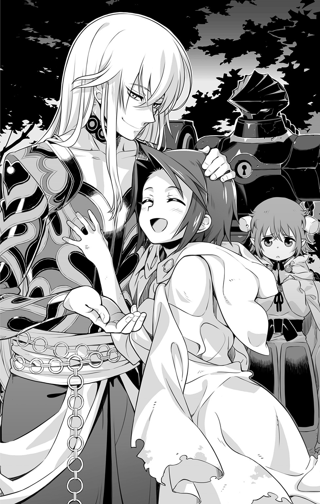

| サモンナイト U:X〈ユークロス〉―叛檄の救世主― | |
| 都月景 | |

この本は縦書きでレイアウトされています。
また、ご覧になる機種により、表示の差が認められることがあります。
前巻までのあらすじ
ハヤトから逃れたミコトは、マグナたちのいる大樹の森で目を覚ます。人を信じることを拒否していたミコトだが、マグナたちの暖かい気持ちに触れ、心の傷を癒していく。
一方、ハヤトがここまで執拗にミコトを追いかけるのには悲しい過去があった。
サイジェントで相棒キールたちと平穏な日々を送っていたハヤト。だが、その平穏を引き裂くように彼らの前に【無色の派閥】からの刺客が襲撃。
キールとハヤトを中心に激闘をくりひろげるが、かつて打倒したはずのオルドレイクと、【制錬者】と自称する謎の人物が現れる。彼らの強大な力の前に敗北を喫し、相棒キールを失ったハヤトは、オルドレイクを【再誕】させたという【制錬者】への復讐を固く誓う。
ハヤトはようやく見つけた同じ魔力を持つミコトを逃がすまいとしていたのだった。
そしてマグナたちと過ごすミコトの前に、再びハヤトが襲来。薄々ミコトが自分の追っている【制錬者】ではないと気づいていたハヤトに、ミコトは話し合おうと語りかける。そしてハヤトが後悔とともに繰り出した【終焉の星鎚】を、ミコトはカノンの亡魂の力を借り消滅させる。
自らの過ちに気づいたハヤトはミコトと和解。だが、同時刻、マグナたちの前にも新たな敵が襲いかかる――!!
この小説は、シミュレーションＲＰＧ『サモンナイト５』（発売・バンダイナムコゲームス）の「新生リィンバウム」が形成される以前の時代を舞台にしたオリジナルストーリーです。
この作品はフィクションです。
実在の人物・団体・事件などにはいっさい関係ありません。
断章 ～The Traitor who Wakes～
寒々とした光と静謐さに満ちた世界で、私はゆっくりと目覚めた。
思い返そうとして、私はすぐに気づく。
自分が何ひとつ持たざる者であるということに。
己が何者であるか。それどころか、今まで何をしてきたのか。
ここにある自分を裏づけるための記憶がいっさいない。
当惑しかけて、だが、私は思い直す。
それを理解できるだけの知能と意志があることが、まだしも救いと言うべきなのではないのか、と。
ひどく眠い。四肢の感覚が定かでなくなるほど眠っていたというのに。
身体に活力が足りない。ひどい疲れを自覚した途端、再び瞼が落ちてゆく。このまままた、いつ覚めるとも知れぬ眠りについてしまうのか。
「イヤだ......」
拒絶の意志を口にした瞬間、光の中に気配が生じた。
前後左右、いずこから向けられたものでもない。
それはまるで包みこむような、この空間全てにあまねく存在する意志。
果ても知れず姿も見えぬそれが、声なき声で、私に向かって呼びかける。
（眠るがいい―――今は休息の時。汝の目覚めの時は、未だ訪れてはおらず......）
魂に響き渡る声。
威厳と慈愛に満ちながら、それでいて無機質な冷たさを感じさせる声。
安堵と不安が入り交じった思いを抱いたまま、私は再び、眠りへと落ちてゆく。
◆
夢をみた―――否、夢で視たのかもしれない。
それは多分、私の知らない記憶。
実体験を伴わない、だが確かに事実として存在したであろう出来事。
声を荒らげて、激しい諍いを繰り広げる男女。
硝子の揺籃の中で、培養液を震わせて伝わるそれに耳を傾ける。
愛憎の果ての決裂。よくある陳腐なことだが、二人の立場は凡庸ではなかった。
異端の技術と豊富な知識を兼ね備えた創造者にして、この身体の基礎を形づくる卵子と精子の提供者たち―――けれども、父母と呼ぶには値しない。女にとっての私は誇るべき作品群のひとつにすぎず、男にとっては二人に破局を招いた原因のひとつでしかないのだから。
そうだ―――私は造られし存在なのだ。
温もりなき子宮にて生を授かり、数多の介入操作によって、理想的な形に作りあげられた兵器。【制錬石】の力を行使するための素体だ。
砕かれた【霊界サプレスの界の意志】の欠片から再構築されたふたつの【制錬石】。転生の輪からはぐれさまよう亡魂たちに作用することで、異なる超常の力を発揮するそれらは、世界の理の根底を揺るがしかねないものであった。
自分のこの左掌で脈動する赤紫色の宝玉は【再誕の制錬石】。
亡魂の記憶から新たな肉体を再構築してやることによって、死せる者たちを忠実な下僕として支配することを可能とするもののはずであった。
そしてもうひとつは、様々な亡魂たちを武装として憑依させることで生前以上の力を引き出し、全局面での戦闘対応能力を求めた【追想の制錬石】。
それは今、自分の隣の密閉容器の中で怯えているもう一人の赤子―――対として造られた【器】の右掌の中で、異常な昂ぶりを迎えつつあった。
我が身の都合ばかりを考えて口汚く争う、愚かな創造主たちは気づいていない。
怯える彼の心と【制錬石】が放つ紺瑠璃の光に招き寄せられて、数多の亡魂たちが集いつつあることに。実験という大義名分に基づいて、この研究施設で無造作に散らされてきた無数の生命が、その恨みつらみを晴らす手段を求めていたことに。
【追想の制錬石】の素体たる赤子は、そのはけ口として利用されたのだ。
召喚の門が開かれて、爆風が立ち並ぶ魔法装置や機械群をなぎ倒してゆく。
生命の危機を感じた赤子が、激しく泡立つ羊水の中で哀しげな哭き声をあげる。
それは不本意な形で生を与えられた挙句、身勝手な理由で抹殺されようとする者の怒りであり、先んじて同じ運命を辿ってきた者たち全ての報復でもあった。
世界が軋み、銀色の閃光とともに歪んでゆく。
理不尽な運命から逃れたい一心で、ここではない世界に向けて開かれた門。
透明な殻が甲高い音を立てて弾け飛び、外界との隔壁が強制的に取り払われた。
巻きこまれる形で覚醒した私は、肺腑の中からけばけばしい色の薬液を吐き散らし、入れ違うようにして炎熱にあぶられた外気を吸いこんだ。
苦しさにたまらず、喉奥からほとばしらせた悲鳴じみた産声は。
どこにも届くことなく、その身ともども、【界の狭間】へと吸いこまれていった。
◆
「これが......私の起源......」
再び目覚めた私の声は、幼子のそれではなく、以前よりずっと明瞭だった。
声だけではない。
弱々しく不確かだった手足にも確たる感触が甦り、疲労も軽減されていた。
（汝は生きながらえた。【界の狭間】を流されて、そして、我が下に辿り着いたのだ）
姿なき、遙けき声が語る。
全ては汝の魂に刻まれていた記憶。それを夢として我が垣間見せたのだ―――と。
（魂を形作るのは意志と記憶。記憶とは意志の軌跡を示す残滓であり、それら全てはマナを基盤として存続することを許される......）
マナとはなんだ、と私は問いかけた。
（マナとは根源たる力―――万物の全てを構成する基本要素であり、【始源の意志】から分かたれた、世界そのものたる無限の意志力なり......）
訝る私に、それが真実だと訴えかけるように、掌中の【制錬石】が明滅する。
だからこそ、全ての超常的な力は魔力を介し、意志を具現化することによって達成されるのだと。我が対となる存在が引き起こしたあの現象こそが、その証明である、と。
（世界は様々な意志と魔力によって形作られてきた。今しばし、夢にて学べ......）
再び、私は眠りへと落ちた。
◆
それはなんと壮大で、煌めきに満ちた世界の記憶であっただろうか。
ちっぽけな意志が集まって、同じ理想を夢見ることによって、世界は変革されてきた。
願いをかなえるために魂は必死にその輝きを高め、困難へと立ち向かってゆく。
現実に打ちのめされて、矛盾に苦しみ、心なき者たちから嘲笑われようとも。
それでも、ひと握りの意志たちはくじけることなく、満足できる答えへと辿り着いていく。そうした積み重ねが、ゆっくりとだが、世の理を作り替えてきたのだ。
遙かに遠い高みであろうとも、いつかは必ず、辿り着くことができる。
そう信じることができる、と私は強く思った。
（ならば......それは......何時、なのだ......？）
憂いに満ちた声が、高揚した私の想いを押し潰すかのようにのしかかってくる。
（いつかとは、何時なのだ？ 目指すべき地は、本当に存在する場所なのか......？）
辿り着ける、と私は叫んだ。
それを証明すべく、ありったけの意志の力で、より高みを目指さんとした時。
「......ッ!?」
足首に纏いついたものが、勇敢なる飛翔を阻んだ。
どろりとした黒い影。眼下いっぱいに満ちるのは、穢れに満ちた汚泥。
振り払っても振り払っても、より強く絡みついてきて放さない。
（辿り着ける者はよい......では、辿り着けぬ者は......どこへ向かえばいい......？）
行かせない、と影たちは謳う。怨嗟をこめて。羨望を露にして。
自分たちを置き去りにして、なかったことにしてゆくのは許さない、と。
（飛べぬ者たちは、飛び立とうとする者を決して許さない......その意志力の全てを使って邪魔をしようとする......同じ地べたまで引きずり落とそうとする......！）
「うわあああぁぁぁ―――ッ!!」
落ちてゆく。墜ちてゆく。堕ちてゆく。
おぞましい汚泥は口腔を割って肺腑を満たし、魂の芯から熱を奪ってゆく。
もがいて、あがいて、暗がりの中から必死になって飛び出しても。
引きずり下ろされ、また沈んでゆく。その繰り返し。
果てしのない煉獄―――。
◆
「つまりは......始源から正さねば、もう、どうしようもないということか......」
悪夢から目覚めた彼は、冷たく透きとおった声で呟いた。
その均整のとれた体軀はもはや立派な青年のそれであり、精悍な美しさをたたえた面差しに、ぞっとするほどに澄んだ瞳の輝きを宿していた。
ならば―――そうするしかない。
「そのために必要な力は、この掌の中にすでにあるのだから」
握りしめた【制錬石】の中から、まるで紅涙のような光がじわりと滲み出す。
やり方ならば全て、夢の中で学んだ。
「ここから出てゆく前に、いくつか尋ねたい」
遙けき声を発する存在に向けて、彼は問いかけた。
「お前は何者だ？ 何故、私をここに連れてきた？」
なお、しばしの沈黙を経て。
（我は......６番目の【界の意志】......あり得ざる形にて生じた......誰からも望まれず、語られぬこともない、今は名も無き【界の意志】なり......）
彼は得心し、皮肉っぽく唇を歪めた。
「あり得ざる者同士ゆえに引き合って、情けをかけたということか」
好きにとらえて構わぬ、と名も無き【界の意志】は応じた。
「だが、名が無いというのは不便なものだな......」
それは彼もまた同じだ。
（名をもたぬ我には、そなたに【真の名】を授けることはできぬ......が、示唆してやることならばできる......）
遙けき声は、厳かに告げる。
彼の身体には、微かながらも英雄の血が確かに流れていることを。
【エルゴの王】が密かに成した傍流であり、二つの国家を成立させる礎となり、多くの戦乱を引き起こすきっかけともなった、災禍を呼ぶ忌まわしき血統。
【真聖皇帝】の血脈―――死にゆく前皇帝の肉体から摘出された血と肉は、彼の人工子宮のみに追加投与された、おぞましき聖なる供物であった。
全ては、造物主たる悪女の好奇心によって試みられた実験。
だがそのおかげで、おそらく彼の性能は増している。
気まぐれに与えられたものであろうと、有用ならば、使うことに躊躇などない。
「【真聖皇帝】か。さすがに現時点でそれを名乗るのは大仰すぎるな。ならば......」
しばし思案した後、彼はうなずいた。
「伝説のエルゴの王の異名たる【誓約者】にならって、我は【制錬者】とでも名乗らせてもらおうか」
憧憬と感嘆の響きを帯びて、姿なき遙けき声が空間を揺らした。
（【制錬者】―――旧き英知を束ね、甦らせる者―――【再誕の制錬者】！）
「なるほど、こいつの語源はそこからきていたのだな」
左掌の【制錬石】を見つめた彼は、薄く笑みを浮かべると。
銀の光で空間を切り裂き、その向こう側に悠然と消えていくのであった。
１ 穏やかなる日々 ～There was There Once～
帝国の国境付近に位置する、旧街道沿いの宿場町トレイユ。
その町外れにある宿屋兼食堂・忘れじの面影亭の店内は、多くの美食通が賞賛した絶品料理を求めるお客たちによって、今日もまた大盛況となっていた。
「おイモさんコロッケ５つにピリッとオムレツ３つ、ドラゴンチャーハンふたつにミニ海賊ナベがひとつ、春雷炒めふたつ、キューポラカレー３つ、それからええと......愛情ラーメンと至源のギョーザのサービスセットが６つ、お願いいたしまぁ～す！」
「あいよーっ！」
「ギネマ鳥の串焼き盛り合わせ４つと、ナウバまるごとアイス３つもよろしくです！」
「お任せーっ！」
競うようにオーダーを厨房に伝えると、二人のウェイトレスたちはそれぞれのトレイに出来立ての料理とお冷やのグラスを満載して、大慌てでテーブルにとって返す。
お客でごった返すホールを、すいすいと器用に立ち回って配膳するのはポムニット。
本来の仕事はブロンクス家のメイドなのだが、この店のオーナーでもある主人の命令により、ランチタイム限定で助っ人に駆り出されているという次第だ。
「はいはーい、お待たせしましたですよーっ」
お屋敷ではドジばかりが目立つ彼女であるが、ここでは主戦力として申し分ない活躍ぶりを示している。接客仕事のほうが天職なのではと周囲に思わせるほどに、明るい笑顔で生き生きと働いている。もっともそれは、ずっと隠し続けてきた自分の出自について周囲の理解を得られたおかげなのかもしれないのだが。
ポムニットは半魔―――悪魔の父と人間の母との間に生まれた【響界種】であった。ゆえに迫害を受けることも多く、また父親から受け継いでしまった【略奪】の能力に対する不安からか、大勢の人たちの前に出ることを避けているふしがあった。
が、自分を慕ってくれる子供たちに勇気づけられて、今ではもうそれを克服している。
お尻を触ってくる不埒なお客さんの二の腕を、にっこり笑顔でぎゅうっとつねる程度の余裕を見せるほどであった。無論、本気なんて出してない―――でなければ大惨事だ。
「あ、あわわっ！ お、お待たせいたしました......っ！」
もう一人のウェイトレスであるエニシアは、見てのとおり、まだまだ危なっかしい。
慌てるあまり、転んで料理をひっくり返してしまうことはさすがになくなったけれども、まだまだ安全第一で、てきぱきというにはほど遠い。それでも健気にがんばる姿が保護欲をそそるのか、常連客たちはそんな彼女を温かい目で見守りつつ、運ばれてきた料理が無事にテーブルの上に届くよう自主的に手助けしてくれているのであった。
それに実のところ、エニシアの本領が発揮されるのは休日前のディナータイムなのだ。
自分なりにできることを必死に考えた末、エニシアはフルートの演奏を披露することにしたのだ。これが非常に評判となり、彼女の独奏目当てに新規のお客がやって来るようにもなってきた。
なにせ、エニシアの演奏は素人芸ではない。
劇音楽家として名を馳せた父と月光花の古妖精である母との間に生まれた彼女もまた【響界種】であり、両親から譲り受けた音感と感受性はそのまま、奏でるフルートの音色を豊かなものにしていた。
かつては自分の寂しさを慰めるためだけに奏でていた楽曲が、今や喜びに満ちあふれた響きとして、耳を傾ける人々を幸せな気分にしているのだ。
エニシアにとって、これほど嬉しいことはあるまい。
そんな二人の雇い主はというと、これまた尋常ではない経歴の持ち主であった。
彼の名前はライ―――あの有名なグルメガイドブックである『ミュランスの星』が認めた帝国最年少の有名料理人であり、古参のシェフたちからも将来を嘱望されるほどの腕前の持ち主なのだ。
そして、彼もまた【響界種】であった。
エニシアと同じく、水面に映る光の古妖精を母親とし、【名も無き世界】からやってきた男を父親として生まれた彼は、つい最近までその出自を知らされずに生きてきた。
とはいえ、決して安穏と暮らしていたわけではない。
むしろ他人が聞けば、目を剝いてしまいそうなくらい過酷な人生を送ってきている。
わずか五歳で実質的に独り暮らしを強いられ、社会的に一人前として認められる十五歳になってからは、保護者代わりである町の名士・ブロンクス家のテイラーにこの宿の経営を任された。以来、ひたすら地道にまっとうな暮らしをしようと努力してきたのである。
が、これもまた星の巡り合わせと言うべきであろうか。
ひょんなことから至竜の卵を拾ってしまい、そこから生まれた竜の子を巡る騒動に巻きこまれて、悪漢たちを相手に戦うことになってしまったのである。
彼の双子の妹エリカの病気を治療する方法を探す旅に出たきりのダメ親父が、事の発端に関わっていると知ってしまった時点で放り出すこともできず、皮肉にもその馬鹿親父に叩きこまれた武術の数々を駆使することで、見事、最後までライは戦い抜いたのである。
その過程で己の素性を知ることになった彼は、悩みながらも、ひとつの決意をした。
この世界の人間と召喚されてきた異界の者たち―――その間にある深い溝が引き起こす悲しい出来事を防ぐとともに、両者の狭間に立つ【響界種】として仲立ちをしていきたい。
全部を正すことはできずとも、せめて目の前で起きたことだけでも、なんとかしたい。
強くひたむきなその思いは、暗い復讐心で暴走する幽角獣の【響界種】ギアンをぎりぎりのところで救い、憎しみからの和解が決して絵空事ではないと証明してみせたのだった。
国境の宿場町・トレイユで勃発しようとしていた人間と召喚獣の全面戦争は回避され、季節がひと巡りした今となっては、すっかりのどかさを取り戻している。
それは勇者として賞賛されるよりも、ライにとってはずっとうれしいことだった。
こうして昼時の厨房で、無我夢中になって料理の腕を振るっていられることの幸せ。
やはり、人生はまっとうが一番なのだと、改めて嚙みしめてしまうライである。
（とはいえ......さすがにいくらなんでも、あのままじゃ働き過ぎでぶっ倒れちまっていただろうなあ）
ライの作る美味しい料理を求めて、お客はどんどん増えていくばかり。
意地と根性でさばききろうとしても、質と速度を両立させるのには限界がある。
給仕係とは違って、こればっかりは他の者に任せるわけにはいかない―――はずだった。
シャオメイからの推薦状を携えた彼女が、超新星のごとく現れるまでは。
「店長ーっ。ラーメンのスープの仕上がり具合、確認のほうお願いしまーすっ！」
「おう、わかった！ そんじゃ悪いけど、フェアはギョウザの仕上げのほう頼むわ！」
「はーい、了解でーす！」
高く結わえた髪を軽快に揺らしながら、元気よく厨房を闊歩する新たな女料理人。
彼女の名前はフェア。
いろいろと理由ありらしい、ライよりもひとつ年上の少女だった。
◆
「そりゃあ驚いたわよ。あのライに負けず劣らずの料理バカが、この世にもう一人いただなんて......さすがのパパも、思わず固まって目をパチクリしてたくらいなんだから！」
興奮気味に足をバタバタさせて、リシェルはそう力説する。
【金の派閥】の召喚師である彼女は、面影亭のオーナーであるブロンクス家の跡取り娘であり、ライとは腐れ縁の幼馴染みでもあった。
「そうよねえ。私もまさか、ライくんに負けないくらいお料理好きで働き者の女の子に出会うことになるなんて、思いもしなかったもの」
お手製のハーブティをポットから慎重にカップへと注ぎながら、ミントもそう同意する。
こちらは【蒼の派閥】の召喚師にして異界の植物の研究にいそしむ才媛だ。ライのお店が仕入れている野菜は全て彼女の畑でとれたものであり、優しい近所のお姉さんとして、子供たちの良き相談相手にもなっている。
今日は久しぶりに生家に帰ってきた年下の友人に、少しでもくつろいでほしくて、女の子だけのお茶会に誘ったのだ。
いまだ慣れない帝都における母の実家での暮らしや、正式な【金の派閥】の召喚師となったことで課せられる各種課題や簡単な実地任務など、予想よりはるかに多忙な日々に、リシェルは正直お疲れ気味のようである。
それでも以前のようにかんしゃくを起こしたりしないのは、夢をかなえるために軍学校に進学した弟ルシアンに代わり、正式に名門ブロンクス家を継ぐと決意したからだ。
「ああ、ちょっと見ない間にご立派になられて......」
「大げさだってば、ポムニット。まだまだ全然、たいしたことはできてないんだしさ」
「そのお言葉自体が、もう私、うれしくってぇ......えううぅ......っ」
「あーっ！ だからもう、泣くなーっ！」
嬉し泣きで鼻をすするポムニットと、照れくさそうに怒ってみせるリシェル。
そんな二人の変わらぬやりとりを、エニシアは微笑みながら見つめている。
自分たちが持ちこんでしまった争いのせいで、一時は敵味方に分かれて戦うことになった二人が、こうしてまた仲の良い姉と妹のように振る舞えるようになったことが、彼女には本当に嬉しくて、同時にすごくうらやましかったのだ。
もっとも今は、二人の仲をうらやんで、さみしく感じたりすることはなくなっている。
「ミントさんのお家での下宿生活はどうなのよ、エニシア？」
「すごく、よくしてもらっていますよ。髪を結ってもらったりとか、一緒に畑のお野菜の世話をしたりとか。普通の暮らしってこうだったんだなあ......ってすっごく懐かしくて、とっても楽しくて......」
「私も楽しいよ。リシェルちゃんに続いて、またこの町での妹が一人増えたみたいで♪」
そっかぁ、とリシェルは満足そうに笑い、ポムニットはさもありなんとうなずいた。
「お城での姫さまは、本当に温室育ちの箱入り娘として扱われていましたからねえ。自称お義兄さまのあの過保護っぷりは、今だから言えますけど、尋常じゃあなかったですよ。ええ」
エニシアはつい最近まで、ギアンを盟主とする組織の象徴的存在として扱われていた。その組織は召喚術によって強制的にこの世界に連れてこられ、様々な迫害を受ける異界の同朋たちを救い、元いた世界に帰すために活動していた。
そう―――後の【異端召喚師審問】のきっかけとなった【浮遊城事件】は、そんな彼女たちがもたらしてしまった騒ぎだったのである。
「あはははは......」
今でこそ苦笑いをするしかないエニシアであるが、疑うことなくその境遇に甘んじていたばかりに、取り返しのつかぬ誤解を招いてしまうところだったと、事件の後には理解して深く反省もしている。硝子一枚隔てた向こう側で起こっている現実の重さがこわくて、気づかないふりでやりすごそうとした。無知をいいわけにして、逃げようとしたのだ。
（でも、ライやみんなのおかげで、私はギリギリで踏みとどまることができたんだ）
弱くてずるい自分を認めて、それを正したいと願った。
その勇気が、人間との全面戦争に向かおうとしていた組織の暴走を止めたのである。
従順であったエニシアの反抗により、自暴自棄となった盟主ギアンは、彼個人の目的であった復讐だけでも果たさんと、いにしえの儀式によって自身を竜に変えようと試みた。
魂が進化の果てに至るという竜の境地―――優れた魔力をもつ幽角獣の【響界種】たるギアンには、そこに到達する資質は充分あったが、歪んだ復讐心をもって挑んだことにより、正しき道を踏み外してしまう。堕ちたる竜としての覚醒―――目覚めた魂の力を自制することが適わず、くるおしい衝動のままに破壊をふりまいて、最後には魂ごと完全消滅に至るという最悪の結末。あの事件における凄惨な印象の大半は、堕竜と化した彼が引き起こした無差別破壊の爪痕によるところが大きいだろう。
けれど、エニシアにとってのギアンは救い主だった。
同じく迫害を受けてきた【響界種】という境遇ゆえに、まるで本当の妹を可愛がるようにして自分のことを大切に守ってくれた。放っておけば自壊してしまう彼の魂を、かろうじて救えたのは、ライやこの町の優しい人たちが力を貸してくれたからだった。
本当に、本当に感謝している。
「ギアンは今、【幻獣界】にある竜たちの郷で、元の姿に戻るための方法を探しているんだよね」
「はい、うまくいけばよいのだけれど......」
堕竜に変質してしまった彼の魂はぼろぼろで、自己を保つことさえ難しいほどに傷ついていた。故郷に帰りたいと願うはぐれ召喚獣たちを連れて【呼吸する城】で界を渡った時、少しでも穏やかに暮らすことができるようにと、エニシアたちが【幻獣界】の竜たちが暮らす郷まで送り届けて、今に至っている。
「クラウレさんも側についてくれているんだし、きっと大丈夫だよ」
不安げなエニシアに、ミントはそう請け合った。
有翼亜人の戦士にして、隠れ里の守護竜を補佐する御使いの長だった彼は、大義と情の板挟みによって生じる矛盾に、ずっと煩悶し続けてきた。
そんな心の闇をギアンに見透かされたクラウレは、彼の野望に自身の理想を仮託することで救いを求めてしまう。その結果、妹のアロエリを含めた仲間たちを裏切って、戦いの果てに敗れ去った。
そして今は、過ちを認めたうえでギアンと共にやり直そうとしている。一方的に崇めてすがるのではなく、互いの弱さを認めたうえで支え合って生きてゆく。良い意味での主従関係を今度こそ築いてくれるだろう。
「そうそう。それに向こうの世界には、子供たちを連れて帰ったカサスさんだっているんです。人一倍優しいあの人でしたら、いざという時にはきっと力になってくれますよ」
ポムニットが、そうつけ加える。
恐ろしい【兇血】の呪詛によって魂を日々削りとられながらも、子供たちの幸せな未来を願って戦い続けていた獣皇カサス。
半魔であることを知られてしまい、拒絶される恐怖から逃げ出し、行き場を見失っていたポムニットを見かねて、エニシアのもとに導いてくれたのも優しい彼だった。
「今のギアンは、もうひとりぼっちじゃないんだもの。きっとだいじょうぶだって、私も信じたい......ううん、信じてあげなくっちゃ！」
「うん、エニシアちゃんのその想いはきっと彼の力になってくれるはずだよ」
「ですとも、ですとも♪」
古妖精の純粋な想いは、それを向けられし者に強力な加護を与える。特に深く愛されし者はリャーナという名で呼ばれ、想い人たる妖精の愛ある限り、絶対不滅の存在になれるとさえ伝えられているのだ。
（半妖精の【響界種】である私の想いに、どれだけの力があるのかはわからないけど、でも......）
少しでも大切な人たちの助けになれるのなら嬉しい、とエニシアは思う。
鋼の子供らを引き連れて贖罪の旅に出た教授も、部下たちと共に今は人足として、この町の復興に尽力している将軍も。
自分を幸せにしようとがんばってくれた彼らに、今度は自身の幸せを得てほしいと彼女は願い、星空に祈りを捧げているのだった。
「そういやさ、ミルリーフや他の御使いのみんなはどんな具合なワケ？」
クラウレの話題が出たのをきっかけに、リシェルがミントに尋ねた。
「隠れ里のほうは相変わらずだって、リビエルちゃんは言ってたわ。以前と比べたら減ったそうだけれど、逃げ出してきたはぐれ召喚獣たちの保護は今も続けているそうだし、アロエリさんと力を合わせてがんばってるみたい」
ギアンたちが襲来する以前の【呼吸する城】は、迫害から逃げてきたはぐれ召喚獣たちを保護する隠れ里として機能していた。そこに暮らす者たちを見守るのが守護竜であり、その手助けを行うのが御使いというわけだ。
知識の天使であるリビエルと有翼亜人の弓使いであるアロエリは、事件当時はまだ未熟であったが、大きな試練を乗り越えたことで成長を遂げている。
先代の遺産を継承し、なんとか一人前となった守護竜を支えるべく、二人三脚四翼でがんばっているようであった。
「セイロンも旅に出ちゃったみたいだし、二人ともかーなーり大変なんだろうなあ」
今は亡き先代の守護竜に対する義理を果たした彼は、本来の使命であった行方知れずの龍姫さま捜しを再開すべく、隠れ里から旅立っていった。
「大変は大変みたいですけど、そう心配しなくても大丈夫だと思いますよ。ちょくちょく交代でライさんのお店にも顔を出して、しっかり息抜きとかはしているみたいですし」
「そうなんだろうけど、でも......ねえ？」
テーブルにぺたっと俯せて、ふてくされ顔でリシェルはぼやく。
彼女の不満の正体を、この場にいる誰もがわかっていた。
一同が顔を揃える機会が、日に日に減ってしまっていることが寂しいのだろう。
リシェル自身、それは仕方のないことだとはわかってはいる。わかってはいるのだが。
「なんだか、つまんないよ。大人になればいろいろと自由にできるって思っていたのに、逆にどんどん不自由になっていってるみたいでさ」
子供じみてはいても、きっと大人の誰もが折に触れては問いかけるであろう疑問。
多分こればかりは、その時々において納得できる答えを見つけるしかないのだろう。
それを知る年長者たちは、いたわりと優しさをこめた瞳で、多感な少女たちを見守る。
「だからこそ、こうした些細な時間が愛しく思えるようになるんですよ」
リシェルの背にそっと触れながら、ポムニットは穏やかな声でそう言った。
みんなでテーブルを囲んで、美味しい物を食べながら、いろいろなことを語り合う。
ちょっと前まで当たり前だった日々は、今ではすっかり遠くなってしまったけれど。
「でも、きっとまた機会はやってくると思うの。その時みんなと胸を張って再会することができるように、私たちもそれぞれにがんばらなくっちゃダメだよね」
淹れ直したお茶を注ぎながら、自身にも言い聞かせるようにミントが呟いた。
「うん、そうかも」
ふうっと息をついて気持ちを入れ替えると、リシェルはカップに口をつける。
よい香りのするお茶が喉を滑り落ちてゆくと、心まで内側から温められてゆくようだ。
「あの子ともさ、こうやってお茶できたらいいんだけどなあ」
多忙なライの助っ人としてやってきたこともあって、彼女はなかなかそうした機会を作ってくれない。何度か誘ってはいるのだが、応じてくれたのは初回だけで、以降はつれなくされてばかりだ。一緒に仕事をしているエニシアたちは、彼女が決して非友好的な人間ではないと知っている。気配り上手だし、話しかければ愛想よく応えてもくれる。
ただ、どこか必要以上に周囲に馴染むのを避けているようにも感じられた。
（そのあたりが、いわゆるフェアさんのワケありの部分なんでしょうね）
自身の過去とも照らし合わせて、ポムニットはそう思っている。
他人に話せぬ特別な事情があるという前提で採用した以上、ライもわざわざ詮索したりはすまい。表立った支障が出てこない限りは静観すべきという方針は、ミントもまたポムニットと同じ意見だった。
そしてエニシアは、リシェルと同様の寂しさを感じつつも、ある疑問を感じていた。
（もしかして、フェアが避けているのはみんなと話をすること自体じゃなくって―――）
彼女はひそかに気づいていたのである。
料理を作っている時のフェアが、いっさい味見をしていないことに。
ライであっても、ちょくちょく確認はしているのに。
味にくるいが出るわけでもないし、最初はただ、すごいなと感心していた。
でも、自身が簡単な調理を手伝うようになって気づいたのだ。
それはやっぱりおかしいのではないか―――と。
◆
「それが理由で、さっきからお前はむくれてたのか」
「うーっ、だってぇ......」
ぷうっと頰を膨らませるミルリーフの桃色の髪を、スバルは苦笑しながら、その大きな手でわしわしとかき回してやった。
ここはトレイユの駐在所前。旅におけるひととおりの用事を済ませたスバルたち一行は、故郷の島へと帰る途中、馴染みのライのところに挨拶しにやって来たのであった。
鬼人族の若者スバル、犬型亜人族のパナシェ、ちっちゃな花の妖精マルルゥ―――忘れられた島から見聞のためにやって来た彼ら一行は、召喚獣を攫って違法売買していた悪党を、ライたちと力を合わせて叩きのめした仲である。
守護竜として隠れ里を守るミルリーフが、久しぶりに外に出てきた理由のひとつは、そんな彼らを見送るためであったが、互いの近況を話すうちに、話題が新顔のフェアに及んだ結果、なぜかご機嫌斜めになってしまったというわけだ。
「しかし、まさかお前と同じ竜の子まで連れてるだなんて、驚きだよなあ」
「同じじゃないもんっ！ リュームくんは男の子で、ミルリーフはレディだもんっ！」
くしゃくしゃにされた髪を手櫛で直しながら、いーっと彼女は歯を剝いてみせた。
「それに、あのコは似てるけど違う。ミルリーフみたいに人間の姿になれないし、普通におしゃべりすることだってできないんだもん......」
語尾が小さくなってしまったのは、それが残念でたまらないという証拠だった。
無理もあるまい。
フェアが連れていた青き鱗の小竜の姿を見た時、彼女はようやく自分と同じ存在と友達になれることが嬉しくてたまらなかったのだから。
けれども、その青き竜―――リュームは、ミルリーフのような至竜ではなかった。
「そりゃあ仕方ないさ。お前が特別なだけで、世の中にいる竜の大半は亜竜なんだし」
高度な知能や神秘の知識をもつ竜は、ごく一部であるということだ。
むしろそこまで一致していたら、薄気味悪いどころの話ではないとスバルは思う。
ただでさえライとフェアには共通点が多すぎて、マルルゥなどは混乱のあまり目を回してしまう始末だったのだから。偶然の一致にしては、ちょっと出来すぎている。
だが、期待をしていたミルリーフにしてみれば、それこそ不満で仕方なかった。
「ったく......まーだ根にもってんのかよ、お前は」
各種書類に記入を済ませたライが、パナシェと共に駐在所から出てくる。
帝都に入るために必要な手続きをしにきたわけだが、これもまた【浮遊城事件】以降に施行された取り決めのひとつだった。他国からの旅行者はもとより、帝国臣民であろうとも、しかるべき証明書がなくては帝都ウルゴーラには滞在できないのである。
「グラッドさんがいてくれるおかげで、本当に助かりますよ」
「ははは、公僕としてはそう言ってもらえると慰めになるよ。なんせ普段は、面倒くさい手間を増やすなってクレームばっかりもらってるしな」
パナシェにそう感謝されると、ぼさぼさ頭をかきかき、グラッドは苦笑いした。
彼は市井の平和を守る駐在軍人であり、ライたちから兄貴分として慕われる好青年だ。
悪ガキどもが持ちこんでくる厄介事にも、親身になってつきあってくれる。
彼が窓口であるおかげで、面倒な手続きも随分と簡略化してもらえているのだった。
「まあお前たちの場合、いざとなればアズリア将軍の口利きがあるんだろうけどさ」
下っ端の彼からすれば雲の上のような存在の上級軍人と、スバルたちは旧知なのだ。
「それが、なんていうかさ......そう易々と頼れなくなっちまってるんだよな、雲行き的に」
怪訝そうな顔をするグラッドに、スバルはその大きな肩をすくめてみせた。
「一連の召喚術にまつわる強硬策のせいでよ、軍の内部でも賛否両論ふたつに意見が割れちまってきてるんだとさ。混乱に乗じていろいろときな臭いことを企んでる連中なんかも出てきてて、気が休まる暇がないってアズリアのねーちゃんもぼやいてた」
「ちょっ!?」
思いがけず暴露されてしまった軍上層部の醜聞に、グラッドは目を白黒させる。
機密漏洩の罪で即逮捕ものなのだが、核心に近すぎる物騒な話題だけに、事を公にすればむしろ、グラッド自身にとばっちりが降ってきかねない。
そこまでわかっていて、あえてアズリアはスバルたちに情報を流しているのだろう。
信頼できるとお前が認めた相手にならば話してもよい―――そんな口約束を交わしているそうだが、打ち明けられる側からすると心臓に悪かったりする。
「実権を握っている摂政に与する側と、一刻も早く幼帝を正式に即位させたい側の間で、小競り合いじみたこともいろいろと起きているそうだよ」
「それじゃあまるで、旧王国から帝国が分離していった過程そのままじゃないか」
パナシェの指摘を耳にして、グラッドはさらに呆れかえる。
政に携わる者たちが権威をないがしろにした結果、国体そのものが揺らいでしまう。
エルゴの王の築いた王国が、今の聖王国と旧王国に分裂してしまった時もそうだ。
王の隠し子を強引に担ぎ上げようとしたせいで、徒に平和を乱すことになった。
（魂が転生していくように、全ての出来事は輪を描いて連なってるっていうけど......）
同じことの繰り返しだとしたら、虚しいだけではないかとグラッドは思ってしまう。
そして、そんな彼の疑問をあっけらかんとライは断ち切ってくれるのだ。
「難しいことはよくわかんないけどさ、物事はなるようにしかならねーよ。強引に曲げたとしても結局はどこかで反発を喰らってブレちまうんだ。良きも悪きも含めて、さ」
そのブレこそが人の営みの証なのだと、今のライは思っている。
ままならぬことは多々あっても、その振り幅を変えてゆくことは不可能じゃない。
結果が意のままにならぬからといって手間を惜しんでいては、それこそ意に沿わぬことばかりになってしまう。だからこそ人は皆、あがいて、もがいて生きていくのだ。
「お前にかかると、世界の危機も大したことなんかじゃないって思えちまうよ」
皮肉ではなく頼もしげな気持ちをこめて、グラッドは弟分たる少年に笑いかけた。
「まあな。実際、今の俺にとって大事なのはグルメ爺さんから宿題にされた課題をクリアできてるかどうかのほうだしな」
フェアという強力な助っ人を得たことで、短期間の遠征を繰り返す形ではありながらも、ライは念願の帝都での料理修行を開始していた。今回の滞在手続きもそのためのものであり、久しぶりにミルリーフを同伴しての旅行となる予定だった。
「お互いずっと忙しくて、ゆっくりできなかったもんな。この旅の間だけは、昔みたいにパパーって甘えてもいいんだぞ？」
「ミルリーフ、もうそんな子供じゃないもんっ」
とは言いつつも、久しぶりにつないだ手をしっかりと握って放さぬ愛娘に、ライは微笑む。
「さあ、次はオヤカタさんのところに行ってるマルルゥを迎えに行きましょう」
パナシェがそう促して、一行は次の目的地に向かって歩き出す。
「道中、くれぐれも気をつけてな！」
「うんっ、いってきまーす♪」
見送るグラッドに、片手を大きく振って応えるミルリーフ。
次代を担う子供たちの未来は明るく、どこまでも広がっているかのようであった。
◆
「いいから、テメエはとっとと後退しやがれ！」
そう怒鳴りつけた彼の声からは、常の余裕が失われかけているようだった。
だからこそ、なおのことセクターは逡巡せずにはいられない。
「ですが、いくら貴方でも相手が......」
「故障しちまった今のテメエじゃ、かえって足手まといだって言ってんだよ」
「......っ」
セクターに返す言葉はない。実際、彼の装甲には幾重にも亀裂が走り、露出した内部機構は火花をほとばしらせているのだ。偏光迷彩を使うどころか、出力をあげることさえ生命がけとなる。無論、必要ならば彼は、そうすることさえ厭わぬつもりなのだが。
そこまで読みきったうえで、だからこそケンタロウは強い言葉を向けたのだろう。
親子そろって容赦なく厳しくて、そして不器用に優しい。
「ビルドキャリアーには、オレ様の愛娘やナイアだって乗っているんだ。ジジイやロボ娘たちだけに任せておくのは、悪いがどうにも安心できねえんだよ」
「ケンタロウさん......」
「よろしく面倒みてやってくれよ。トレイユにいるバカ息子ともども、な」
らしくない言葉が口をついて出てきたのは、彼自身が無意識に、この戦いの趨勢に不吉を感じとっていたからなのかもしれない。
ともあれ、賽は投げられた。
「そんじゃあ、ガチ本気でおっ始めさせてもらうぜ......【制錬者】の兄ちゃんよォ！」
束ねた光を刃の切っ先にまばゆく煌めかせて、ケンタロウは突撃する。
それを迎え撃つのは美貌の青年。余裕の笑みを浮かべてみせる【再誕の制錬者】。
「うおおおおおおおおおおおおりゃあぁぁぁぁーッ!!」
愛する妻である古妖精から授けられた水鏡の魔剣は、水面に跳ねて輝く光の滴を集めて創られた、閃光のごとく全てを貫き、切り裂いてのける武器。
大切な家族を守るヒーローになるのだと、若き頃の彼が誓いを立てたこともある剣だ。
（なにひとつろくに守れちゃいねえし、むしろ傷つけてばかりかもしれねーけどな......）
結果はともかく、いつだって彼は真剣だった。
妥協や手抜きができず、全力でぶつかりすぎるから、世間から弾き飛ばされる。
痛い目にあうのは百も承知で、それでも我を通し続けてきた。ガキのままだったのだ。
そして―――大人になり損ねた。
父親となって、子供たちの成長とともに自然に学んで変わっていくはずだったもの。
その流れを不自然な形で断たれてしまったことで、宙ぶらりんとなった彼の心は荒れくるい、取り返しのつかぬ多くのことをしでかしてしまった。
今さら詫びようも、償いようもない。その罪の苦さは、ただ享受するしかない。
（だから、せめてよ......）
とことん汚れまくることになったとしても、一番大切なものだけは守りぬきたい。
不器用すぎて、利口には、完璧にはできずじまいかもしれないけれど。
せめて、子供たちの未来を守る泥よけのひとつぐらいにはなってやりたい。
それこそが、ケンタロウが屈折の果てに見いだした親としてのあり方であった。
だからこそ、絶対にここは退けない。
目の前の青年が目指しているものは、ギアンのそれとは決定的に違う。
世界の在り方そのものに疑念を突きつけて、大きな変革をもたらさんとする者だ。
己の生い立ちにまつわる苦難を乗り越えて、ささやかな日常の幸せを取り戻したばかりの息子には、決して関わりをもたせるわけにはいかない。
「ぐぅ......ッ！」
光の軌跡が鮮烈に瞬いたその瞬間、真っ赤な血の花が宙に咲いた。
刃と刃がぶつかりあうことすらなく、後の先をとって振るわれた剣閃によって。
ケンタロウの右腕は肩口から千切れ飛び、握った剣ごと地面に叩きつけられていた。
「んな、バカな......ッ」
だくだくと血を流す肩口を押さえて、うずくまるケンタロウ。
無慈悲にそれを見下ろす【制錬者】の手には、冷え冷えとした殺気と魔力を放ち続ける純白の魔剣―――【覇王の剣】が握りしめられている。【再誕】の恩恵によって彼の配下となった者から献上されたそれは、伝説の魔剣鍛冶師が鍛えあげた逸品だった。
【誓約者】のもつサモナイトソードと同じ製法を用いて創られたこの剣もまた、使い手次第で世界を滅ぼす威力を発揮するのだと、以前の所有者は述べていたが。
「あながち噓でもないようだな。馴染んでいくほどに威力が増してゆく感覚がある」
刃に滴る血を振り払って、そのまま鞘に納めようとした時。
「おい、なに勝手に終わらせてんだよ......あァ？」
その背に向かって、手負いの男が嚙みついた。
「そこまで無様にやられておいて、まだ負けてないつもりでいたのか」
おうともよ、とケンタロウは凄絶に笑ってみせる。
「オレ様は不死身のスーパーヒーローなんでなァ。これしきのケガじゃあ止めることなんてできやしねえんだよ......ッ」
いつの間に拾い上げていたのか。
切断されたはずの腕が、その傷口に押し当てられていた。
さらに信じがたいことに、切断面が癒着して、みるみる再生を遂げつつあるのだ。
召喚術による治癒や、ストラによる回復とはまるで次元が違う。
「ほう......それが、いにしえの妖精に【愛されし者】が得るという【不死身の加護】というものか」
「すっげえ痛いしめちゃくちゃ疲れもするから、完全無敵ってわけじゃねえんだがよ」
再結合した指先の感触を確かめつつ、青ざめた顔でケンタロウは告げる。
「それでも今しばらく、テメエを足止めしておけるくらいの元気は残ってるぜ！」
「愚かな......」
寒々とした音を鞘走らせて、再び構えられる覇王の剣。
「ならば、その執念深き心ともどもに徹底的に切り刻んでくれようぞ！」
「来いや、オラぁッ!!」
絶望的な結末しか見えぬ闘いを前に、ケンタロウは極限まで意地を張るのであった。
２ 因果再臨 ～Endless Chain～
「チッ。さんざん大騒ぎするだけしといて、なんだかんだで結局は和解しちまうのかよ」
たやすくは引けない意地と意地を張り合って、天変地異にも匹敵する力と力をぶつけあって、一歩間違えれば本当に取り返しのつかぬことになっていたかもしれないというのに。
その原因たる【誓約者】ハヤトと【制錬者】ミコトは、もはや互いに敵対する者ではなくなっていた。和解のきっかけとなったのが、ミコトの【制錬石】が放つ魔力によって憑依召喚された亡者の魂であることも、悪魔である彼はしっかりと見抜いている。
（ま、詳しいことはどうでもいいぜ。オレにとっちゃ、人間同士のゴタゴタから出てくるさまざまな感情さえ味わえりゃあ、それで満足なんだからな）
悪魔にしろ天使にしろ、霊界サプレスの霊的生命体たちは皆、生物が発する雑多な感情を魂の糧として欲する。特に人間のそれは豊潤であるために、彼らの多くは救済や誘惑によってその営みに干渉し、正負それぞれ自分たち好みの感情を引き出そうとするのである。
悪魔たちが好んで騒乱を起こして回るのは、こうした本能に起因しているわけだ。
とはいえ、そうした手間や小細工を好まぬ、バルレルのような悪魔もいる。
ちまちまと回りくどい策を弄して計画的に搾取するのではなく、その時その時に生じる新鮮な感情の爆発を存分に喰らう―――【兇嵐の魔公子】という魔王としての尊称をもち、刹那の破壊衝動を力の源とする彼のように、己の腕っぷしに自信のある者ほど、そうした傾向は強いようだ。
「実際、今もたらふく喰わせてもらったしな。ヒヒヒッ」
なにせ、伝説の英雄たる、二代目【誓約者】が思いっきりまき散らしてくれた憎悪である。
痛めつけられた身体の傷を快癒させたのみならず、身体の奥底からカッカと燃えてくるような活力をバルレルに与えてくれていた。当人が知ったら思いっきり嫌な顔をするに違いないが、余計な手間をかけさせられた分、これくらいは役得として当然だろう。
（とはいえ......）
眉をひそめて、バルレルは森の彼方を見やる。
桁外れの術者同士の激突による影響なのだろうか。ここら一帯の魔力の様相がおかしな歪み具合を見せている。イヤな感じにざわついて、どうにも見通しがきかぬ感じだ。
戦鬼としてのバルレルの嗅覚には、それが引っかかって仕方がない。
「おい、テメエら。ケンカが終わったんなら、きちんとあのオンナに謝っとけよ。あれで結構、拗ねると面倒くさかったりするからな」
経験に基づく忠告を残して、悪魔の少年はその翼を広げて舞い上がる。
「どこへ行くんだよ、バルレル!?」
「出遅れたバカ主人を迎えに行くんだよ。ッたく......どこで寝ぼけてやがるんだっての！」
ミコトの問いに、振り返りもせずそう答えて、バルレルは飛び去っていった。
「ああ見えてさ、結構あいつはマグナの世話を焼きたがるんだよ」
苦笑しつつ、ハヤトがフォローする。
「悪魔のバルレルにしろ、妖狐のハサハにしろ、マグナの護衛獣たちは【誓約】に強制された範疇を超えて、主人のことを大切に想ってる。ごく自然に【召喚獣】とそういう関係を築くことができる【召喚師】は、なかなか今の世の中じゃ珍しいみたいだよ」
「そうみたいですね」
うなずきながらミコトは、今まで自分が見てきた召喚術の使い手たちを振り返る。
【御旗の天使】に守られていた懲罰部隊の隊長も、雷電の吐息を吐く飛竜を使役していた審問召喚師も、同世代ゆえに自分に対して過剰な敵意を見せたあの新兵も―――程度の差こそあれど、便利な道具に近い感覚で【召喚獣】を使っているように見えた。
（まして、シャリマさんは......）
対象の意志など関知はしないと、最初から切り捨てているようだった。
実験施設の研究者ゆえの発想なのかとも思ったが、同じ立場にあったカイロスの苦悩に満ちた言動と比較するに、彼女の徹底した合理主義的思考には、人としての倫理を平然と逸脱していくようなものが感じられる。召喚獣どころか周りの人間、あるいは自分自身さえもためらいなく捧げてしまうような、常軌を逸した好奇心という欲望。
（それを間近で感じたからこそ、カイ叔父さんはあの女性の行く末に怯えて、自分とのつながりを全て抹消しようとしたのかもしれない）
もしも無事でいてくれているのならば、早く会いたいとミコトは思う。
会って、隠していたことに文句を言って、それから育ててくれたことに感謝したい。
ずっと苦しかったのは自分だけではないのだと、今の彼にはわかっていたから。
全てを話して、許し合って、きちんと信頼し合える関係になりたかった。
「俺たちも行こうぜ。早くアメルに仲直りしたことを報せて、きちんと謝らないとな」
「そういや俺、引き止める彼女を置いてけぼりにしてきちゃったんだっけ......」
叱られるのを覚悟したうえで、二人もまた早足で歩き出すのであった。
◆
張りつめた空気を切り裂きながら、無骨な穿孔機が突き出される。
接触する全てを抉りとり、粉砕してのけるために。
「......冗談じゃないっての！」
その標的に定められたマグナは、必死に上体を振って攻撃をかわす。
かすめただけで大ダメージ必至な猛攻を、機械仕掛けの敵は延々と繰り返してくる。鋼の甲冑めいた頭部に灯るカメラアイからはいっさい感情はうかがい知れず、挙動も読めず、それゆえに対峙するマグナの神経はより一層すり減らされていくのだった。
「ちぃ......っ！」
つかず離れず間合いをとらせぬ敵に、しびれをきらしたマグナは、あえて仕掛けた。
魔力付与した大剣を刺突の構えに握り直すと、乱れ知らずな敵の攻撃周期に合わせて、カウンター気味に突きこみを繰り出したのである。実際、それは見事な攻撃であった。
だが、古めかしいこの敵の装甲は、マグナの予想よりもはるかに強靭で堅牢だった。
「ぐあぁぁッ!?」
鈍重な激突音とともに、彼の両腕にかかる強烈な負荷。指先の痺れを必死にこらえるマグナに対して、小揺るぎもせず攻撃を受け止めた機械兵士は、即座に反撃を繰り出した。
「コマンドオン―――【ギア・ランペイジ】ッ!!」
それを阻んだのは、ネスティの的確な判断によって召喚された二機の【裁断刃機】たちの働きによるものだった。
ふたつの高速旋回するエネルギー粒子の刃が、左右からドリルを挟みこみ、逆回転によってその突進力を減殺したのだ。
耳をつんざくけたたましい干渉音と、噴きあがる電熱の火花。
相殺効果はやがて限界へと達し、甲高い破砕音と生じた衝撃波によってユニットたちは吹き飛ばされて、元いた世界に強制退去させられていった。だが、彼らの働きは決して無駄ではない。
「君はバカか......もう少し、先のことを予想してから行動するようにしろ！」
「んなこと言ったって仕方ないだろ。そもそも、この状況が唐突すぎるんだからさ」
充分な距離をとって体勢を整えたマグナは、傍らで早速小言を口にする兄弟子に、口を尖らせてみせた。
「―――でさ、一体なんなんだよ？ あの機械兵士は」
シンプルな弟弟子の問いに、ネスティはかぶりを振った。
「わからん。唐突に襲われたという点では、僕たちもなんら変わりないんだからな」
◆
ネスティが聖王都にある【蒼の派閥】の本部を訪ねたのは、今から三日前のことになる。
彼やマグナが籍を置く召喚師の組織である【蒼の派閥】は、召喚術による知識の探求を理念とし、異世界からもたらされる災厄に対して、リィンバウムの護り手たらんとする集団である。掲げる題目こそ大仰だが、実際のところは召喚師同士の互助組織であり、管理体制をアピールすることによって、諸国家との余計な軋轢を避けるための傘でもあった。
ネスティが定期的にここにやって来るのも、そうした類の理由によるものだ。
今からおよそ数年前―――【傀儡戦争】と称される大規模な侵略戦争が起こった。
表向きそれは、旧王国でも先鋭的な武闘派であった崖城都市デグレアによる、聖王国への軍事侵攻として始まった。しかし実のところ、その中枢である元老院は悪魔たちによって密かに支配されており、デグレアは文字どおり傀儡として、悪魔たちの手駒として利用されていたのであった。そしてその発端ともいえる、気の遠くなるような過去に起きた出来事に、彼らは深く関わっていたのである。
因果の糸が招き寄せた必然であったのだろうか。
彼らは否応なく戦いの渦に呑みこまれてゆき、自らの祖先たちが犯した許されざる罪の重さに苦しみながらも、互いに大切な人の笑顔を取り戻すために立ち向かっていった。
そんな彼らの必死の想いは、この世界全てに及ぶ未曾有の危機を防ぐ力となった。
新たに【超律者】の名を得て生まれ変わった、クレスメント家の末裔たるマグナ。
マグナの兄弟子にして、【融機人】ライル一族最後の生き残りであるネスティ。
【豊穣の天使】アルミネの魂の欠片であり、癒やしの奇跡で人々を救ってきた聖女アメル。
大きな苦難を乗り越えた三人は、ようやく訪れた穏やかな日々の幸せを嚙みしめながら、人里離れた森の中で慎ましく暮らしているのであった。
（とはいえ、しがらみの全てを放棄することは不可能というもの。そういうことだな）
世間には知られていないとはいえ、彼らが【傀儡戦争】終結の立役者であることに違いはない。本来であれば勇者として讃えられ、相応の富や栄誉と引き替えに、めんどくさい立場や責務を押しつけられても不思議ではなかった。
そうならなかったのはひとえに、彼らを庇護してくれた存在たちのおかげである。
【蒼の派閥】の総帥たるエクス・プリマス・ドラウニーと【金の派閥】の美貌の議長であるファミィ・マーン―――召喚師たちにとっては二大巨頭ともいえる両名が、あらゆる手練手管を駆使して、外部からのちょっかいのいっさいを未然に防いでくれたのだ。
その対価としてネスティはこうして【蒼の派閥】の本部に顔を出しているというわけだ。定期的に現状報告をするためであるが、時には勅命による任務を与えられることもあった。役づきとして組織の枠の中に組みこまれてはおらず、荒事も含めて対応力の高い彼らの存在は、俗世のしがらみが邪魔するような任務における遊撃隊として重宝されているようであった。
（若い頃のラウル師範たちや、つい最近まではギブソン先輩やミモザ先輩がそうであったように）
ようやくの結婚を期に、両先輩が派閥の正式な幹部に名を連ねるようになった今、二人の後釜を引き受けることに彼もマグナも異存はなかった。アメルをはじめ、かつての仲間たちも協力者として、たびたび力を貸してくれている。
（のみならず、先輩たちが築きあげてきた信頼のおかげで、初対面の協力者たちとも円滑に交流することができている。本当に、僕には真似のできない芸当だな）
先だっての二人の結婚式に参加した際、改めてその交友範囲の広さを見せつけられて、ネスティは絶句したものである。
（なにせ、僕は未だに過去を完全に振りきることができずにいるのだから）
罪人として過剰に虐げられてきた一族の歴史―――記憶を血統として継承する特性をもつ【融機人】である彼にしてみれば、不幸な過去の出来事として忘却しろというほうが無理難題なのだ。事実を隠蔽してきた総帥エクス個人の謝罪は受け入れたものの、延々と積み重ねられてきた【派閥】に対する怨恨の全てを消し去るには、まだまだ時が必要だろう。いや、ひょっとするとそれは永遠に不可能なのかもしれないとさえ、ネスティは思ってしまうのだ。そしてそのたびに、ひどい自己嫌悪に陥る。
（僕はやっぱり、人間として生きるには欠陥品なんじゃないだろうか？）
マグナにもアメルにも絶対に話すことなどできない、彼の中の最後にして最大の闇。
気づかれぬよう振る舞っているつもりだが、はたして、それは適っているのだろうか。
幸せな日々が続けば続くほど、それは不安となってネスティを苛むのであった。
（いかんいかん。こんな状態で先輩たちに会いに行ったら、また余計な心配をかけるぞ）
商店の硝子窓に映る強ばった自分の顔を、なんとかほぐそうと試みてから、ネスティは再び歩き出す。預かってもらっているハサハを迎えに行ってから、頼まれた買い物を済ませて、マグナたちの待つ大樹の森に帰らねばならない―――いや、早く帰りたかった。
そんな漠然とした彼の不安は、今にして思えば、帰路における突然の襲撃への予感だったのかもしれない。
「真っ先に反応したのはハサハだったよ。止まれと警告してくれたから、間一髪のところで僕はぺしゃんこにならずにすんだんだ」
街道から脇道に入って、森の中へと踏み入っていく道にさしかかった時、突然の落石が、彼らの行く手を塞いだのである。ほとんど同時に、背後から敵は襲いかかってきた。
黒鉄色の装甲に覆われた旧式の機械兵士は、はぐれ召喚獣としてこんなところをうろつくような存在には思えない。そして召喚されてきた機体ならば、近くに召喚師がいるはずだ。
そいつがなんの目的をもって、仕掛けてきたのかがネスティには気になった。
「だから、僕はあえてハサハを君たちのところに伝令として先行させたんだ」
積み重なった岩塊の隙間は、小柄な彼女なら潜って行けるものであったから。
「しかし、どうやら悪手を打ってしまったようだ。本当にすまない」
いまだ彼女がここに辿り着けていないのは、自分が判断を誤ったということだ。
「ハサハのことなら気にするなよ。こういう時のあいつは、俺よりずっとしっかりしてる」
換装した機械兵士によって、再び撃ちこまれてきた機関銃の弾丸を【晶壁の聖霊】ではねのけつつ、悔いている兄弟子にマグナはそう請け合った。
「そもそも、あいつが今回のお使いについていくって言い張ったのは、今のネスを独りにするのが心配だから......あいつ、そう言ってたんだぜ？」
「あの子が、そんなことを......」
【鬼妖界】の妖狐であるハサハは、見た目も幼く非力であるが、招雷や念動といった妖術を用いる立派な妖怪だ。中でも得意にしているのは、肌身離さず携えている宝珠をのぞきこんで行う、簡単な予知や読心術の類であった。
（不安や迷いを気づかれていたんだろうな。おそらく......）
常にマグナの側を離れたがらぬ彼女が珍しいことだ、と軽く考えていた自分の愚かさをネスティは恥じた。それだけ切羽詰まったものが、きっと自分にはあったのだろう。
だが今は、反省するより先に、この現状を打破しなくてはならない。
「ここからは僕がサポートに回る。君は近接戦に専念してくれ。ただし―――」
「召喚師自身が直接介入してくる可能性を忘れるな、だろ？」
さっき、それらしき人影を目撃したことをマグナはネスティに告げた。
「遠目だったけどさ、なんか小柄で、外套みたいなのを纏ってた気がする」
「ならば、僕が目撃したものと一致するな」
落石の出所を確かめようとして見上げた先に、ネスティもまた同種の影を見たのだ。
「やたらと頑丈なあの機械兵士を攻略するより、召喚師をなんとかしたほうが早そうだな」
二人はうなずきあうと、立ちはだかる敵たちを一気に攻略すべく動きだした。
◆
「おねえちゃん!? アメルおねえちゃん、しっかりしてぇ......！」
聞こえてきた少女のか細く悲痛な声が、事態が切迫していることを二人に告げた。
大慌てで駆けつけたハヤトとミコトは、地面にうずくまって苦しげに呻いているアメルと、泣きそうな顔でその身体を必死に揺すぶっているハサハの姿を見つけた。
「なにがあったんだ、ハサハ？」
見知ったハヤトの顔に安堵したのか、妖狐の少女は顔をくしゃくしゃにして、その胸元にしがみついた。ぽんぽんと背を叩いて落ち着かせてやりながら、ハヤトはハサハに事情を説明するよううながす。一方、アメルを抱き起こしたミコトは、彼女がひどく発熱しており、ひどい発汗と悪寒に震えていることを知った。
「どこが苦しいんですか、アメルさん？ 俺の声、ちゃんと聞こえてますか？」
眉根をきゅっと歪めたまま、かろうじてうなずくアメル。
声を出すのも億劫なほど、急激に消耗しているのだ。
だがしかし、原因はなんだというのか。
天使アルミネの魂の欠片であり、聖なる大樹の化身となった今の彼女は、類のない特別な生命体なのだ。光と水だけで生きることさえも可能な彼女を、ここまでひどく蝕む原因などそうそうあるはずがない。
（いや――ないというわけじゃない、でもそれは―――）
ハヤトが察した嫌な予感を裏づけるように、涙目のハサハがようやく顔を上げた。
こわくてこわくてたまらないそいつの名前を、必死になって口にしたのである。
◆
（出てきた！）
奥の木立を鳴らして横切ったその影を、ネスティは抜け目なく捉えていた。
つかず離れずの接近戦をマグナに指示し、自分はピンポイントで召喚術による遠距離支援攻撃を行う。格闘戦と射撃戦、両対応できる武装をもった機械兵士といえども、こうして矢継ぎ早に仕掛けられては、換装のタイミングがとれるはずもない。
押されて防戦一方になる。そうすれば隠れている召喚師は、支援すべく動きだす。
読みどおりの展開に、ネスティはさらなる指示を相棒に送った。
「ポジションチェンジだ、マグナ！」
「わかった！」
大剣を思いっきり叩きつけた反動を利用して、後方に向かってふわりと跳ぶマグナ。
戦術的には理解しがたい突然の退避行動に、カメラアイを明滅させて当惑する機械兵士。
だが、代わってその背後に姿を現した眼鏡の召喚師が、今までとは比べものにならない規模で魔力を高めていたことを知って、敵の狙いを明確に悟った。
「任務遂行せよ―――【シェルプレッシャー】！」
銀の門を潜って出現したのは、無骨で巨大な鋼鉄の掌だった。頑強な機械兵士であろうと難なく握り潰してのける勢いで、五指を開いて一気に襲いかかった。
コンマ数秒の逡巡によって、回避のタイミングはすでに逸してしまっている。
機械兵士がとった対抗手段は、穿孔機のアタッチメントを瞬時に放棄し、両腕にパワーを集中させて圧壊の衝撃を受け止めることであった。各部の関節が鈍く軋んで、排熱の蒸気が悲鳴のような音を立てて噴きあがる。だが、これでは完全に詰みだ。いずれ出力が落ちた時点で、彼は粉砕されるだろう。
さらにまだ、ネスティとマグナの攻め手は終わってはいないのだ。
「俺の魔力を使ってくれ、ネスティ！」
後退したマグナは、懸命に圧潰砕機の出力を維持し続けるネスティの肩にその手を置くと、自らの内部に蓄えられた魔力を一気に注ぎこんだ。
【召喚支援】―――単独の術者の魔力では発動や制御が難しい高等召喚術を用いる際に、第三者が足りない分の魔力の供給源になるという簡易儀式のひとつだ。
そして、それを行うのが【超律者】であるならば。
供与する魔力を相手の属性に合わせて完全調律することにより、その特性と威力を天井知らずに増幅できたという、クレスメントの一族に連なる者が本領を発揮したならば。
かの者の信頼と魔力を得た者たちは皆、己の限界を超えた力を行使することができる。
それこそが、かつて【調律者】として世界に君臨し、今は【超律者】として世界を守る道を選んだ召喚師―――勇者マグナ・クレスメントの最強にして最大の力であった。
そして今、マグナの魔力はネスティのそれとひとつに融け合って、さらなる威力を示す。
「赤熱化を経て、粉砕掌握せよ―――【ヒートテック・シェルプレッシャー】!!」
断固たるネスティの命令は強烈な魔力となってほとばしり、巨腕に灼熱のエネルギーを宿らせた。周囲にはたちまち陽炎が揺らめいて、しゅうしゅうと鋼の灼ける音が響く。
それと対峙する機械兵士の装甲もまた、たちまち赤熱化して歪んでいった。
蒸気による放熱などもう意味をなさない。内部より発火して爆散するか、出力を維持できずに潰されてしまうか、いずれにしても決着はついたかに見えた。その時である。
「うわああああぁぁぁぁーっ!!」
叫び声とともに木立の奥から飛び出してきたのは、外套を纏った件の人物だった。
その動きは颯爽というにはほど遠く、ほとばしる声は雄叫びというより悲鳴に近い。
腕を振り回し、つんのめりそうになりながら、やぶれかぶれに突撃してくる。
「なんなんだよ、ありゃ......」
失笑しかけていたマグナは、だが、その少年が顔を上げた瞬間に表情を一変させた。
（メイトルパの亜人―――メトラル族か!?）
羊角型亜人であるメトラルは、その角に蓄えた魔力を瞳から放出することで、様々な効果をもつ視線―――【魔眼】を放つことができる種族であったはず。
兄弟子の個人授業により、嫌々ながらも詰めこまれてきた知識がここで役に立った。
だがこの少年は、その肝心の角が左右ともに根元から折れてしまっている。
（そうだとしても、これは......尋常な魔力の高まり具合じゃない!?）
涙に濡れた彼の両眼から放たれたのは、幻獣界メイトルパ由来の魔力の高まり。折れた角の付け根を起点にまばゆい光が生じると、たちまち虹色に輝く角へと変化していく。
その左右の切っ先から放たれる光芒と、少年の視線が交差した瞬間。
「伏せるんだ、ネス！」
マグナに押さえこまれるようにして、ネスティはその身を地面に投げ出していた。
眼鏡の端に映りこんだ得体の知れぬ閃光と、その強烈な威圧感に息を呑みつつ。
まともにそれを喰らった圧潰砕機は、完全停止に陥っていた―――なんの前触れも余韻もなしに、まるで周囲の時間ごと凍りついたように。
（そんな......こんな理不尽な状況は、科学的には絶対にあり得ない！）
【幻獣界】特有の毒素や【霊界】由来の呪詛により、対象が石化することがあるのは知っていた。しかし、それは生物に対してのみ有効な事例のはずだ。
機界仕掛けの兵器がたった一瞬で、なんの脈絡もなく完全停止してしまうとは。
しかも、あれほど強烈に発していた熱エネルギーすら、最初から存在してなかったかのように完全消失してしまっている。物理法則を超えた領域で作用するのが魔力の特性ではあるが、尋常ではない規模の干渉が起きたことだけは間違いなかった。
混乱に陥ったネスティとは逆に、マグナはすぐに割りきって行動していた。
（なんだかわからないけれど、あいつの目をこれ以上光らせるのは、絶対にヤバい！）
彼は見ていたのだ。少年の瞳が光を放った瞬間、一帯の魔力の流れが凍りつくようにして静止するのを。
いや、魔力のみに限ったものではない。熱も風も、ありとあらゆるエネルギーの流れそのものが、あの瞳に睨まれることによって断絶されてしまっていた。
標的が機械だったから機能停止で済んだのだろうが、生き物だったらどうなっていたのか―――文字どおり、息の根を止められていても不思議ではない凄まじさだった。
「わざわざ試してみるのは、さすがにお断りだけどな！」
あえて視線を定まらせぬよう、木立の間をジグザグに縫って、マグナは敵に肉迫する。
忍匠シオンに基礎の手ほどきされた体術は、本家のシノビには遠く及ばぬものの、眼前の相手を混乱させるには充分なものであったようだ。
「でぇりゃあーっ！」
「ひゃわわっ、うわあぁ～っ!?」
背を向けて逃げ出そうとした少年を、背後から押し倒す形でマグナは捕らえていた。
問答無用で斬りつけなかったのは聞きたいことがたくさんあったからなのと、敵であるはずの少年の表情があまりにも怯えきっていて、気の毒になってしまったからだった。
ともあれ、呆気ないほど簡単にマグナは目的を果たした。
「さあ話してもらうぞ！ お前は一体、何の目的でこんな......」
しかし今度はネスティが、彼に向かって警告を飛ばす。
「後ろだ、マグナ！」
切羽詰まったネスティの叫びに振り向いた時、マグナははっきりと見た。
ぼろぼろの外套を勢いよくなびかせて、あふれる憎悪に目を爛々と輝かせて。
自分めがけ、野獣のように飛びかかってくる襲撃者の姿を。
外套を纏った敵は、二人いたのだ。
その手に握りしめられているのは、血のように紅い刃をもった不気味な短剣。
握りの部分が不気味に脈打つたびに、刃紋に蒼い血流のようなものが流れていくのが、悪夢のごとく網膜に焼きついた。それがそのまま自分の喉笛めがけて突き出される。
かわせない―――そう覚悟した瞬間。
「クソがァっ、間に合いやがれえぇぇぇぇェェェーッ!!」
滑りこむようにして突き出された三叉の槍の穂先が、強引に刃を跳ねあげて、襲撃者を後方に下がらせた。
「バルレル......」
「毎度毎度、うっかりピンチになり過ぎなんだよ、テメエは！」
「ううっ、ゴメン」
駆けつけた使い魔にどやされながら、マグナは本命であろうその敵と向かい合う。
足下に引き倒していた亜人の少年は、一連のどさくさにまぎれて逃げおおせていた。
今は戦線復帰した機械兵士と共に、新たな外套の人物の左右を守るように立っている。
ネスティがマグナの右隣の定位置につき、両軍は睨み合う形となった。
「よくも......レオルドと、レシィを......やったな......ッ」
聞こえてきた声は、かすれてはいたが女性のものだった。
あちこち汚れて乱れた風貌のせいで咄嗟にはわかりづらかったが、こうして正面から相対すれば、短髪のよく似合う、すっきりとした顔立ちの女の子であった。
ただし、その目は敵意に満ちている。
「先に襲いかかってきたのはそちら側だろう！ 非難される謂われはない！」
ネスティの鋭い舌鋒にも、まるで彼女はひるまない。
挑発的に鼻を鳴らして、冷たい憎悪の眼差しを向けるのみだ。
（あんにゃろうの持ってる不気味な短剣な。ありゃあ多分、悪魔絡みの代物だぞ）
小声でバルレルにそう指摘されて、マグナたちは得心した。道理で異様な気配が刃から放たれていたはずだ。
（だけど、どうしてこの女の子がそんな物騒なものを......？）
そもそも襲われる理由自体、マグナには皆目見当がつかないのである。
「君は一体何者なんだ？ 何の目的で、俺たちのことを襲ってきたんだ？」
駄目元で発した問いかけだったが、意外すぎるほど呆気なく答えは返ってきた。
「お前を殺すためだ！」
短剣の切っ先をまっすぐマグナに突きつけて、彼女は容赦なくそう言いきった。
「な......っ、なんだよ、そりゃあ!?」
身も蓋もなさすぎる回答に、思わずマグナは反駁した。
「まともな理由もなしに、いきなりそんなこと言われて納得できるかよ！」
「理由はいらない！ 憎い敵だから殺す......それで充分じゃない！」
不毛な罵りあいを放棄して、再び、戦闘が開始される。
「無駄に頑丈なデカブツめが......オレ様が鉄屑にしてやるぜェっ！」
「あるじ殿ノ敵ハ、全テ―――本機ガ破壊スル!!」
穿孔機と槍がぶつかり合って、激しい戦いの火花を散らす。
速度ではバルレル。膂力では機械兵士。
互いに自分の持ち味を生かしながら、相手の力を上回ろうと画策する。
「あわわわ......っ、こ、来ないでええぇ～っ！」
ネスティが新たに召喚した機械兵器の姿を見るなり、亜人の少年は背を向けて逃走した。
得体の知れぬあの魔眼を使わせまいとする策だったのだが、まさかろくに抗戦もせずに逃げ出すとは、ネスティにとっても予想外だった。
（とはいえ、このまま放置しておけばまた、さっきのような窮地に陥りかねん）
冷徹に判断した彼は、照準器を少年の背に向けて合わせた。
狙撃用の浮遊砲台から伸びた長い砲身。その先端へとエネルギーが収束してゆく。
「レシィに手を出すなって言ったでしょ！」
「......ぐあっ!?」
発射寸前に強烈な跳び蹴りを食らわされて、ネスティは勢いよくひっくり返った。集中が乱れ、術は未発に終わってしまう。やったのは無論、外套の少女だ。
「そっちこそ、ネスに何すんだよっ！」
彼女を追ってきたマグナが、怒鳴りながらその剣を振るった。
殺すつもりがないのは、刃を寝かせて打撃を与えようとしていることで明白だ。
本当ならば素手でなんとかしたいのだが、なにせ相手にはあの不気味な短剣がある。
「ぜりゃあッ！」
「うおっ!?」
跳躍によって一瞬で間合いを詰めた彼女が、抜き打ちで魔性の刃を繰り出した。
妖しい緋色の軌跡を描いて、マグナの喉元めがけて襲いかかる凶刃。
だが間一髪、マグナは剣を引き戻して防御している。
互いの武器に宿した魔力同士がぶつかりあって、両者の間合いがまた開いた。
（互角の魔力―――っていうか、ちょっと待てっ!?）
飛びのく少女を目で追ったマグナは、とんでもないことに気づいてしまった。
（素足......じゃなくって、あれってばもしかして、そもそも外套以外には何も着......）
不謹慎なその動揺は、そのまま手痛いしっぺ返しとなって戻ってきた。
「げはァっ！」
腹部にめりこんだ衝撃は、彼女が瞬時に召喚した箱型機械の体当たりによるもの。
思わず尻餅をついたマグナの上に、そのままのしかかるようにして馬乗りとなった彼女は、無防備な彼の心臓めがけて刃を突き立てようとする―――その時だった。
「!?」
ぞくりとする波動が、この森の中にいる生きとし生けるもの全ての魂を揺さぶった。
鳥も虫も草花でさえも戦慄し、息をつめずにいられなくなるかのような圧力。
「ああ、呼んでる......急いで、行かなくちゃ......」
夢見心地な声色で呟いて、少女はマグナの上から立ち上がった。
一瞬だけ交差したその眼差しは、侮蔑と憎悪に満ちていて、マグナは息を呑む。
「お披露目前のお遊びはここまで。ご挨拶が終わったら、次は容赦なく殺すから！」
呆然とする彼の腹を踏み台にして跳躍すると、彼女は機械兵士の肩口に飛び乗った。
移動機構から蒸気を噴きあげて、彼女たちはそのまま迅速に離脱してゆく。
「げほっ、けほっ！」
なんとか呼吸を整えたマグナは、駆け寄ってきたネスティとバルレルに無言でうなずくと、そのまま彼女たちの追跡を開始した。漠然とではあったが、彼らは気づいてしまっていたのだ。今しがた、この森全体を震撼させたあのおぞましい戦慄の正体に。
決して忘れようのない、彼らの運命の糸に常に関わり続けてきた、あいつの気配に。
◆
「ふむ......あの遺跡がこのような姿に変わり果ててしまったとは、ちょっと驚きですね」
圧倒的な偉容をもって、そびえ立つ聖なる大樹。
様々な邪気の類を吸いこみ、ゆっくりと内部で浄化することで、この世界の平穏を維持する助けとなっている。が、その元来の姿は禁断の知識を封じこめた遺跡であり、災いをもたらすとして、記録から徹底的に抹消されてきた代物なのである。
かつて、その禁忌の扉を開けた張本人こそが、ここにいる男であった。
【召喚兵器】という禁断の技術と知識を求めた彼は、それを用いてこの世界を支配し、愉しい玩具として弄ぼうと目論んだ。
「結果だけ見れば、まさに大惨敗だったんですけどねぇ......」
かつて自分を裏切った一族の末裔が、忌まわしき過去の断片たちを引き連れて、彼の前にまたしても立ちはだかったのだ。過去の因果を何ひとつ知らなかったはずの者らが、残酷な真実と向き合い、それを乗り越えて立ち向かってくるなどとは思っていなかった。
みくびっていたのだ。だから、足をすくわれた。
敗北を覚悟した彼は、再起に備えて【源罪】を解き放った。
生き物を堕落させ、負の感情の発生を促進させる魔的な原初病原体。対象を悪魔そのものにさえ変えてしまうことのできるそれらをまき散らすことにより、悪魔の王であった彼は、自身の復活の助けにしようとしたのである。
「それを邪魔するために誕生したのが、この忌々しき【聖なる大樹】というわけですか」
【豊穣の天使】アルミネの魂の欠片―――聖女アメルが起こした最大の奇跡は、人々の心を荒ませてゆく黒い風を浄化し、暖かな光の滴によって人々の傷を癒やしたという。
呪われた遺跡はその礎となり、禁忌の知識とともに朽ち果てて、今や完全に抹消された。
「臭い物には何とやら......【鬼妖界】のことわざでしたっけ」
噓やごまかしを厭い、真実を欲し続ける彼にとっては、はなはだ不愉快な顚末だ。
「ですから......少しくらいは、意趣返ししてもいいですよね？」
白くたおやかな指先が、苔むした樹皮に触れた瞬間。
声なき悲鳴とともに、聖なる大樹が身悶えた。
熱病に冒されたかのごとく、その梢をぶるぶると激しく震わせると、青々と茂っていた葉の数々が、たちまち病葉となって無残に落ちてゆく。
「はははっ、これは素晴らしい！ 【再誕】によって賜った新たな私のこの身体は、大層な来歴をもつ大樹であろうとも、たやすくは中和のできぬ毒気の塊だということですか」
無論、触れた側である彼の手も無事ではない。ひどく焼け爛れてしまっている。
「こうした痛みも久方ぶりで心地よいのですがね......」
どうせならば、もっと別の方法でも力を試してみたい。
そう思った彼は、躊躇することなくそれを実行した。
◆
「な......っ!?」
目指していた先に突如として噴きあがった爆炎に、一同は絶句して立ち止まる。
おそらくは召喚術の類によって、意図的に起こされた破壊行為。
そして標的とされたのは、大樹の傍らに建てられた、マグナたちが暮らす住処。
苦難の果てに摑みとった平穏の日々の中、ささやかな思い出を育み続けてきた場所。
「おうちが......みんなの、おうちが......もえちゃうよぉ......っ」
しくしくと泣きだしたハサハの肩を、ミコトは庇うようにして抱きしめた。
わずかな滞在期間ではあったけれど、あの家の心地のよい空気は、傷ついていた自分の心にも優しく染みとおるようだった。そこに暮らしている者たちの幸せな記憶があちこちに満ちていて、自然と頰がほころんでしまうような和やかさがあった。それが今、無残に失われてゆく。粉々に消し飛ばされて、欠片も残さず燃やされようとしている。
「落ち着くんだ、ミコト。見境なく熱くなっちまって飛び出したら、俺の二の舞だぞ」
走り出そうとして立ち上がったミコトの肩を、ハヤトが摑んで制止した。
声こそ努めて冷静を装ってはいたけれども、その手はやはり怒りに震えている。
（つきあいの長さからいえば、自分よりもハヤト先輩のほうが、マグナさんたちのことを知っていて当然だもんな）
自分が感じている以上の憤りを、ハヤトが感じているのは道理であった。
その彼が自制しようとしているのなら、自分も従おうとミコトは決めた。
「どうやら、最悪の予想が当たっちゃったみたいだよ、アメル」
「覚悟は......して、ました......っ」
ハヤトの背におぶさったまま、アメルは気丈な声でそう言った。
ハサハが最初に予感し、アメルが確信するに至った、因縁深き彼女たちの宿敵。
サイジェントの儀式場跡でハヤトが体験した【再誕】の悪夢が、今もまだ増殖し続けているのだとしたら、間違いなくそれを足がかりにして、あいつは帰ってきているはず。
そして―――全ては現実となった。
「お初にお目にかかる方々には、どうも、はじめまして」
銀髪の青年はどこか芝居がかった仕草で、ハヤトとミコトに一礼した。
そして柔和な笑みを絶やさぬままに、彼らの背後でおののき震えている二人の娘たちに向けて、再会の挨拶を悠々と述べるのであった。
「お久しぶりですねえ、お嬢さんがた。私は噓つきではありませんからね―――予告したとおりに、こうしてまた皆さんのところへと帰ってきましたよ」
「あ、あああ......っ」
か細い声で妖狐の少女が呻いた。ネスティと別れて逃げ出した時から、徐々に近づいてくるその気配を、彼女はずっと感じていたのだ。底の見えない穴のように真っ暗で真っ黒で、何もかもを吸いこんでしまいそうに冷たい虚無の気配を。
「あの時......最後は私自身の手で、貴方との決着はつけた......そのはずなのに......っ」
「それは貴女の一方的な思いこみというやつですよ、アメルさん。現にこうして私はここに存在しているわけですし。そもそも納得していたのはそちら側の皆さんだけで、私からしてみれば中途半端で不本意の極み。到底、受け入れられるものじゃありません」
青ざめた顔で呟いた聖女に対して、青年は愉快そうに応じてみせた。
「楽しい遊戯は中座されていただけで、まだ決着はついていませんよ。あなた方の大攻勢がようやく終わって、そしてここからは―――また私の手番となるわけです」
つり上げられたその口角が、楽しくて愉しくて仕方がないとばかりに歪む。
「お前が、マグナさんたちを苦しめたっていう悪魔の王なんだな？」
怒りに震える声で問うミコトに、いかにもいかにも、と彼は拍手して応えた。
「お前もまた【制錬者】の手で【再誕】させられて、黄泉返ってきたんだな？」
唇を嚙みしめたハヤトに、にんまり笑みを浮かべつつ、彼はうなずいた。
そして―――最後の最後に、この復活劇の主賓たる若者が、この場へと駆けつける。
「馬鹿な......そんな......あり得ない......」
予感はしていても受け入れがたき現実を前にして、ネスティは苦々しく呻いた。
「やっぱそういうコトかよ......ケッ」
同族であるバルレルは、唾を吐き捨てて毒づいた。
そして、マグナは―――。
「できることなら、貴方とはもう永遠に会いたくなんてなかったよ。レイムさん」
「つれないことを言わないでくださいよ、マグナさん。一目でわかってもらえるようにわざわざ以前の依り代と同じ見た目の身体をこしらえてもらったんですから」
「そしたら、俺たちがより嫌な気分になるってこと知っててさ、わざとなんでしょ？」
「ええ、そのとおりですとも。期待どおりの反応で実に嬉しいですよ」
さらさらの銀髪を撫であげて、彼は得意げに名乗る。
「レイム・メルギトス、ここに【再誕】です―――ただいま、皆さん」
奸計と虚言で人の心を弄ぶ悪魔の王は、実に楽しげに嗤うのであった。
３ メルギトスの娘 ～Similar Figure～
「しっかりするんだ、アメル！」
力なく地面に伏していた少女の身体をマグナが助け起こす。最愛の彼女の顔はひどく疲れきっていて、彼の顔を間近で見るなり、半泣きでしがみついてきた。
すがりつく腕の力の弱々しさが、消耗具合をはっきりと感じさせた。
「レイム......メルギトス......」
そんな二人を庇うようにして立ったネスティも、予想だにせぬ仇敵の姿を目の当たりにして、完全に平静を保つことはできずにいた。
レイム―――美しい銀髪が印象的なその青年は、まず旅の吟遊詩人としてマグナたちと出会い、徐々に友好関係を築いていった。それが情報収集のための擬態と判明したのは、港町ファナンにおける煽動工作の首謀者として現れた彼が、その場で裏切りを明らかにしてみせたからだ。
旧王国・崖城都市デグレアの元老院より嘱託を受けた軍事顧問召喚師。
自国における召喚師の隆盛を嫌い弾圧を続ける旧王国の面々が、やむなく召喚術を必要とする場合、こうした形で臨時に雇い入れる。当然のことながら、蒼や金といった正統な【派閥】の認可を受けた者ではない。私利私欲のために術を用いることを厭わぬ有象無象の外道召喚師や、隠者として頑なに古の秘術を守り続ける秘伝召喚師などを、犯罪組織の口利きなどを経て、必要な期間だけ雇い入れるのである。
レイムもまた、そうした手合いの一人であった。
その使命は、聖王国侵攻の先遣部隊たる【黒の旅団】を支援し、同時に本作戦の要となる【召喚兵器】の秘密を獲得すること。
それはそのまま開発者であるクレスメントの一族の足跡を辿ってゆくことであり、その末裔たるマグナたちに接触を試みたのも、当然の成り行きであろうと思われた。
しかし、彼の真意はもっと深く、おぞましく歪みきっていた。
何故ならば、その者は人間ではなかったのだから。
奸計と虚言を司る悪魔王メルギトス―――それこそが、彼の真の正体だった。
レイムという召喚師の亡骸を依り代にとり憑き、封印の森から抜け出した大悪魔。
寵愛していたクレスメントの一族に裏切られ、その報復のために軍勢を率いて戦いを挑んだ末、天使アルミネと共倒れになり、長きにわたり封印の森の中に閉じこめられていた。
だが、彼は決しておとなしく沈黙していたわけではなかった。
幾星霜の中、様々な形で配下たちを結界の外に遣わし、復活の準備を着実に進めてきた。時として森の番人たる召喚師の一族に阻まれもしたが、やがて結界をすり抜けて、己の分身を使役できるようにもなった。そして、決定打となったのは―――。
（【無色の乱】......オルドレイクが画策し、俺とキールが深く関わったあの事件......）
ハヤトは歯嚙みする。
二度にわたる魔王召喚の儀式は、召喚の門を通じて霊界サプレスから多量の魔力を流入させた。それは潜伏していたメルギトスの活力源となり、より積極的な動きを促す契機となったらしいと、彼はカイナたちから報告を受けていた。
そんなハヤトの視線に気づいたのか、レイムは彼に語りかける。
「その節はどうも。ご懸念のとおり貴方の大切なお友達のおかげで、私の計画は大いにはかどりましたよ。そして【誓約者】ハヤトさん、貴方が【餓竜の悪魔王】を撃退してくれたことにも感謝していますとも。中途半端に召喚されたあの者は、二つ名のとおり飢餓の衝動そのものと化していましたからねえ。放っておけばリィンバウムは食いつくされてしまっていたでしょう。それでは、私としても面白くありませんので」
告げられた内容も衝撃だったが、それ以上に心の中を読まれたという事実に、ハヤトは息を呑んだ。
「【読心の奇跡】ってヤツだな。あの野郎は天使の座から堕ちて悪魔の王になった変わり種だからよ、そういうのも使えるんだろうな」
同族であるバルレルが、冷静な声でそう告げた。
「人の恥ずかしい過去を暴きたてないでくださいよ......【兇嵐の魔公子】バルレル殿」
「けったくそ悪い呼び方すんじゃねェ！ オレはお前と違って、下っ端連中をぞろぞろ侍らせるのはキライなんだ......魔王としての立場なんざァ、知るもんかよ！」
「子供じみたワガママを......まあ、今の貴方の見た目にはお似合いですけどね」
「んだとォ!?」
「おい、落ち着けってば、バルレル！」
さっきまでの冷静さをすっかり忘れて息巻くバルレルを、今度はハヤトがなだめる。
（これがこいつのやり口なんだ。相手の心に踏みこんで、巧みにその隙をついてくる）
ミコトがそう思ったまさにその時、今度は彼に向かってレイムが語りかける。
「そのとおりですよ、ミコト君。それが私なりの流儀なんです。ですが―――」
ひとつだけ訂正をば、と悪魔の王は皮肉めかして補足した。
「貴方の知るその女性とは違って、私は噓をついたりはしませんので。あしからず」
「......っ!?」
再び、心を読まれていると否応なしに自覚させられる言動。
動揺するミコトだったが、服の裾を引っ張られて、すぐに我を取り戻す。
「こわがったらだめ。へっちゃらなかおしていれば、あいつはこころにはいれないから」
「ハサハちゃん......」
泣くのをやめた妖狐の娘は、幼い顔立ちに必死な表情を浮かべて警告していた。
さっきまでこわがって震えていた自分自身にも、強く言い聞かせるように。
「本当に忌々しいキツネですね、まったく......」
不愉快そうに顔をしかめたレイムに、べーっとハサハは舌を出して応戦する。
「ハサハの言うとおりだ、みんな」
場にいる全員を奮い立たせるべく、ネスティが言った。
「確かに厄介な敵の復活ではあるが、僕たちはすでに一度、こいつを倒しているんだ」
そのやり口は知っているし、決して倒せない相手ではないこともわかっている。
「いや、メルギトス。今のお前は、明らかに以前のお前よりも劣っている！」
ネスティの指摘に、ほうと首を傾げてみせるレイム・メルギトス。
「わざわざこうして、僕たちの目の前に顔を出してきたのがその証拠だ。昔のお前ならば、黒騎士のような傀儡たちを操って、目的を達する寸前までその背後に潜んでいたはずだ」
確かに、とマグナがうなずく。
「それをしなかったのは今のお前に充分な手駒がないということ。デグレアという都市国家そのものを相手取ることを強いられたあの時よりも、現状ははるかに僕らが有利だ！」
ネスティの強気の主張を、レイムは拍手して讃えてみせた。
まるで出来の良い生徒を賞賛する教師のように。
「さすがはネスティさん。相も変わらず弁が立つ。ですが―――」
にこやかなその目つきが、不意に冷酷な色を帯びて見開かれた。
「前提条件が間違っていますよ。私が何の策もなしに、こうして貴方がたの前にのこのこと姿を見せるとでも？」
「あの召喚師の女の子のことを言ってるのならお生憎様だよ」
皮肉をこめてマグナは言った。
「彼女は確かに強かったけど、連れている護衛獣たちも含めて、その手の内は大体見せてもらってる。俺一人だけを相手にするならともかく、俺たちを相手にするつもりなら絶対負けないって言いきれるよ」
殺されかけてたクセしてよ、という護衛獣のぼやきはあえて無視した。
「召喚師の女の子だって......？」
「まだ、別の敵がいるんですか!?」
怪訝な顔のハヤトと息巻くミコトに対して、説明を引き継いだのはレイムだった。
「ちょうどいいですから、この機会にお披露目させてもらいましょうか。元々、今回の主役は私ではなく、あの子のつもりだったんですし......」
お転婆が過ぎて、勝手に飛び出していってしまっただけのことで。
本来は今、この場でご挨拶させるつもりだったのだと彼はうそぶいた。
「さあ、そろそろ出ていらっしゃい」
指をぱちんと打ち鳴らすレイムの合図で、背後の梢を鳴らして飛び出した影は。
薄汚れてボロボロな外套を纏った、獰猛な山猫のような野性味をもつ少女だった。
「..................」
敵意を剝き出しにした鋭い目つきで、彼女は一同を順に睨めつけてゆく。
ハサハは怯えてミコトの背後に隠れてしまい、バルレルは張り合って睨み返す。
そして、アメルは―――両手で口元を押さえて、息を呑んだ。
「ご紹介しましょう。彼女の名前はトリス・メルギトス―――可愛い、私の愛娘です」
予想だにしていなかった口上に、マグナたちは改めて言葉を失うのだった。
◆
「お父さまっ♪」
彼女が発したその言葉は、一同にとって到底受け入れがたきものであった。
甘えるように飛びついてきた瘦せっぽちの少女の身体を、レイムはその腕で優しく受け止めると、くすぐったげな彼女の額に、優しく口づけをしてみせたのである。
「お父さまって......マジかよ......？」
目をまるくして硬直する同族に、レイムはにやりと笑いかけた。
「あらかじめ断っておきますが、我々の間に直接的な血のつながりはありませんよ。彼女が私に父親という役柄を望んだので、それをかなえてあげているだけの話です」
「むーっ！ お父さまは、トリスのお父さまだもん！ 役柄なんかじゃないんだから！」
むくれてしまったトリスの頭を、なだめるように撫でてやるレイム。
事情を知らぬ者たちから見れば、年齢に多少の違和感は感じても、仲睦まじき父娘であろうと認めてしまうような、実に自然な触れあいであった。
「メルギトスの娘ってことは、あの子もサプレスの悪魔の眷属なのか？」
ハヤトの問いかけに、マグナがかぶりを振った。
「それはないと思います。確かにあの子は悪魔の力を帯びた短剣を持っていたけど、彼女自身からは悪魔の気配は感じませんでしたし、【響界種】だとも思えなかった......」
「ですから、私との血縁はないと言っているでしょうに。こう見えて、私は身持ちが堅いつもりでいるんですがねえ。むしろ血縁という枠でくくるのならば......」

そこで一拍置いたレイムは、意味ありげな眼差しをマグナに向けた。
「マグナさんのほうがずっと近しいはずですよ。なにせ根源が同じなのですからね」
「ど、どういうことだよっ!?」
狼狽するマグナに、そのままの意味ですよ、とレイムは笑ってみせた。
「マグナさんも私のトリスもその血統は同じ―――クレスメント家の末裔なのですからね」
「馬鹿な!?」
真っ先に声を荒らげたのはネスティだった。
「デタラメを言うな、メルギトス！ クレスメント家の末裔はもう、マグナ以外に存在しない。ライルの一族が今や僕一人しか生き残っていないのと同じように、彼もまた唯一無二のクレスメントの一族なんだ！」
だからこそ、かつてのネスティはマグナを憎みきれなかったのだ。何も知らぬ弟弟子とは違い、おおよその事情を【融機人】という種族の特性である記憶継承により受け継いでいた彼は、それゆえにマグナという存在に自己を投影し、叱咤と憐憫の情を向け続けてきたのだから。
「デタラメなものですか」
失礼極まるといった風情で、レイムはネスティをたしなめた。
「いいですか、ネスティさん。そもそも貴方の定義に則って言うのなら、クレスメントの一族なんてものはね......とうの昔に死に絶えてしまっているんですよ」
得意げにひけらかされたのは、さらなる波乱を招くであろう事実。
「なん......だって......？」
「ですから、純然たるクレスメントの一族はとっくの昔に死に絶えているんですよ。北の果てに追放されて、唯一の取り柄だった召喚術や魔力を奪われてしまった彼らが、どうやって生き延びられたというんです。そう考えるほうが、はるかに荒唐無稽ですよ」
「あ......」
問答無用で妄言だとはねのける力は、すでにネスティから失われてしまっていた。
確かに、メルギトスの言うとおりなのだ。
罪人の烙印を押され、何もかもを奪われて追放されたクレスメントの一族に、まっとうな暮らしができたはずがない。自分たちと同様に迫害も受けたであろうし、むしろなんの後ろ盾も得られないぶん、困窮して日々の食べ物にさえも困ったに違いない。
「まあ、それでもクレスメントはしぶとかったですよ。私がはじめて結界から外に出た時にはまだ、かろうじて最後の一人が生き残っていました。かろうじて、ですがね」
路肩で眠り、残飯をあさり、病みつき、くたびれ果てて。
過去の栄光どころか、人間としての尊厳さえなくしてしまった状態で。
「正直、私は幻滅しましたよ。真っ先に見つけ出していたぶってやろうと思っていたのに。あまりにも落ちぶれすぎていて、ちょっかいをかけてやる甲斐すらもありはしない」
怒りと未練に煩悶する彼の目の前で、その者の寿命もついに尽きようとしていた。
そしてメルギトスは、ひとつの試みを思いついたのだ。
「息も絶え絶えだったその者から、私は必要となる材料の数々をいただきました」
血に溶けて身体を巡る様々な個人情報―――【血識】を吸いあげて保管し、新鮮な臓器のいくつかを原材料におぞましい秘術を用いて、理想となるクレスメントの末裔を再構築しようとしたのである。
「それって......」
ミコトと、彼の出自を知る者たちが一斉に青ざめた。
【機界】と【霊界】。出発点こそ違えど、目的とするものはまるで同じ。
「彼女はね―――魔術的に培養された人造生命体ですよ」
得意げにレイムが告げる。
（俺と......同じだ......）
目の前が真っ暗になりそうな衝撃を受けて、ミコトはよろめいた。
おそらくそれは、彼のいた世界における錬金術というものと同種の技術なのだろう。
フラスコに満たした血液を羊水とし、自然の摂理を無視した形で生命を誕生させる技。
ミコトのいた世界では実現不可能な紛いものであったそれが、こちらの世界では技術的になし得ることとして確立されているということか。
（そう言えばシャリマさんも、元は【霊界】の召喚師だった......）
機械技術を積極的に取り入れていたのは、カイロスという便利な協力者がいたからこそであり、その研究の根幹は【霊界】由来の秘術や呪術を基礎としているのかもしれない。
「ちょっと待てよ！」
たまらず、叫んだのはマグナだった。
「それが事実だって言うんなら、今ここにいる俺の存在はなんなんだよ!?」
トリスの出自については、今の説明でわからなくもない。
だがしかし、それではマグナの源流に説明がつかなくなる。
「俺には天涯孤独だった時の記憶があるんだ！ 北の町の裏路地で、死にものぐるいで生き延びてきたんだ!! たまたま拾ったサモナイト石で召喚術を暴発させちゃったせいで【蒼の派閥】に連れていかれて、監視と保護を受けることになったんだ!!!」
メルギトスの言うとおり、トリスの素材となった人物が最後のクレスメントであったのならば、自分は一体、どこの誰から生まれてきたというのだ。
「ですから、根源は同じだと言ったじゃないですか？」
肩をすくめて、メルギトスは嗤う。
暴露の衝撃と、それによってもたらされるであろう、たまらなく甘美で壮絶な感情のうねりに思いを馳せながら。
奸計と虚言の悪魔王は、残酷すぎる真実を口にした。
「貴方もまた、我が娘トリスと同じ出自をもつ者―――人造生命体だということですよ」
怒りに握しめられていたマグナの手から、ふっと力が抜けて、大剣が落下する。
そして、そのまま膝をついて。
「ウソだあああああぁぁぁぁぁぁぁっ!!」
絶叫するマグナを見下ろし、愉快で愉快でたまらないといった風情で。
メルギトスの高笑いが、無残に響き渡っていた。
◆
（やっぱり......そうだったんだ......）
アメルはうつむいたまま、あまりに無残なその真実を受け入れていた。
トリスの姿を目にした時、天使アルミネの魂をもつ彼女にはわかってしまったのだ。
彼女の身体を流れる魔力が、魂の奏でる音色が、あまりにもマグナに似ていると。
性別の違いによる細かな差異こそあれ、二人はまるで相似形。
意図的に対としてあつらえたかのようにしか見えなかったのだから。
（戦った時から、疑問に思ってはいたんだ......）
ネスティは自分の判断の迂闊さを責めていた。
（彼女がマグナに匹敵するだけの魔力をもっていたことについて、もっと考えるべきだった）
レイムとトリスたちの後ろでじっと控えている、レオルドという名の屈強な機械兵士と、レシィという名のメトラル族らしき少年。
マグナにとってのバルレルやハサハと同じく、彼らはおそらくトリスの護衛獣なのだろう。通常の術で召喚されたものと比べて、はるかに自由度の高い立ち居振る舞いを許されているのがその証拠だ。その対価として術者は【誓約】を維持するため、常に相応の魔力を消費し続けることになる。個人の魔力容量によって、おのずと使役できる護衛獣には限界が生じるということだ。
【霊界】のバルレルと【鬼妖界】のハサハ―――異なる属性の護衛獣たちを同時に従えているという時点で、マグナの魔力は並外れたものだといえるだろう。
だが、それは目の前の彼女も同じだ。
【機界】のレオルドと【幻獣界】のレシィ―――異なる二属性の護衛獣たちを従えている時点で、トリスの魔力は【超律者】たるマグナと同等であり、尋常でなかったのだ。
そんな彼女がメルギトスの娘を名乗り、敵として立ちはだかってきたのだ。父親として慕われるメルギトスにとって、これほど頼もしく、かつ使い勝手のよい手駒はあるまい。
ただ存在しているだけで、今も彼女は自分たちの心を千々にかき乱しているのだから。
息を呑む聴衆たちを前にして、メルギトスは大いに語った。
「言うほど簡単なことでないのは百も承知でしたよ。私自身、偶然に摂取した召喚師から得た血識に基づくあやふやな技法でしたし......」
あえてそれを試みたのは、このままでは自分が今日まで培ってきた執着心が無に帰してしまうことに耐えられなかったからだ、と彼は言った。無理にでも存続させたかったと。
「結論から言えば、私の試みはことごとく失敗しました」
肉体を形作ることまではできても、肝心の魂を入れることができなかった。
試行錯誤する中、試作として別の材料で作った空っぽの器の数々は、後に配下の下級悪魔たちの依り代として役立ったものの、肝心のクレスメントの復活という野望は潰えた。
彼は失望し、一度は研究設備をまるごと放棄した。
「ですがどうやら、私はつくづくクレスメントには騙されやすいようでして......」
彼が去った後、どういうわけか一体の人造生命体が覚醒したのだという。
アメルには、それがおそらくアルスの魂の仕業だったのだろうと推測できた。
マグナ自身の自覚は薄いようだが、彼の魂はまぎれもなく天使アルミネの恋人であったアルス・クレスメントの生まれ変わりであり、今度こそ約束を果たすために、アルミネの欠片であった彼女のところに帰ってきてくれたのだから。
延々と彷徨い続けていた罪人の亡魂は、ようやく見つけた己の血統に宿って回帰したのだろう。それがたまたま、放置されていた【雄型の器】だったというわけだ。
目覚めた彼は施設から逃亡し、そのまま行方知れずとなった。
メルギトスが事実に気づいたのは、三悪魔たちと共にデグレアを本格的に支配してからのことだったが、現在進行中の侵略計画を優先したために、追求をおろそかにした。
「結果としてそれが最大の敵となって、またしても私の計画を破綻させてしまうとは思いもしなかったんですけどね。いやはや本当に、巡る因果とは恐ろしいものです」
だからこそ【再誕】した彼はすぐ、岬の突端にある問題の実験施設を訪れた。
見張り役に残していた配下の悪魔は滅ぼされてしまっていたが、館の最深部に隠しておいた【雌型の器】のほうは無事だった。
「次の依り代にとっておくのも一興だとは思いましたが、私同様に【再誕】の恩恵を授かった御仁が、そちら方面の知識をやたらと豊富にもっておられましてねえ......」
【無色の派閥】セルボルト家の当主の助力により、ようやく正しい形で覚醒した理想型。
「それがトリスですよ。手塩にかけてここまで育てた、私の自慢の愛娘ということです」
そう言って彼女を抱き寄せると、愛おしげに頰ずりする。
幸せそうに笑っているトリスとは異なり、その眼差しはあくまで怜悧なままで、呆然とする一同に対して勝ち誇るかのようであった。
そして、マグナ自身は深く打ちのめされていた。
無理もあるまい。
今まで自分が拠るべとしてきたものを、呆気なく否定されてしまったのだから。
（そんなはずはない......デタラメなんだ！ そうに決まってる!!）
だが、悪魔の言葉を否定しようとすればするほど、逆に符合する事実が浮かんでくる。
マグナにとっての最古の記憶は、ボロを纏って北の街を彷徨っていたこと。
それ以前の記憶はぷっつりと途切れていて、どうしても思い出すことができない。
（父さんや母さんのことをまるっきり覚えていないのは、俺が捨てられた境遇だったからって思ってた......いや、そう思いこむことで俺は必死に納得しようとしていたんだ......）
けれど、それではやはり道理が立たぬのは、少し考えれば誰にだってわかる。
（あまりに断片的すぎるんだ。生き抜くための知恵は身につけていたけれど、それをいつどこで学んだのかが、まるっきり思い出せない）
つらくて無意識に忘れようとした結果だったとしても、こうまで綺麗さっぱりと両親の記憶を辿ることができないのは、やはり普通ではないとしか思えない。自分はひどく薄情で心に欠陥のある人間なのではないかと、こわくなって泣き明かしたこともあった。
まるで、空っぽな器のような自分。あちこち欠けて、中身がこぼれてしまった欠陥品。
そうした疑問の全てが、悪魔の言葉で皮肉にも裏づけられてしまったわけだ。
「欠陥どころか......まともな人間ですらなかったってわけだ......ははははっ」
乾いた声でそう呟いた途端、ぽろぽろと涙があふれてきた。
どうして泣いているのか、自分でもよくわからない。
ただただ、心が軋んで辛かった。
そんな彼のことを、彼以上に理解している者が、たった一人だけこの場にいた。
◆
「しっかりしてください、マグナさん！」
あえて厳しく、ミコトは叫ぶ。
かつての自分の姿を、今のマグナと重ねて。
「自分が何者かわからなくなってしまう怖さも、これまでの全てを虚しく感じてしまう気持ちも、俺にはちゃんとわかってる......だって全部、貴方よりも先に経験してきたから!!」
世間と自分が乖離し、ズレているという感覚。
その気持ち悪さは、ただ生きていくことすら億劫にさせる。
今までのお前は紛い物だと宣告されて、望みもしない真実を突きつけられた。
臆病者だとそしられようとも、できるならずっと微睡んでいたかったのに。
真実の過酷さに耐えかねて、いっそこのまま息絶えてしまいたいとさえ思った。
「だけど、そんな俺のことを貴方が救ってくれたんですよ!!」
素性の知れぬ、人間でさえない自分を、優しい笑顔で受け入れてくれた。
親身になって話を聞くだけではなく、身体を張って守ろうともしてくれた。
「マグナさんのおかげで、俺はハヤト先輩の誤解を解くことができたんです！」
そうだな、とハヤトもうなずいた。
とてつもない悪意の塊を前に圧倒されかけていたその心に、再び、強い意志の力が復活してゆく。
「あいつが何をわめこうとも、事実とやらがどうであろうとも、俺の知ってるマグナの姿はなにひとつ変わっちゃいない。だから―――なにも恐れなくたっていいんだ!!」
（ハヤトさん......ミコトくん......）
二人の言葉に勇気づけられるようにして、アメルがまず立ち上がった。
「マグナはマグナです！ 私にとって一番大切な人―――それだけは変わりませんっ！」
「些細な秘密を知ったところで、今さらキミに対する評価が変わったりするものか」
ネスティがそれに続く。
「へこんでんじゃねーよ、ったく。どれだけキツイ状況からでも、無神経で大胆なテメエは平然と逆転してきたじゃねーかよッ！」
「おにいちゃん......ハサハはずっと......くっついていくから！」
かけがえのない仲間たちの、かけがえのない励ましの言葉。
マグナの心に走っていた亀裂に、その想いが優しく染みてゆく。
涙が、震えが、次第に止まってゆく。
「貴方は空っぽの器なんかじゃない。こんなにもたくさんの想いを注いでくれる人たちがいる。それはきっと、貴方が今日までの日々を大切に過ごしてきたからだと思う」
膝をついたままのマグナに向かって、ミコトはそっと手を伸ばす。
「そんな貴方の強さに、貴方たちが選んだ生き方に、俺は勇気づけられたんですから」
「あ......」
顔を上げたマグナは、自分をまっすぐに見つめるミコトの目を見た。
揺らぐことなく、必死に自分を鼓舞してくれている眼差し。
（そうだよ。何をみっともないことやらかしちまってんだよ、俺は......！）
生きることがつらいと泣いていた彼に、助けになるからと請け負ってみせたのは誰だ？
感情に流されて振る舞うのはらしくないと、彼に向かって偉そうに怒鳴りつけたのは誰だ？
「身勝手すぎるだろ、まったく......」
萎えていた膝に力をこめて、ミコトの手を借りてマグナは立ち上がる。
落としてしまった大剣を、ハヤトの手から受けとって。
酷薄な笑みを浮かべて自分を見下ろす、本当の敵の姿をまっすぐに睨みつける。
「あっははははは。相も変わらず三文芝居が大好きですねえ、貴方たちは」
「なんとでも好きに言えよ」
剣を構えて、マグナは言った。
「そういう見方をしている限りは、お前はまた絶対に負ける。人と人との心の結びつきを嘲笑っている時点で、絶対にお前は俺たちを超えることなどできないんだ！」
「ほほう......」
一斉に向けられた敵意に対して、心地よさげにレイムは目を細めてみせた。
「父さまに、手出しするなら、私が相手だッ！」
すかさず、機械兵士を引き連れたトリスが獰猛に威嚇する。
「やめておきなさい、トリス。いくら貴方が自慢の娘でも、勇者二人を同時に相手にするのは無謀すぎます。まして、もう一人は......我が君に極めて近しい存在のようですしね」
レイムの視線が自分に向いていることに気づいて、ミコトは動揺した。
「我が君って―――それはもう一人の【制錬者】のことなのか!?」
ハヤトの問いにレイムは応えず、代わりに竪琴を軽やかにかき鳴らした。
「な......っ!?」
空間がまるで水面のように揺らぐと、そこに生じた波紋が銀色の門に変じてゆく。
「それでは、皆さま。今日のところはお暇させていただきますよ」
娘たちを先に行かせてから、レイムは悠々と門をくぐり、いずこかに去って行った。
追撃に出られなかったのはその手際があまりに良すぎたことと、去り際にメルギトスが威嚇するようにして見せた、異質な魔力の高まりのせいであった。
◆
破壊された小屋の後始末を終えると、その日は野宿となった。
さいわいにもネスティたちが買い出し帰りだったおかげで食料に困ることはなく、地中から救出された各種お芋さんたちと共に、アメルの手料理が皆の胃袋を温かく満たした。
人心地ついたことで、ようやく思考が回り始めてきたのか。
焚き火を囲んで、一同は今後について話し合った。
「俺はいったん、仲間たちのところに帰ろうって思ってる。というか、帰ってきちんと謝らなくちゃダメだって、ちゃんとわかってるからさ」
頭をかきつつそう言ったハヤトに、誰もが大きくうなずいた。
「じゃあ、サイジェントの面々への詳細な報告はお任せしてもいいですね」
「それは構わないけど、その前にレルム村に寄っていこうとも思ってるんだ。あそこの学校には、たしか無線機が置いてあったはずだよな？」
「無線がつながる各方面に、まとめて警告するつもりですね」
「ああ。エスガルドに連絡して守護者たちとも合流したいし、島のみんなにも一応は警告したほうがいいと思ってさ」
「賛成です」
ハヤトとネスティの会話に出てくる聞き慣れぬ名称の数々に、ミコトはきょとんと目をまるくするばかりだ。無理に把握しようとしなくても、必要になったらまた説明するからとマグナがフォローする。
「マグナたちはどうするつもりだ？」
「聖王都に向かいます。さすがにこれは【派閥】に報告しないわけにはいかないし」
トリスにまつわる諸々についてはどこまで話していいか見当もつかないが、傀儡戦争の元凶たる悪魔王メルギトスが復活したことだけは、最低限伝えなくてはならないだろう。
「新婚さんのお家に厄介事を持ちこむのは、私としては気が進まないんですけど......」
「その点は心配無用だよ、アメル。先輩たちはすでに師範として多忙を極めている。僕らも一日だけ滞在させてもらったが、それぞれ独自のペースで動いていて、一度も食卓を共にすることがない有様だった。それどころではないのだろうな」
「だ、だいじょうぶかなあ......いろんな意味で......」
ミモザの花嫁姿に見とれていたアメルにとっては、聞き捨てならぬ話だった。
「確かに気は引けるけど、【派閥】に報告した時点で帰ってきたのもバレちゃうしな。下手に黙ってるとミモザ先輩のことだから、水くさいぞーって怒ると俺は思うぜ」
「ああ、あのメガネのねーちゃんなら絶対そうだな。口より先に手が出るし」
「そういやお前、前に思いっきり関節とられてお仕置きされてたもんな」
「デカ女が悪いんだよ。護身だとかいって、女連中に物騒な技ばっか伝授しやがって！」
「むしろバルレルくんは、余計な口ばかり出すから痛い目を見るんですよ」
「......（こくこく）」
「チッ！」
昼間の出来事を払拭するように、他愛のない会話をする面々。
彼らの醸し出す空気に、心地よさと憧憬を感じながら、ミコトは耳を傾けていた。
そんな彼の隣に、ハヤトがやって来て腰を下ろす。
「なあ、ミコトはどうするんだ？」
「俺は......」
本音を言えば、カイ叔父さんを捜したかった。
あまり気は進まないけれど、シャリマやデュウとも再び向き合う必要がある。
（流されるばかりで、今までなにひとつ自分のことは解決できないままだったけど......）
わずかな期間ではあれど、彼らと共に過ごしたことにより、自分の心が強くなっているとミコトは感じていた。以前と比べたらマシになった程度なのかもしれないが、それでも前にできなかったことをやり抜きたいという思いはある。
「俺の都合だけで言わせてもらうと、まだミコトに単独行動はさせたくないって思う」
この世界に慣れていないからというだけではない。
誤解こそ解けたが、ミコトが【制錬者】であることに変わりはなく、その事実がいずれ必ず、もう一人の【制錬者】との距離を縮めてゆくことになるはずだからだ。
「闇雲に復讐をしたいってわけじゃないんだ。けど、俺はキールを救ってやりたいし、今はあいつを倒す以外には、呪いを解く手段が見つかってないから」
アメルにも相談はしてみたが、診てみないことにはなんともいえないと言われた。
さらに現状では、彼女をサイジェントに連れていくのは難しいとハヤトは言う。
「メルギトスと対峙する前あたりから、急に彼女は調子をくるわせていただろう」
「あ......！」
まき散らされた強烈な悪意にあてられたのだろうが、相手があのメルギトスである以上、簡単に復調できるとは思えないというのだ。
「なにかしらの罠を仕掛けられた可能性もある。大事をとらせるべきだろうし、本調子でないのに無茶はさせられないよ」
それにさ―――と一転、にやにやした顔になってハヤトを補足した。
「笑ってはいるけど、マグナはまだ結構へこんでるはずだ。彼女の支えは必要だろ？」
「そうですね、うん......それは、かなり大事かもしれない」
ネスティも含めて、彼ら三人は分ちがたき絆によって結ばれているように思える。
その結びつきの強さが、メルギトスに対抗する力になるのであれば、別行動をとらせるのは愚行だろう。
ならば、あえて自分はハヤトに同行すべきなのだろうか。
「俺的には、ミコトはこっちに連れて行きたいなって思ってます」
そう言って、マグナ当人が座に加わった。
向こうでは眠くなってしまった様子のハサハを、アメルが膝枕で寝かしつけている。
ネスティは珍しく、なにやらバルレルと話しこんでいるようだ。
「理由は？」
「ミコトに余計なちょっかいを出させないためにも、前もって【蒼の派閥】と【金の派閥】のトップには話を通しておいたほうがいいと思うんです」
「エクス総帥とファミィさんか......」
それぞれの組織の筆頭である二人のお墨付きがあれば、確かに心強いだろう。
「だけど、あの人たちは古狸だからな。基本的には味方でいてくれるけど、思いもしないところで掌を返しそうな怖さはあるぜ」
「それを考慮しても、やっぱり手の内は見せておくべきかと。この場合、持っていることを察してもらっておいたほうが、切り札の価値は上がるかな、と......」
「......ネスティがそう言ってたんだな？」
「ははは、まあそういうことです」
悪びれることなく笑って、マグナはネスティの発案であることを認めた。
（アメルさんとはまた違った形で、ネスティさんは本当に信頼されてるんだな）
ろくに会話もできていないけれど、それだけはすぐミコトにもわかった。
「わかりました。なら、俺はマグナさんたちに同行させてもらいます」
◆
「はぁ......」
真っ暗な森の中に、ぽっかりと拓けた空き地。
その一角で焚き火の番をしながら、レシィは大きくため息をついた。
向かい側には、赤ん坊のように丸まって眠るご主人様の姿がある。
疲れ知らずの機械兵士は、哨戒任務に従事している。
レイムの姿も今はなく、彼にとってようやく気を緩められる状況になったわけだ。
（この先、ボクは......どうなっちゃうんだろう......？）
わけのわからぬままに召喚されて以来、彼はずっと彼女の世話役をしてきた。
戦うことが苦手なうえに大嫌いで、それ以外に役の立ちようがなかったからだ。
できれば【誓約】を解いて帰してほしいと、何度もご主人様に頼みこんだ。
一族の鼻つまみ者だった自分の不甲斐なさはよくわかっていたし、そのせいでご主人様に肩身の狭い思いをさせるのはイヤだったからだ。
ご主人様のお父さまから、くびり殺してやろうかと囁かれた時は、怖かったけれども、そのほうがいいかもしれないと思ったりもした。
けれど、彼女は頑としてそれをはねつけた。
『お前はあたしのモノだから、どこにもやらないし、最後まできちんと面倒はみる。お父さまには、あたしがちゃんと謝ってお願いするから、そんな悲しいことは考えるな』
拙い言葉で必死にそう訴えかけられた時、レシィは心の底から彼女に仕えようと決めた。
ほったらかしの父親に代わって彼女の生活の世話を焼き、苦手なりに戦い方も研鑽するようになった。チャウダースープを食べた彼女が、目をキラキラさせて美味しいと連呼した時には、苦労が報われた気がして泣いてしまった。
（相変わらず、服を着ようとしてくれないのが困りものなんだけど......）
あのボロボロの外套も、最初に父親がくれたものだから唯一身につけているらしい。
健康を損ねる様子もないから問題はないのだろうけれど、将来のことを考えると、いろいろと問題になる前に直させたい悪癖であるのは間違いない。
「将来、か......」
口にしてから、またしてもため息。
今度は自身についてではなく、彼女についての懸念だった。
彼女は人間というよりも、野生の動物に近い感性をもっている。
獲物を定めて、追い詰めて屠る。
仲間として認識した仲間は、身体を張っても守り抜く。
雄であるレシィよりも、ある意味で雄らしい割りきり方をしている。
でもそれが、人間社会での暮らしとは異質であることにレシィは気づいている。
戦いの日々の中ならばともかく、普通に人間の女性として生活していくことになった時、きっと彼のご主人様は戸惑うことになるだろう。いや、輪の中に加わることさえできないかもしれない。
（レイム様はそれを知っているのに、なにもしようとしない）
悪魔の王たる彼にとって、人間としての幸せなど関心の外にあるのだろう。
父よ娘よとじゃれ合うのも、そうすることでトリスが都合良く動いてくれるから。
そうした打算による優しさを含めたとしても、彼女には慢性的に愛情が足りていない。
時にひどく当たり散らしたり、今みたいに泣きながら眠っているのは、無自覚に心の奥からほとばしる悲鳴なのだろうとレシィは思っている。
（ご主人様は可哀相だ......）
自分の非力さを痛感しつつ、立てた膝の間に顔を埋めて、レシィは少しだけ泣いた。
◆
「こんばんは」
獣さえも近づこうとはしない、宵闇の荒れ野の丘の上で。
まるで気負うこともなく、ごく自然に彼女はそう挨拶をした。
「こんばんは」
銀髪の男もまた、優雅に一礼を返す。
少しも訝しむことなく、突如として現れた婦人のことを受け入れる。
「のぞき見が趣味とは、淑女にはふさわしくないですよ？」
「人見知りでして。お声をかけ損なったまま、ついつい今に至ってしまいました」
「それはそれは、大層な勇気を振るわれたご様子。ですが―――」
一拍だけ、間を置いて。
「私が人でないことは、とうの昔にご承知だったのでしょう？」
射貫くように鋭い視線を向けた、レイム・メルギトスに対して。
「人であって人でなしなのは、私とて同じこと。貴方ならばおわかりでしょう？」
月下に咲く大輪の花のように、シャマード・リッツアーは微笑んでみせた。
「まあ、そのようですね。どちらかといえば、貴女はこちら側よりの存在だ」
匂いでわかりますよ、とメルギトスも微笑む。
「甘く怠惰な花の香り―――個人的な好みで言えば、嫌いではありません」
「まあ、お世辞がお上手なこと」
ころころと笑って、シャマードは受け流す。
「......で、わざわざ今になって出てきたからには、何か魂胆があるのでしょう？」
悪びれもせずに、彼女はうなずいた。
「貴方にその力を授けた張本人のところまで、私を連れて行ってほしいんですの」
「何故？」
「おそらくは彼が今、私のことを切実に欲しているからよ」
奸計と虚言の悪魔王を前にしてもなお、根拠なき自信を貫いてみせる彼女。
たまらずレイムは噴き出して、腹を抱えて笑いはじめた。
「あっはははっ............いいですよぉ......貴女みたいな性根のねじ曲がった相手は、実に私好みですからねえ。骨惜しみなんていたしませんとも！ ひゃーっはははははは！」
道化めいたステップで歩き出した吟遊詩人に先導されて、大小ふたつの人影はより深い闇の中へと消えてゆくのであった。
４ 流れゆく時の中で ～Depression of The Saver～
「あーっ、もう！ どうしたらいいっていうのよ、まったく！」
職員室の扉を開けるなり、ベルフラウは溜まっていた憤懣を盛大にぶちまけた。
勝ち気な彼女がここまで我慢をして帰ってこられたのが、先生として子供たちを教える立場になったがゆえの、せめてもの成長といえるだろうか。
だが、そのせいで注意力散漫になっていたことは否めない。
「お疲れさまです、ベルフラウ先生」
「あ......」
いきなり罵声をぶつけられ、きょとんとした顔をしていたヤードだったが、素早く事情を察すると、同僚のためにお茶を淹れるべく立ち上がった。
「ご、ごめんなさいっ！ 私、てっきり他には誰もいないと思って......」
「テストの採点をこちらで済ませておこうと思いまして。お気になさらずに」
「うううう......っ」
醜態を見られてしまった彼女は、真っ赤になって自己嫌悪に陥っていた。下手に声をかけては逆効果になると知っているヤードは、あえて背を向けたまま、ゆっくりと茶器をお湯で温めてゆく。機界集落から寄付してもらった保温ポットのおかげで、いちいち沸かさなくてすむのがこういう時にはありがたい。
彼女の好みの紅茶の葉を適量とり、温まった素焼きのポットに入れて、あらためて湯を注いでゆく。茶葉には直接当たらぬように、開いたそれらが軽快なリズムで踊るように緩急をつけて注いでから、蓋をして少しだけ蒸らす。
心躍らせる芳香が立ち昇ってくる頃になって、ようやく、ベルフラウが口を開いた。
「みっともないってわかってはいるけど、それでも......どうにも我慢ができなかったの。あの子に対して腹を立ててるっていうよりも、現状をどうにもできない自分の馬鹿さ加減に呆れたっていうか、情けないっていうか......」
次第に小さくなっていくその語尾が消え去ってしまう前に、絶妙のタイミングでヤードは振り返ると、琥珀色の液体に満たされたティーカップを彼女に差し出した。
「まずは一杯。きっと落ち着きますよ」
「......りがとう......」
すんっと小さく鼻をすすった音には気づかぬふりをして、ヤードもまた自分のカップに口をつけた。ダリマの皮から搾った香油をフレーバーにしたやや癖のある味は、古くから帝国貴族の令嬢たちに愛飲されているのだという。屋敷ではいつもこれだった、と彼女は懐かしげに語ったものだ。気持ちを落ち着けたい時には慣れ親しんだ味がよかろうという、ヤードならではの心配りである。

確かに、それは届いたようだ。
ほうっと深いため息をつくと、強ばっていたベルフラウの肩が緩んでゆく。
「オウレンさんのことですね」
ええ、とベルフラウはうなずいた。
つい最近、縁あってここに通うことになった龍神の娘であり、島に来た初めての転校生だった。
「まさか、登校拒否になっちゃうだなんて......」
カップをソーサーに戻して、再び、深いため息をつく。
「貴女のせいではありませんよ。そもそも、あの子がここに通うことになった経緯からして、普通の生徒とは違うのですから。私が受け持つことになっていたとしても、うまくやれていたかどうか」
慰めにもならぬだろうとは思いつつも、ヤードは素直に自分の本音を口にした。
実際のところ、件の生徒はあまりにも規格外な存在であるのだから。
（鬼妖界シルターンの妖怪たちの間では重鎮的な立場にある龍神イスルギの娘。世話役だった巫女の死を契機に棲んでいた神域から迷い出てしまい、以後はたった一人で世界のあちこちを放浪していた......）
幸いにというべきなのか、身の危険を払いのけるには充分すぎるほどの力を彼女はもっていた。見た目は幼女であっても、そこらの狼藉者や外道召喚師では相手にすらなるまい。むしろ下手なちょっかいを出して逆鱗に触れてしまったら最後、大規模な軍隊が出動しても太刀打ちできるかどうか―――それほどの危険人物なのだ。
（今まで大きな騒動にならなかったこと自体が奇跡みたいなものですよ。本当に）
無論、龍神も行方知れずとなった愛娘のことを放置していたわけではない。
眷属にあたる龍人の若長をこちらの世界に送りこみ、必死に消息を辿らせていた。
けれど、見つからなかった。
なぜなら、彼女はとんでもない場所に保護されてしまっていたからである。
それが判明した場に居合わせることになったヤードは、天を仰いで絶句したものである。
◆
その時、ヤードは洋上にいた。
カイルたちの海賊船に乗って、久しぶりに帝都まで買い出しに出かけた帰路であった。
お目当ては新年度の教材として必要になる書籍の数々と、趣味であるお茶の葉を少々。
自給自足が基本の島の暮らしであっても、物によっては買い求めてくる必要がある。まして今回の品については他人任せにはできず、彼自身が実際に選定せねばならない。
そんなわけで彼は、久しぶりに海賊船の客人となっていたのであった。
【護人】の不調の原因を究明すべく奔走した時以来の旅は、のどかで順調そのものだった。
集落単位で依頼された雑貨の類や、島唯一の食堂のオーナーから要望された調味料や各種保存食。ついでに頼まれた私物ももれなく買い揃え、あとはまっすぐ島まで帰ればいい。
昼食後にソノラやカイルに仕入れたばかりの逸品を振る舞って、談笑していた時。
挨拶がわりの砲撃が三連発、豪快に船の切っ先すれすれにぶちこまれてきた。
見張りの不手際を怒鳴りつけながら、甲板に飛び出していく船長のカイル。
彼の命令が入り次第速やかに報復すべく、砲座のもとにかっ飛んでゆくソノラ。
壮年期を過ぎつつあってもなお、機敏な二人の動きにヤードは驚かされた。
同時に自分が、異なる時間の流れにいるということも再自覚させられた。
襲撃してきた相手は、しっかりと武装された大型船だった。
作りは古いが見た目にも堅牢で、元は軍船なのではないかと即座にソノラは指摘した。
実際、それは正しかった。敵は、私掠船だったのである。
軍により秘密裏に管理され、敵対関係にある国家の船舶を襲撃し略奪を行う、いわば非公式に国が保有する海賊船なのである。意気揚々と掲げられているはずの海賊旗が見当たらないのが、なによりの証拠だった。
が、それにしても襲撃の理由が判然としない。
帝国の私掠船ならば狙うのは当座の紛争相手である旧王国の船だろうし、逆もまた然りであろう。何より解せぬのは、わざわざこんな遠洋にまで出張ってきていることだ。
地図の上ではこの海域にはなにもない。
彼らが向かう【忘れられた島】はその名のとおり、嵐の結界によって永年にわたり隔絶されてきた場所だ。ごく一部の者たちだけはその存在を知ってはいるものの、いまだ外部との積極的な交流は行われぬままとなっている。
なのにどうして、この船はこんな場所でカイルたちの船を待ち受けていたのか。
疑問の晴れぬまま、両船は交戦状態に突入した。何度かの砲撃の応酬を経た後、切りこみで決着をつけるべく、接舷して乗りこんだ時―――敵の顔ぶれを見たカイルたちは、その理由を理解することとなった。
『すっかり海の男の顔つきになりやがったなあ、三代目？』
巨大な戦斧をその肩に担いだまま、にやりと笑った偉丈夫。
バンダナを巻いた髪や髭には白いものが増えていたが、昔と変わらぬたたずまい。
彼の名はグラート―――家出小僧だったカイルに海賊の流儀作法を叩きこんだ、先代の一家の船長だったのである。
グラートだけではない。
カイルに武術の手ほどきをした老船医のバリウス。同じく、ソノラに銃の使い方を教えた片目の伊達男ハイハット。怪力ゴルドーも筋肉こそ衰えてはいたが、今も健在だった。
自分たちを逃がして海軍に捕まり、てっきり処刑されたと思っていた面々との予期せぬ再会に、カイルは喜びを爆発させ、ソノラは号泣した。
『生かして利用したほうが、得だろうってことになっちまったのさ』
名うての海賊一家の戦力をそのまま管理下におけるのならば、それに越したことはない。
グラートたちは有無を言わさず、軍の手下にされてしまったのだ。
屈辱のあまり、最初は派手に反逆して死んでやろうかと考えたこともあったという。
『けどなあ......。そのための力を蓄えている間に、ちょいと事情ができちまってなあ』
ぐっとこらえて、今日まで彼らは生き延びてきた。
カイル一家の噂は聞いてはいたが、今のこの身を恥じる気持ちと、下手に関わることで巻きこんでしまわぬようにという配慮から、ずっと距離を置いていたのだという。
それを破ってまで、こうして接触してきたのにはきっかけがあった。
『スカーレルのやつとな、ひょんなところで出会ったんだよ』
これまた予期せぬ名の登場に、一同は色めきたった。
もともとスカーレルはグラート一家に客分として拾われた身であり、まだ若かったカイルたちの後見人として後事を託されたのだ。先代一家とのつながりは深い。
ふらりと姿を現したスカーレルは、厄介な敵を相手にしていた。
【紅き手袋】―――かつて自身が所属していた犯罪組織の暗殺部門の幹部を相手取り、勝ち目のない戦いを挑んでいた。それでも勝たねばならぬのだと、助けを求めてきたのだ。
土下座しようとしたその尻を蹴っ飛ばして、彼らは快く死地へと赴いた。
汚い仕事に倦んでいた彼らの心は、久しぶりの大暴れによって浮き立ち、ひっくり返しようのない局面をひっくり返して、スカーレルが目的を果たす大きな手助けとなった。
その片腕と引き替えに一人の赤子の未来を救った彼は、それっきりまた、グラートたちの前から姿を消してしまったという。
そのスカーレルが、カイルたちの消息とこの島での日々を語っていたのである。
『ヤードさん、だったかい？ あんたたちの学校のことも聞かせてもらってるよ』
なんともいえぬ面映ゆさに恐縮しつつも、ヤードはふと疑問に思った。
―――どうしてグラート船長は、わざわざ学校についての話題を出してきたのか？
その答えは、老船医に手を引かれておずおずとやって来た。
『黄蓮っていう名前らしい。死ぬに死ねなくなっちまったのは、お前たちの時のようについ、この娘っ子を拾っちまったからなんだよ......』
無言のまま、じっとヤードたちを見つめている幼子のその髪の生え際には。
まごうことなき、【鬼妖界】の龍の眷族の証たる角が生えていた。
オウレンがそれまで、どのような日々を送っていたのかは定かではない。
グラートたちが出会った時、彼女は吹雪に荒れる旧王国の小さな港で、海面に浮かんだ粗末な花束をじっと見つめたまま、じっとたたずんでいたのだという。
たまりかねて声をかけ、人さらい同然の勢いで船内へと保護した。
いっさい抵抗をしようとしなかったことが、かえって彼らを不安にさせた。
彼女が人間ではないことは、濡れた髪を拭いてやった時にすぐわかった。
が、そんなことはどうでもよかった。この娘は、ひどく疲れて弱っているではないか。
この子の身の振り方が決まるまで、拾った自分たちが責任をもって面倒を見る。
船長の決定に誰も異論はなく、こうしてオウレンはグラート一家の小さな客人となった。
巡る季節の大半を洋上で過ごしながら、次第に彼女は心の機微を取り戻していった。
ぎこちないながらも自分の意志を伝えたり、簡単な手伝いもするようになった。
普通ならば微笑ましいことなのだが、なにせ彼らは海賊稼業である。
カイルやソノラの時のように後継者として育てるのは、軍に従属する立場に彼女を追いやってしまうとわかっていたから、当人がいくら望んでも頑なに拒んできた。
とはいえ、人間ではないこの子を受け入れてくれる場所が、果たしてどこにあるのか。
そこに現れたスカーレルから聞かされたのが、【忘れられた島】と【青空学校】だった。
（そこから先がまた、大変でした......）
とりあえず先代一行を島まで案内して、主要な人物たちに引き合わせたところ、【鬼妖界】集落の長である鬼姫ミスミが、オウレンがいずこかの龍神の娘であると気づいたのだ。
詳しい素性を確かめるため、無線機を使って交流のある召喚師たちに問い合わせてみたところ、同じく【鬼妖界】の巫女であるカイナが、それらしき噂を知っていた。
島に酔いどれ占い師が再来したのは、それからほどなくしてだった。
彼女はセイロンという名の龍人の青年を伴っており、彼こそがオウレンの父親たる龍神イスルギから、迷子の娘の保護を命じられた使者だったというわけだ。
めでたし、めでたし―――と終わりたいところだったが、実際はそうはいかなかった。
オウレンが、【鬼妖界】の父親のもとに帰ることを激しく拒んだのである。
正確には、この世界をどうしても離れたくないのだという。
理由をたずねても言えないの一点張りで、頑なに彼女は抵抗する意志を示した。
おそらくは放浪していた間に起こった何かが原因だろうと察することはできても、無理に聞き出すことは彼女の心を傷つけかねず、一同は急いて詮索することを諦めた。
思案と協議の末―――イスルギ様からの許しを得て、今しばしオウレンはこの世界にとどまることになった。ただし、それにはいくつかの条件があった。
保護者を引き受けたミスミの目の届く範囲で暮らすことと、本来なら龍神の隠れ里で学ぶはずであった学業をしっかり修めること。定期的にそれをセイロンが報告すること。
彼女はそれを受け入れたのだが、そこは子供の約束である。
なかなか思うように守ってくれぬまま、現状に至るというわけだった。
◆
（本当ならば、年長である私やレックスが引き受けてやるべきなのかもしれませんが......）
それはならぬと言ったのは、彼女の保護者であり、今はゲンジに代わって二代目の校長を務めているミスミだった。理由はいくつかあった。
気難しい年頃の女子には、同性のほうが心配りしやすいであろうこと。
おそらくは心に傷を負っている彼女に対しては、同様に過酷な幼少期を過ごしてきた彼らでは、どうしても及び腰になってしまうのではという危惧。
そして一番の理由は、ベルフラウ自身のため―――彼女を独り立ちさせるためだった。
（確かに彼女は今日まで教師として頑張ってきました。でも、それはあくまでレックスに追従し、少なからず助けられて積み重ねてきたもの。自立しているとは言い難い）
それを甘えと断ずるのは酷というものだろう。
彼女自身そのことは自覚していたし、少しずつだが、レックスも彼女に干渉する頻度を減らしていこうとしている。
聖王国へと出向いている今回の旅に、あえて同伴しなかったのもその現れだろう。
そして、わかってはいても内心、ベルフラウはそのことにショックを受けている。
でなければ、ああも簡単に弱音を口にするような娘ではないのだ。
「つらいでしょうが、がんばってください。私たちは、貴女の強さを信じていますよ」
併設された職員用の宿舎に入っていく彼女の背中を見送ってから、ヤードもまた庵へと帰る支度を始めるのだった。
◆
（キツイわ......。正直に言っちゃったら、もうどうにでもなっちゃえって感じ......）
帰るなり、自室のベッドに俯せに倒れこんで、ベルフラウは深いため息をついた。
しっかりしなくちゃと思ってはいるのだが、とりつくしまのない相手の言動に振り回されて、気持ちがくたくたに疲れ果ててしまっているのがわかる。
（どうして、あの子はああもムキになって、私の言葉を否定しようとするのかしら）
決まっている。それはまだ、あの子に信頼されていないからだ。
昔の自分を省みれば、そんなのは一目瞭然だった。
（構ってほしいのに素直にはなれなくて。不安を認めることが負けを認めることと同じ気がして。頼ってしまったら最後、何かが壊れてしまうような気がして......）
なんて幼稚で可愛かった自分！ ―――思い出すだけで恥ずかしくなって、耳まで真っ赤になってしまう。しばし枕を抱えて、ベルフラウはうーうーと身悶えし続ける。
それでなんとか、気持ちを入れ替えることができた。
「あの子も間違いなく、近い将来こうやって自分の恥ずかしい過去にのたうち回るわね」
絶対にそうさせてみせる、と決意を新たにして、ベルフラウは起き上がった。
ふと、鏡台の前に置いてあった写真立てが目に入る。
そこに飾られていたのは大好きなあの人―――ではなく、軍学校で仲良しだった同級生たちとのスナップショットだった。正式にこの島で教師をやる覚悟を決めた時、事情を知る三人が集まって、壮行会を開いてくれた時に撮影したものだ。
学生時代の思い出話に花が咲いたのは当然だが、仲間たちそれぞれの今後の進路もまたあまりに多種多様すぎて、ひどく驚かされたものである。
召喚術を併用した医療技術を修めたアリーゼは、語っていた夢のとおり、憧れの巡回医の先生のもとで助手として働くことが決まっていた。いずれは独り立ちして、より多くの患者さんたちを助けていきたいと、目をきらきらさせて語ってくれた。
首席で卒業したウィルは、幹部候補として陸戦隊に配属が決まっていたのだが、さらになんと、名門レヴィノス家の跡継ぎとして養子に迎えられることになっていた。
つまり、あのアズリアの義理の息子になったということだ。
これにはさすがのベルフラウも、ぽかんと口を開けるよりほかなかった。
（そりゃまあ、確かにレヴィノス家みたいな名門軍人の家には跡継ぎは絶対必要だろうし、優等生だったウィルは跡継ぎとして申し分ない逸材だってのも理解できるけど......）
それにしたって唐突すぎだった。お祝いするどころか、心の準備もできてない。
せめて本決まりの前に教えておいてほしかったと、あとになってベルフラウはアズリアに食ってかかったわけだが、びっくりさせてやりたかったのだと豪快に笑われてしまっては、ため息をついて引き下がるしかなかった。
この選択に至るまでの経緯や葛藤について、ベルフラウがアズリア自身の口から詳しく聞かせてもらったのは、それからもうしばらく後―――傀儡戦争における国境死守の軍功によって、彼女が帝国初の女将軍となってからのことになる。
（まあ跡継ぎ云々については、私自身も考えなくちゃならなかったんだけどね......）
―――おう。お前の親父さんから頼まれちまってさ、今日から俺、ここん家の跡取りとしてやってくことになったから。よろしくなっ♪
小さい頃から、バカだお馬鹿だと思っていた従姉弟のナップが、まさか自分の代わりにマルティーニ家の総領として迎えられることになろうとは。軍学校でまさかの再会をした時も、あまりに代わり映えのしないそのお気楽ぶりに呆れたものだったのに。
（わかってはいましたわよ。私自身がワガママで放棄した跡取りの立場は、ずっと放っておけるものじゃないし、貿易商としての信用問題にも関わってくるってことは）
どこの誰かもわからぬ見知らぬ人間よりも、浅くて遠い縁とはいえど、いくらか面識と血のつながりがある従姉弟のほうがよかろうと、彼女の父が考えたことも理解できた。
気持ちのうえではすぐには受け入れきれず、やっぱり少しは反発してしまったけれど。
（自分で決めた道を進むんだって偉そうに言ったくせして......さっきまでいた場所を他人にとられてしまうのがこわくなったり、代わりを引き受けてくれた相手に対して、やっぱり男の子のほうが良かったんだとか、おかしな嫉妬もしちゃってさ......）
独り立ちすることへの不安だったのだと、今なら素直に認められるのだけれども。
荒れて、拗ねて、暴れて―――いっぱい恥をかいてから、ようやっと受け入れられた。
考えなしで子供のままだと思っていた従姉弟が、いつの間にやら男としていっぱしの考えをもち、確たる意志でこの立場を引き受けてくれたのだということ。そこには従姉弟である彼女の夢を応援するという優しさもあって、だから今のベルフラウは安心して、父やお屋敷のことを彼に委ねることができている。本当に感謝している。
（そうよ......だからこそ、私はこんなところでへこたれてちゃいけないのに！）
かなえたい夢ややるべきことに向かって、今も必死にがんばっているはずの級友たち。
こんな情けない姿を見られてしまったら、きっとナップに笑われる。
ウィルはやれやれと呆れるだろうし、アリーゼにもめいっぱい心配されてしまう。
「がんばりなさい、ベルフラウ！ もうひとふんばりできるはずよ、だって......」
閉じた瞼の裏に浮かびあがってくるのは、あの人の優しくて穏やかな笑顔。
くせのある赤毛。一見、温厚で柔和だけれども、その内側に芯の強さを感じさせる面差し。
レックス―――彼女にとっての唯一無二の恩師であり、憧れの人。
生意気ばかり言っていた世間知らずの自分が、世界や未来というものに向き合うための手助けをしてくれた。不安に震える手をとり、すくむ足を叱咤して、導いてくれた。
そんな彼の、不器用だけれどまっすぐな生き方に憧れたから。
ずっと追いかけて、一番近くで手助けをしていきたいと思ったから。
（私は、この道を選んだんだもの！）
彼の一番最初の生徒であること―――それはベルフラウの最大の誇りであると同時に、自らを奮い立たせる最強の魔法の呪文でもあった。
「そうそう簡単に諦めたりするもんですか！」
あの人が旅から戻ってくるまでには、なんとしてでも現状打破の糸口ぐらいはつかんでみせる。小さく鼻を鳴らしてうなずくと、ベルフラウは顔を拭くために水場に向かう。
「ビィ～ビビィ......」
やや入れこみすぎにも見えるそんなご主人さまの姿を見つめて、じっと部屋の天井付近に浮かんでいた彼女の護衛獣は、呆れ半分、心配半分のため息をもらすのであった。
◆
かつての生徒が自身の力だけで、それぞれの抱える問題に立ち向かっている時。
その師であるレックスは、島から遠く離れた聖王国・サイジェントの街にいた。
島からの同行者は【護人】のうちの二人。【融機人】であるアルディラと【虎型亜人】のヤッファであった。常ならばそれぞれの傍らにいる【看護人形】のクノンと花の妖精マルルゥは、今は別行動をとっている。
「足下に気をつけてくれ。なにせ当時は必死で、人目につかないところを選んだからな」
頼まれて、三人を案内しているのはローカスだ。今でこそサイジェントの裏社会の顔役の一人となった彼だが、かつては領主の圧政に対して武力闘争を挑んだ志士であり、さらに辿ればスラムでひとり生きるため、手加減知らずの悪事を繰り返していた過去を持つ。
そのままならば間違いなく、彼は身も心も最底辺の外道にまで堕ちていたであろう。
だが、転機となる出会いがあった。
隻腕の麗人にこてんぱんに倒されて、彼のもとで生きるための知恵と手段を学んだ日々。過去の負傷によって余命わずかであった彼は、道化じみた物言いと不器用な優しさで、頑なだった幼いローカスの心を開き、生き方の規範のひとつを示してくれた。
そして、雪の降る夜に逝った。
ローカスは親代わりとなってくれていた彼を、たった一人で埋葬した。
そしてその墓前で、人としての道義だけは踏み外さないと誓い、今に至っている。
その恩人の名こそが―――。
「こんなところにいたなんてさ......思いもしなかったよ、スカーレル」
懐かしさと哀しみの入り交じった、それでいて優しい声で。
苔むした大きな石の前にしゃがんで、レックスはかつての仲間にそう呼びかける。
その背後ではアルディラが目元を押さえ、ヤッファが沈痛に歯を食いしばっていた。
「あの人は、あまり自分の身の上を語ってくれなかったから。名前を教えてくれたのも、息を引きとる直前だったくらいで......報せるのがこんなに遅れて、本当にすまなかった」
「いや、俺たちはむしろお礼を言いたいんです。ずっと姿を消したままだった仲間の消息がこうしてわかったことも、貴方と出会ったおかげで、彼が孤独のまま逝ってしまわずにすんだということにも」
ありがとうございます、とレックスは深々と頭を下げた。
事実が判明したきっかけは、龍姫オウレンを巡る騒動によるものだった。
グラート一家からの伝聞で、スカーレルの孤独な戦いを知ったレックスたちは、様々な伝手を用いて、彼のその後の消息を求め続けた。
やがて―――メイメイの口から伝えられた報告は、あまりに過酷で残酷なものだった。
スカーレルはすでに死んでいる。
死因は肩から切断された腕の傷と、そこから侵蝕した異界の病毒がもたらした合併症。
こと切れる直前にかろうじて、宝玉を通じて自分は念話を交わすことができた。
自分のことはできれば忘れていてほしい―――そう遺言を承っている、と。
「彼女の言い方があまりに他人事みたいで、私、本気で怒鳴りつけちゃったのよね」
ハンカチで目元を拭ってから、アルディラはぽつりと言った。
けれど、メイメイによって紐解かれた真実の重さは、それを胸の内にしまいこんできた彼女が気の毒になるほどのものであり、怒りはすぐに失せていった。
「ヘイゼルさんを......守るためだったんだな......」
レックスの優しさに触れて立ち直り、新たな生き方を探そうと決意した女暗殺者。
ヘイゼルはスカーレルの馴染みであり、妹分のようなものであった。
海賊一家の後見人をやめて島を出たスカーレルは、ヘイゼルの足跡を辿った。
彼女は聖王都にいた。小さなパン屋のおかみさんとなり、無口だが頼りがいのありそうな主人と、生まれたばかりの赤ん坊に囲まれて、ささやかな幸せを嚙みしめていた。
お節介はもう必要なさそうだったと、後に再会したメイメイに語っていたという。
けれど、因果は彼女のことをまだ楽にするつもりはなかったのである。
偶然にも彼女の生存を知ってしまった犯罪組織【紅き手袋】は、面子を守るために彼女たち一家を襲撃。抵抗した夫を惨殺し、赤ん坊を人質にとってヘイゼルを再屈服させた。
落とし前として彼女に要求されたのは、召喚師集団【蒼の派閥】の総帥の暗殺。
懲罰目的の不可能事と知りながら、彼女はそれを受諾するしかなかった。
失敗すれば、自分だけでなく赤ん坊まで殺されてしまう。
母親として死にものぐるいになった彼女は、標的の屋敷に使用人として潜入することに成功した。しかしヘイゼルにとって誤算だったのは、エクス・プリマス・ドラウニーという老召喚師が地位相応の食わせ者だったことと、皮肉にも彼の傍らにあのメイメイが護衛として控えていたことであった。自分の人生の転機に立ち会った女性でもあり、【鬼妖界】の神秘の力を駆使する彼女を相手に勝算はなく、さりとてこのままでは人質にされた赤ん坊の生命はない。
窮地に追い詰められたヘイゼルは、エクスの誘い水に乗せられる形で全てを告白する。
事態の矢面に立って、彼女を救うべく動いたのがスカーレルだった。
隊を組む機会の多かった後輩であり、今は自分と同じはぐれ者でもある【騙し】や【黒豹】のみならず、組織に買われた子らの教育係であった【ほらふき】の爺さま、グラート一家の助けを借りて、彼は組織の元締めの一人【毒笑婦】に挑んだのだ。
結果―――その片腕と引き替えに、スカーレルは彼女の赤ん坊を無事に救い出した。
だが皮肉にもその時、ヘイゼルは監視役たる暗殺者たちの強襲からエクスを守って死に瀕していた。彼女を救うためにエクスは時を遡らせる禁術を行使し、それゆえ彼らの魂は歪んだ形で凍てつき、正常な時の流れに沿って死ぬことのできぬ身になってしまった。
あえて我が子と離れることを決めたヘイゼルは、恩人であるエクスの密偵となって様々な陰働きをしながら、副業で稼いだお金を養育費として今も送り続けているのだそうだ。
一連の顚末を見届けたスカーレルは、いつの間にか姿を消していたという。
ローカスとこの町で出会ったのは、それ以後の消息であった。
「アイツらしいぜ。最後の最後まで自分ってものを殺したまま、逝っちまいやがってよ」
小さく鼻をすすってから、呆れ声でヤッファが呟いた。
島での酒飲み友達だった彼だからこそ、気づいたことや耳にしていたこともいろいろとあるのだろう。だがそれは、あえて自分の胸の内だけにしまっておくべきことだということも、きちんと彼は弁えている。あとは無言で、持参した島の酒を墓石にかけてやるのだった。
ひとしきり、それぞれが故人に祈りと想いをかたむけた後。
一歩引いたところで控えていたローカスに、レックスは語りかけた。
「ありがとう。それじゃ今度は俺たちが、君たちの役に立ってあげる番だよな」
長い旅をしてこのサイジェントの町に辿り着いた時、ここで暮らす仲間たちは不安と困惑に苛まれていた。
【誓約者】ハヤトの出奔と、死者たちの復活。
予想だにせぬ凶事の数々にレックスたちもまた戸惑ったが、呪詛によって生きる屍と化したキールの姿を目の当たりにしたことで、事態の深刻さを認識するに至った。
【幻獣界】の呪術を用いるヤッファの見立てによると、この兇悪な呪いは同格以上の存在の力をぶつける以外に解呪する手段がなく、自分たちの伝手でできそうなのは唯一、豊穣の天使にして聖なる大樹の化身となったアメルぐらいであろうとのことだった。
「さもなくば、術を仕掛けたオルドレイク......あるいは彼を復活させた【制錬者】とやらを直接、なんとかするしかないんだろうな」
言って聞くような相手でないのは、伝聞だけで容易に察することができる。
だがしかし、ハヤトのように怒りのままに、力任せで解決するのはできれば避けたい。
それこそが【救い、切り拓く者】―――【抜剣者】たるレックスの生き様であり、不器用ながらも、たくさんの人々に笑顔をもたらしてきた男の矜持であった。
「まずはハヤト君の行方を捜さなくっちゃな。悪いけど、二人にもつきあってもらうよ」
「別に反対なんかしないわよ。貴方ってたまに、そういうところが水くさいのよね」
「島の外じゃあ一蓮托生、あんたの剣の魔力が命綱だからな。面倒くせえがしゃあなしだ」
頼もしい助力を得られたことに、ローカスは深く一礼する。
同時に彼らを今ここに導いてくれたスカーレルにも、心の中で感謝するのだった。
幕間 ～Malice to Concentrate～
飽きたと言ったのか。それとも、呆れたと言ったのか。
いずれにしろ【再誕の制錬者】は剣を振るう手を止めて、ため息をついた。
「んだよ......ッ、もぉ、音ェ......あげんの、かよ......ッ」
ぜいはあという荒い息に吐血の音を混じらせながら、ケンタロウは毒づく。
いたぶられたかのようにその四肢は無造作にもがれており、土下座めいた屈辱的な姿勢をとらされて、血まみれの泥まみれになってしまっている。
それでも死なないのは皮肉にも、彼がその身に受けた古妖精の愛の深さ―――【愛されし者】としての業の深さゆえであった。現に断たれた手足は今も個々に脈動を続けていて、先刻のように接げばたちまち元に戻ってしまうだろう。彼もまた、もはや人間というくくりでは呼べぬ存在だった。
（生きるということはある意味、固執そのものであるからな）
今よりもずっと、いつまでも永遠に―――人間のそうした願いに際限はない。
いや、それはもしかすると魂そのものがもつ根源的な欲望なのかもしれない。
向上するための知恵をもたぬような生き物であったとしても、栄養を摂って存在を維持しようとはする。交配の相手を欲し、種としての系譜を継続しようとする。
（肉体をもつが故に？ ―――否、むき出しの魂こそがむしろ固執の塊そのものだ）
彼の左手の【制錬石】の光に招き寄せられる亡魂たちが、まさにその証拠だ。
肉体という接点をなくしてしまってもなお、世界に干渉し続けようとする。
どんな手段を用いても、その結果として世界に混乱がもたらされようとも。
それでも、彼らは固執する。
必死にすがりつかなくては、今の己という存在はたちまち時の流れの中に埋没し、やがて拡散して散り散りに消えてしまうからだ。
そうやってあがき続ける者たちの悲鳴の中から、ことさら強い毒をもつ存在たちを選りすぐって、彼は【再誕】の奇跡を施したというわけだ。
いつでも即座に剝奪することのできるその肉体は、彼らをつなぐ檻であると同時に、果たせなかった望みをかなえる唯一無二の手段であるのだ。
固執し続けてきたものが大きくて深いほど、そう簡単に裏切ることなどできはしまい。
「ましてや、生きれば生きるほどに執着は増していくものだからな......」
「チ......っ、何ぼそぼそ言ってやがるんだよ、あァ......？」
いつの間にか、思考が呟きとなって出ていたらしい。
眼前の男はしぶとく回復していて、傷口の出血も止まりつつある不死身ぶりだ。
文字どおり、手足を奪われてしまったこの状態では、悪態をつくのが精一杯だが。
「このままでは埒があかぬな」
冷たく言い捨てると、再び彼はその剣に手をかけた。
この下卑た男の気概は、ここまでしても折れなかった。捨て置けば、再び立ち向かってくるであろう。ならば―――決定的に始末するより他にない。
「一瞬で全てを灰と化しても、果たして貴様は生き延びることができるのかな？」
「......っ！」
とんでもない魔力の昂ぶりは、それが安い挑発でも根拠なき絵空事でもないことを、はっきりとケンタロウに告げていた。魔剣どころかそれを握る腕もなく、逃げ出すための足さえもないこの状態では、もはや彼にできることはなにひとつない。
殊勝にもその目を閉じて、遠く離れた妻と子供たちに詫びようと思った時。
バチが当たったのだろうか。
細くて白い指先が、間近に迫っていた死の気配を、なだめるようにして遠ざけた。
◆
「まあまあ、短気はいけませんよ。我が君」
抜き放たれる寸前だった魔剣の柄頭を押さえたレイムは、そう言って【制錬者】に自重を求めた。高まっていた破壊の魔力は、彼の掌に触れることで血のように紅い霧と化して、しゅうしゅうと音を立てて吸いこまれてゆく。
姿形こそ以前のままであっても、今の彼の身体は依り代のそれではない。
【再誕】によって受肉したことでこの世界に適応し、その結果、霊界サプレスとほぼ遜色なきレベルで悪魔としての能力を発揮できるようになっている。
再び【召喚兵器】の技術を自身へと用いなかったのは、これが理由であった。
「王に差し出口を叩くつもりか、メルギトス！」
レイム・メルギトスから一拍遅れて、影の門から飛び出したオルドレイク・セルボルトが、不遜な吟遊詩人に向かって怒気を帯びた眼光を飛ばす。が、悪魔の王は肩をすくめてみせただけで、情熱的に過ぎる忠臣の啖呵を受け流してしまう。
これら一連の流れが、結果としてケンタロウの生命を救った。
「そう嚙みつくな、オルドレイクよ。こやつには、お前たちとはまた違った役割を期待しているのだ。こういった道化者としての素養も、それには必要となろう」
「ご理解をいただき恐縮の極みでございます、我が君よ」
優雅に一礼することで、恭順の意を示すレイム。
不本意な思いを喉の奥に抑えこんだオルドレイクは、命じられた仕事の首尾を報告することによって、平常心を取り戻すことを選択したようだった。
「佞臣たちは一人残らず、我が子らの手勢が確保いたしました。各々の屋敷に軟禁した状態で、生かすも殺すも王の自由にございます」
「現皇帝陛下と、その威を借っている俗物めは？」
「ご指示どおりに監視のみを。今のところ、全ての予定に遅延はございません」
上出来だ、と彼は忠実なる臣をねぎらった。
「そちらの野暮用とやらは済んだのか、メルギトスよ？」
「おかげさまで、つつがなく」
にっこりと笑って悪魔は答えた。
「可愛い愛娘のお披露目も済ませましたし、ずっと見たかった彼らの絶望の表情も、存分に堪能させていただきましたからねえ。この先のやる気も出るというものです。で、早速で恐縮なのですが......」
芝居がかった仕草で、レイムは背後の木立を指さしてみせた。
「自称優秀で有望な新人を発掘して参りました。なにやら我が君のことを存じあげているとのことでして、とりあえずはお目通りをば......」
「な......っ!?」
オルドレイクが驚いたのは、姿を見せた眼鏡の女に対してではなかった。
彼女の姿を見た【制錬者】が、その氷の彫刻めいた顔に、初めてはっきりと驚愕の色を浮かべたからであった。
「本当に久しぶりね。私のもう一人の息子―――ううん、最高傑作さん」
喪われたと思っていた渾身の作品との再会に、女召喚師シャマード・リッツアーは頰を紅潮させ、うっとりと目を細めるのであった。
５ 激情輪舞 ～L'amour braque～
「それじゃあ、ハヤトさん。道中くれぐれもお気をつけて」
「ああ、ひととおり事情の説明が終わったら、とりあえず俺も聖王都に向かうから」
大樹の森を旅立って三日後、森を出て街道に向かう分かれ道。
単独でレルム村に向かうハヤトは、マグナたち一行に別れを告げる。
「ミコトも気をつけてな。予想どおりなら、絶対にまた、君に接触してくるはずだから」
当座の目的が決まった後、彼らは互いの知る限りの情報を交換しておくことにした。
一番の知恵者であるネスティも新たに座に加わったが、基本的に聞き役に徹しており、弟弟子の不適当な発言に厳しくツッコミを入れる時だけ、その鋭い舌鋒を振るっていた。
傍聴人に徹しようとするその態度には、当事者たちに対する彼なりのいたわりの気持ちが見え隠れしていて、ミコトは少しこわいと思っていた彼のことをちょっぴり見直した。
まずはミコトが、リィンバウムと那岐宮市をまたいで引き起こした逃亡劇について語り。
マグナは過去を紐解きつつ、奸計と虚言の悪魔メルギトスの狡猾なやり口を伝えた。
そして、ハヤトの口からは【再誕】という異能を操るもう一人の【制錬者】との遭遇。および、その力によって復活を遂げたオルドレイクと、彼の下に結集したその子供たちとの死闘―――パートナーであるキールを失い、敗北へと至った経緯が語られた。
『伝説のエルゴの王と同じ【誓約者】たるハヤトさんを、そんなにも呆気なく......』
『状況を考えろ、馬鹿者。それだけ曰くつきの連中を相手に切り抜けることができたこと自体、彼だからこそ可能だったと考えるべきだ』
『いや、あれは完全に敗北だったよ。見逃してもらったってことはちゃんとわかってる』
激情に任せて玉砕した自分に【制錬者】たる彼は言ったのだ。
我を倒せ、生きるに値するという価値を己自身の振る舞いによって示せ―――と。
あれは安い挑発などではなく、断固たる挑戦だったとハヤトは結んだ。
『なにかの意図があるのだとは思うんだが、推測しようにもまだ情報が足りないな』
ネスティは首をひねる。
『ミコトはさ、その......もう一人の【制錬者】について何か心当たりとかないのかい？』
マグナの問いかけに、ミコトはすまなさげに首を振ってから答えた。
『いろいろと詮索するだけの余裕がありませんでしたから。カイ叔父さんか、シャリマさんだったら多分、心当たりとかもあるんだろうけれど......』
何気なく口にしたその名前が、まさかハヤトの顔色を変えることになろうとは。
『シャリマだって!?』
そしてミコトは思いがけず、あの転移の門の暴走によって離ればなれとなっていた彼女たちの足跡を知ることとなったのである。
『まさか、あの人がハヤト先輩と接触していただなんて』
『俺も、すっかり騙されていたんだな......』
水汲みから戻って、喉元に大穴を開けられ息絶えている帝国兵の遺体を見た時、ハヤトはまず自分の迂闊さを悔いた。彼の留守中、何者かの襲撃を受けて兵士は殺されてしまい、女性たちは逃げ出さねばならなくなったのではないかと。
しかし現場に残された手がかりはあまりに乏しすぎ、ミコトに対する追跡を優先したいという気持ちもあって、やむなく遺体だけを埋葬して先を急いできたのだという。
ミコトから彼女の正体を聞いた今となっては、邪魔者を始末して遁走したという可能性も考えねばなるまい。信じられないという気持ちは、未だ根強いのではあるけれども。
『一応は偽名だったとはいえ、こうして素性がバレてしまっても構わなかったようだし、デュウちゃんのことや、今にして思うとミコトについてもぼかしながらも語ってたし』
声を詰まらせて涙を流してみせたのも、おそらく意図的なものだったのだろう。
騙された自分が腹立たしくもあり、大人の女性の恐ろしさに身震いするハヤトである。
『噓を上手につくコツは、適度に真実を混ぜることだそうですからね』
仲間の刑事が語っていた持論を、ネスティが口にする。
『つまりは、そのシャリマって人はそれだけ噓をつくことに慣れてるんだろうな』
そういうことが平然とできる者がいることを、今のマグナはちゃんと把握している。
人の心を惑わすことに長けた悪魔を相手に、痛い思いもしながら学んだのだ。
そして今、彼はその経験を生かして仲間たちを守ろうと思っている。
そこには当然、同行するミコトのことも含まれていた。
「くれぐれも一人にだけはならないように、な」
先の自分の単独暴走を意識したのか、そう言ってハヤトは苦笑いしてみせた。
「わかってます。ちゃんと、マグナさんたちの側から離れませんから」
笑い返して、ミコトは彼と握手を交わす。
そのあとハヤトは、マグナと拳を軽く打ち合わせた。
「じゃあまたな、マグナ」
「ええ、また近いうちに」
アメルやネスティらにも会釈してから、ハヤトは単独、脇道へと踏みこんでゆく。
街道に沿って歩いていたミコトたち一行は、やがて彼方の森から飛翔してゆく、鳥とも獣ともつかぬ不思議な影を目撃する。
「飛鷂魔だな、ありゃ。こっちの世界で言うところのエイによく似た、空飛ぶ魔獣だ」
随分と小ぶりなヤツだけどな、とつけ加えて、バルレルがそう解説した。
「ハヤト先輩が召喚したんですかね？」
「なるだけ急ぎたいって言っていたし多分そうだろう。歩くより便利でいいよなあ」
「じゃあ、マグナさんもそういう乗り物系を召喚したらいいんじゃないですか？」
「いや、その......え～っと......」
ミコトの素朴な疑問に窮するマグナ。ため息をついて説明するのは、やはりネスティだ。
「マグナはすでにバルレルとハサハを護衛獣として同時に使役している。それを維持しつつさらに持続性の必要な新たな召喚術を行使するのは、さすがに無茶が過ぎるってわけだ」
つけ加えれば―――と、眼鏡に手をやってから彼は補足する。
「こいつの魔力は確かにすごいが、術そのものの練度はからっきしなんだよ。勢いまかせが多すぎて、ああいった運用に緻密さを必要とする系統の術はさっぱり続かないんだ」
「ちょ、ネス!? もうちょっと言い方を考えてくれよ......ほら、感覚派だとかさあ」
「君は馬鹿か？ 感覚派を気どるつもりなら、せめてもう少しくらい空気を読め」
「うううう......っ」
そんな二人のやりとりに笑いつつ、ミコトは改めて思う。
（守護天使が護ってくれたのも、飛竜が俺を逃がしてくれたのも、やっぱり亡魂になった隊長さんと召喚師さんが助けてくれたってことなんだろうな......）
でなければ、召喚術のまるで使えない自分に、あんな立ち回りができたはずがない。
（きちんとお礼を言っておきたい気もするけど......）
むやみに呼び出さないほうがいいと、昨夜のうちにアメルからたしなめられていた。
彼女曰く、アルミネの魂の欠片として彷徨っていた時のおぼろげな記憶によると、魂の状態で確たる形をとろうとするのは、相当に負担がかかることなのだというのだ。
『元来そこに存在すべきではないものたちは、幽くあらねばならないんです。確たるものになろうと強く欲するほどに、過ちを修復しようとする界の理に咎めだてられて、散り散りに消されてしまいかねないんですから』
咎められたり消されるといった彼女の物言いが、まるで大きな意志によって下される罰のように聞こえて、ミコトはぞっとした。素直に感じたままを話してみたところ、それが【界の意志】という存在の片鱗であるのだと教えてくれた。
（俺たちの世界でいうところの神様なんだろうな、やっぱ......）
違いはおそらく、宗教というものが付随していないことだ。
個人レベルでの崇拝であったり祝事の由来として祭られることはあっても、組織立って恒常的に讃えられることはない。強いてミコトの世界に類するものを探すならば、自然崇拝が近いだろうか。月の満ち欠けや季節の巡りのように、当たり前に働く摂理の根源的存在として【界の意志】は人々に認識されているのだろう。
あくまで感覚としてではあるが、ミコトはそんな風に理解した。同時にそうした摂理に逆らうことは、彼女の言うとおり、なるべく避けるべきだろうと納得もした。
『絶対ダメなんじゃなくって時と場合次第ってこと。最後に決めるのはミコトくんです』
にっこり笑顔でそう補足した彼女は、つまるところ、自身の力の使い方についてミコトに熟考するように促したのかもしれない。
そのアメルはハサハと手をつないで、少し遅れて彼らについてきていた。
幼狐の歩幅に合わせてのことだと思っていたミコトだったが、ふと気づいてしまう。
手を引かれているのはハサハではなく、むしろアメルのほうであることを。
「だいじょうぶですか？」
騒ぎにならぬようごく自然に近づいて、ミコトはアメルに問いかけた。
「だいじょうぶ......です......多分......」
それが強がりなのは、彼女の額にじっとりと浮かんだ汗の量だけでわかった。
「すぐに休んだほうがいいですよ。言いづらいのなら、俺が......」
マグナたちに報せようとするミコトの服を、必死に摑んで止めたのはハサハだった。
彼女はどうやら、最初からアメルの異変に気づいていたらしい。
かすれた声で、アメルが言う。
「いいんです......苦しいのは一時的なことだし、その原因も......わかってるから......」
「でも......」
なおも食い下がろうとするミコトに、彼女は服の右側の袖をめくってみせた。
（な!?）
そこに浮かび上がっていたのは、死斑を思わせる不気味な呪詛の紋様だった。
「レイムさんの仕業みたいです......大樹に、なにがしかの呪詛を......だから......」
大樹の化身だというアメルにも、こうして影響が現れたというのか。
ハヤトの懸念は、やはり当たっていたのだ。
「どうして、もっと早くに―――」
言いかけて、ミコトはすぐに悟った。マグナたちが語ったように、レイム・メルギトスが狡猾極まる悪魔の王なのだとしたら、そう簡単にばれるような仕掛けなどすまい。
（むしろ気づいた時には、どうしようもなくなっていて、絶望するしかないような......）
青ざめるミコトの表情から、その想いを汲み取ったアメルは、うなずいてみせる。
「呪詛が原因だとしたら、確実に解決する方法がひとつだけあります」
かけた張本人に呪いを解除させること。
困難であると知りながらも、アメルはそれに懸けるつもりなのだ。
「動けなくなってしまう前に、マグナやネスティにはちゃんと私の口から話します。でも、今はまだ......せめて、聖王都に辿り着くまでは......」
必死にそう懇願する彼女に、どう応じるべきか迷うミコト。
けれど無情にも運命の流れは、答えを出す猶予すら与えてくれなかったのである。
◆
「見つけた！」
嬉々としたその声とは裏腹に、彼女の目はあからさまな敵意に燃えていた。
「な......トリス・メルギトス!?」
彼女の再襲撃に、ネスティは面食らっていた。あそこで引いた以上、敵の性質からして今しばらくは間を置き、新たな策を用意して仕掛けてくると思いこんでいたからだ。
だが、それはあくまで父親であるレイムのやり口であって、その娘はまた独自の流儀をもっていたようだ。狙った獲物はどこまでも追いかけて仕留めるということなのか。
「......ッ！」
機械兵士の無骨な肩を踏み台にして跳躍すると、トリスは短剣を口にくわえ、まっしぐらに駆けてくる。狙いは勿論マグナであった。低い位置から猫科の獣のごとく身をたわめると、魔性の武器を両手で握りしめ、躊躇することなく躍りかかった。
「約束したよね？ 次は―――本気でお前を殺すってさァ!?」
「一方的にお前が言っただけで、俺は断じてそんな約束なんかしてないぞ！」
肩口を狙って突き出された憎悪の刃は、抜かりなく迎撃の態勢をとっていたマグナの剣に弾かれて、身の毛もよだつ、重く不気味な反響音を響かせる。
付与された強大な魔力同士がぶつかり相殺しあった結果だった。なおも一合二合と打ち合うごとに、不可視の衝撃波が二人を中心にして放射されていく。
その勢いはまるで他者の介入を拒むようであり、ミコトは手を出しあぐねていた。
だがその間にも、すでに開かれた戦端は刻々と変化し続けてゆく。
「ヒャッハーッ！ デカブツがよォ......速攻、屑鉄にして叩き売ってやるぜえェッ!!」
滑空しつつ繰り出されるバルレルの槍が、レオルドの全身を容赦なく打ちすえ、激しい火花を散らしてゆく。だがあえて、機械兵士はその猛撃を堪え忍んでいた。
そして見よ―――その装甲の継ぎ目から次第に、内部に生じた高圧のエネルギーの輝きが滲んでゆくのを。あふれる光は金色の粒子となって彼の全身を包むと、ついには確たる障壁となって、悪魔の蹂躙を完全にシャットアウトしてしまう。
「なァ......ッ!?」
のみならず、それはそのまま反撃開始の合図でもあった。
「【輝創光刃】完全接続―――戦闘起動！】」
剛き闘志を伴った機械音声が発されると、レオルドの胸部装甲が大きく展開し、まばゆいエネルギー光球を発生させる。その源にあるのは鍵とも剣とも見える形状の金属棒―――言葉どおり、おそらくこれが発生装置なのだろうとバルレルは理解した。そして同時に、緊急離脱を余儀なくされた。
「ヌおワああァーっ!?」
左右同時に挟みこむようにして襲いかかってきた光の刃は、レオルドの両手首を起点に発生したものであった。直感に従って逃げていなければ、間違いなく首をはねられていただろう。それほどの速度と威力を兼ね備えていた。
「此度ハ手加減無用トあるじ殿モ仰セダ―――殲滅シテヤルゾ、悪魔ノ小僧メ！」
「抜かしやがったな......上等だぜぇッ！」
怒気と魔力をこめた魔槍と光の双刃が交差激突し、激しく火花を散らしてゆく。
（あわわわ......は、始まっちゃった......）
距離を置いた場所に隠れていたレシィは、飛び交う魔力の光芒と破砕音に怯えつつも、懸命に戦場を凝視する。最も効果的な機会を狙って、彼の唯一無二の特技でご主人様たちを支援するためだ。
メトラルの魔眼―――いや、レシィのそれは果たしてその範疇に収まるものなのか。
（睨んだもの全ての動きを強制停止させてしまうなんて、正直まだ、信じられないよ）
万物を形成する最小単位の領域にまで及ぶというその能力は、ある意味では最凶最悪とみなされる類のものであろう。しかし、幸か不幸かレシィのそれは持続性に乏しく、発動させるごとに一定のインターバルを必要とする。使い勝手が極めて悪いのだった。
（病気のせいで魔力の源の角を切られちゃった、半端者の僕がどうして、こんな......）
むしろこの能力を授かった代償として、飽和した魔力で角が壊疽したのだということを今の彼はまだ知らない。ともあれ、生真面目な彼は必死になって戦場を見守り続ける。背後からじりじりと接近してきていた影に、まったく気づけなかったほどに。
「コマンドオン―――メガ・ワッパー！」
「ぎゃひぃんっ!?」
いきなり背後から飛んできた衝撃は、巨大な鉄の輪っかによるものだった。
つんのめって倒れたその瞬間、カチリと音を立てて錠前の閉まる音。
気づいた時にはもう、うつぶせの体勢で両腕ごとがっちりと拘束されてしまっていた。
「なんという無防備......もしかして、君も馬鹿か？」
難敵を呆気なく生け捕りにしたネスティは、ため息とともにそう言った。
先だっての経験から、彼は真っ先にこのメトラルの少年を押さえに動いたのだ。
「うぐっ、うううううう......っ」
悔しさと情けなさで、たちまちレシィの目に涙が浮かぶ。
魔力を充塡していた角の輝きも、気持ちと一緒に折れて、消え失せてしまっていた。
「悪いが顔は伏せたままでいてくれ。こちらを見ようとしたら、容赦なく首をはねる」
【裁断刃機】を召喚すれば、たやすく実現できることだ。
「......っく......」
少年が落ち着くのを待ってから、ネスティは尋問を開始した。
いや、それは正確ではなかろう。
命令口調や恫喝を用いることをせず、彼は穏やかに問いかけたのだから。
「君の口から直接、僕はどうしても聞かせてもらいたいんだ」
仲睦まじく振る舞ってみせるメルギトス親子の背後で、ずっと憂い顔だったレシィ。
それは彼が、ただ【誓約】によってのみ縛られた手駒の類などではなく、独自の意志をもつ証拠だとネスティは信じた。だから、こうして単独行動で接触したのだ。
「君の召喚主―――トリスは、どこまでメルギトスの傀儡にされてしまっているんだ？」
「たぎって吠えろォ！―――【溶岩弩竜】アアァァーッ!!」
緑色の魔力を帯びたトリスの拳が、激しく大地を叩いて震わせる。
途端に地面に亀裂が走って、マグナめがけて突進してゆく。
ぎりぎりまで引きつけて飛び下がったマグナは、さっきまで自分がいた地点を中心として陥没していく大地と、そこから這い出してくる醜悪な魔獣を見た。
土竜と蜥蜴が入り交じったような姿のそいつは、背中から火焰を纏った棘を立ち上がらせると、それを散弾銃のごとく全方位に向かって炸裂させた。
「無茶苦茶やりやがって―――頼むぞ、【天繰避傘】！」
眼前にかざしたマグナの掌が深紅の魔力を放つと、召喚されたのは古びた和傘だった。
が、それはれっきとした意志をもつ妖怪変化である。
柿渋の剝げかけた和紙の上にぎょろりと眼を光らせると、たちまち回転巨大化し、飛来する火焰針をことごとく弾き返してのけたのである。
あまつさえべろんと舌を出して、トリスをからかう始末だ。
「むっかあぁぁーっ！」
地団駄を踏んで悔しがる彼女の姿は、内面の未成熟ぶりを強く感じさせた。
「父親の真似をしたいだけなんじゃないのか、あの子は......」
とっさに亡魂の盾をかざしてアメルとハサハを流れ弾から守ったミコトは、トリス自体が邪悪の化身というわけではないことに気づきはじめていた。
「褒められたいんですよ、きっと」
ミコトの呟きにアメルが応じた。
「自分が誰かの役に立てるってことが嬉しくて、そうすることで認めてもらえるのが嬉しくてたまらなくって......ただ一生懸命、周りのことも顧みずに突っ走っているんです」
それは聖女として祀りあげられていた頃、彼女自身が陥っていた危険な思考だ。
ひたむきだからこそ脆くて、まっすぐだからこそ周囲や自身をたやすく傷つける。
愚者の正義だ。
「お前が憎い！ あたしより先に目覚めただけで、あたしがもらえるはずだったものは全部、おまえに奪いとられてしまったんだからなッ!!」
「な......!?」
「あたしよりもずっと、たくさんのいいものを、お前はもってる！ つらいことなんか知らないって顔で、のうのうと生きてる！ 当たり前のようにしあわせになってる!!」
あたしには、父さまだけだ―――彼女はまるで、すがるような声でそう呟く。
全部盗られてしまったから。だから、欲しいものは盗り返すしかない。
「そのためには、お前を殺さなくちゃダメだっ！ もう二度と盗られないようにするには、お前を殺さなくちゃダメだって、父さまが教えてくれたんだッ!!」
支離滅裂なその理屈は、だが哀しくて、マグナの心を強烈に揺さぶった。
【派閥】に連れて行かれる以前の、荒んだ自分と同じ思考だったから。
運命の気まぐれによって、もし立場が逆になっていたとしたら。
おそらく、自分も彼女のように荒れくるっていたかもしれない。
欲しかったもの全てを先に持ち逃げしてしまった相手を、憎んだに違いあるまい。
（だけど......）
マグナは思う。
果たして彼女の言ったとおり、自分の歩んできた道は、安易で平穏だっただろうか。
否―――断じて、そんなことはない。
心なき者たちに身も心も何度も傷つけられて、身勝手な先祖たちに背負わされた罪人の烙印に苦しみ、その因果を断ち切るために、命がけの戦いにだって身を投じてきた。
それに打ち克ったからこそ、今こうして、仲間たちと笑っていられるのだ。
たくさん泣いて、弱音を吐いて、ボロボロになっても必死に進み続けたからこそ。
（欲しかったものを俺は手に入れることができた。どこかから幸せを掠めとったんじゃなくて、自分の努力とみんなの助けのおかげで、いちから作りあげてきたんだ!!）
迷いの晴れた今のマグナには、憤るトリスの心の奥から放たれる悲鳴が聞こえる。
思いどおりにならなくて、つらくて、悔しくて、悲しくて。
あふれる気持ちをどこかにぶつけなくては、心が壊れてしまうから。
彼女は、自分を憎んだのだ―――同じだとわかっていたからこそ、選んだのだ。
「なら、思いっきりかかってこいよ、トリス」
いたわりと共感をこめて、マグナは覚悟した。
全てを受けきったうえで、目の前の彼女にそれを伝えてみせる、と。
◆
「そろそろ、頃合いみたいね」
銀の扉をくぐり抜けて、再び荒野に降り立ったシャマード・リッツアーは、斥候として放った監視プロープの映像を吟味した後、迷うことなく介入を開始した。
「急ごしらえの品ではあるけれど、どれだけ役に立ってくれるのかしら」
振り返る彼女の背後には、巨大な球形の構造物が鎮座している。
奇妙なのはそこから、重低音の響きや電子音に混じって、獣の唸るような、あるいは荒く苦しい呼吸を繰り返すような異音が、確かに聞こえてくることであった。
だが、それもまたシャリマの意図によるものなのだろう。
開きっぱなしの門を経由して今も断続的に出現し続けている、ひと回り小さな球形群もまた、同様に生々しい脈動を響かせているのだから。
「悪魔王との合作であり、新たな境地となる作品たち―――さあ、とりあえず即興演奏を始めましょうか？」
宙に浮かんだ光の制御盤を、楽しげに両手の指でかき鳴らしてみせるシャリマ。
球形群が勢いよく展開すると、その内部で眠っていたモノたちが次々と起動してゆく。
◆
それらは森の暗がりの中から、耳障りな駆動音を奏でつつ、突如として殺到してきた。
甲虫や羽虫、あるいは四足の肉食の獣たちといった原型をとどめながらも、それらは巨大化し、明らかに歪で不自然な姿へと変貌してしまっている。鋼と血肉を無理矢理結合させてしまった生命。制御プログラムと【誓約】の二重の鎖によって縛られて、痛みも喜びも悲しみも感じることなく、命令に従い確実に敵を殲滅することだけを求められた存在。
「【召喚兵器】―――そんな、どうして......!?」
驚愕のあまり発したマグナの問いかけに、答える者は誰もいなかった。
【召喚兵器】たちは与えられた命令のまま、ただ眼前の標的たちに襲いかかるのみ。
かつてクレスメントの一族によって生み出された禁忌の秘術は、その後継者たるマグナ自身の手により、記録の全てを破棄されて、完全に抹消されたはずだというのに。
（ああ、そうか......メルギトスなら......！）
マグナたちとの最後の決戦直前、メルギトスはかつてクレスメントの工房だった機械遺跡と融合し、機械魔になることでその機能の全てを掌握していた。
倒されたはずの彼が【再誕】したことにより、葬られたはずの秘術もまた甦ったということなのか。そして悪魔は、禁忌を犯すことをなんらためらいはしない。
だからこうして、己の手駒のひとつとして繰り出してきたのだ。
そうすることで因縁深きマグナたちが、より苦しみや痛みをおぼえるのを期待して。
悪趣味だが、しかし確かに効果的なやり口ではあった。
そうでなくても単純に、その物量自体が尋常でない。
「くぅ......ッ！ こいつら、なんなんだよぉッ!?」
殺到する敵を鬼神の腕で払いのけながら、ミコトは混乱していた。
鋼の装甲や機械仕掛けの武器をもちながらも、生物めいた本能で攻撃を繰り返すこの敵たちは、倒しても倒しても執拗に起き上がってくるのだ。
受けたダメージそのものを、恐るべき速度で自己修復しながら。
（完全に壊さなくちゃ......殺さなくちゃダメだっていうのかよ......）
戦いからは逃げないと決心したミコトではあったが、それはまだ和解を前提としたものでしかなかった。威嚇することによって争いを未然に避けたり、力を示すことで相手から妥協を引き出したり、そういった姿勢を貫く手段でしかなかった。
だが、眼前の敵たちは違う。
倒すか、倒されるか―――もっとも単純で根源的なルールに則って、いっさいの妥協も油断もなく致命的な攻撃を仕掛けてくるのだ。
その苛烈さに即座に対応しろというのは、今のミコトにはまだ酷な要求であった。
（もしかしてこれが、アルミネの欠片が率いてたっていう【再生】する【召喚兵器】......？）
ハサハと力を合わせて迎撃に専念していたアメルは、禁忌の森で仲間たちが遭遇したという、原型らしき【召喚兵器】たちのことを思い出していた。
マナによって魂そのものに干渉して半ば強引に再生治癒を促す【治癒の奇跡】―――天使の系譜に連なる者にのみ可能なはずの御業を、原型の【召喚兵器】たちは自己修復機能として備えていたのだという。おそらくは眼前の敵たちもまた、同じ機構を搭載しているのだろう。いずこからか供給されている魔力の流れを断たない限り、この悪夢のような大攻勢はけして途切れることはないのだ。
「迷うんじゃねェぞっ！ こいつらは兵器なんだ！ ブッ壊してやる以外にゃあ、止めてやれる方法なんてねぇんだよッ!!」
レオルドとの交戦を一時中断し、援護に入ろうと急行するバルレルが、ミコトに向かって叱咤する。そのレオルドも、今はトリスと共に【召喚兵器】たちと交戦しているようだった。
（暴れ出したら見境なしだってのは知ってるけどよォ......あれだけ自慢してやがった娘まで巻きこんで、お構いなしにやらかすかよ......メルギトスの野郎め！）
内心そう吐き捨てたバルレルは、あるいは違和感を感じていたかもしれない。
敵のやり口が、彼の知る奸計と虚言の悪魔王のそれとは微妙に違うことに。
それを証明するように。
新たな敵による不意打ちが、彼に向かって放たれた。
「うガあああァァァッ！」
まっすぐに空を貫いて走ったのは、血のように真っ赤な破壊光。
予期せぬ攻撃に翼を射貫かれて、地面に叩きつけられてしまったバルレルは、泥混じりの唾をぺっぺと吐き出しつつ、仕掛けてきた無礼者を睨みつけた。
「んだァ......ガキじゃねぇかよ」
「おたがいさま」
悪魔相手に対峙しているにもかかわらず、デュウはまるで怯えてはいなかった。シャリマがミコトに請われて語った、デュウとの出会いにまつわる過去話は、やはり全て騙りでしかなかったのであろうか。
いや、むしろ取り乱しつつあるのはバルレルだった。彼は気づいたのだ。
彼女の眼帯の奥で激しく脈動している、懐かしくも忌々しい魔力の塊。
それは、彼がマグナによって召喚されるよりもずっと以前。
抵抗不能な状況下で、彼の身体から引き剝がされ、奪いとられた力であった。
「おいチビ......なんでテメエが、オレさまの抉り取られた【魔眼】をもってやがる!?」
「それは勿論―――私が、可愛いこの子にプレゼントしてあげたからよ」
耳元で不意に囁く、ぞっとするような甘い声。
「なァ......ッ！」
振り返ったバルレルは、あの時とまるで同じ姿で微笑む、悪夢の化身を見た。
「テメエがシャリマ......シャマード・リッツァーだったのかッ!?」
「そう言えば、名乗っていなかったわね。半年近くもおつきあいした仲だっていうのに」
「ケッ！ 実験ごっこと称して、好き勝手に切り刻みまくってただけじゃねーか!!」
怒りに任せて横薙ぎに振るった槍の切っ先を、ふわりと後ろに跳んでかわすシャリマ。
かき乱された空気の流れに乗って、ふわふわと舞い散る不可思議な光の粒子。
甘い香りを伴うそれは、シャリマの背後から放たれているようにも見えた。
「見た目が可愛いらしい坊やに変わっていたから、びっくりしちゃったわよ。十数年ぶりかしらねえ......【兇嵐の魔公子】さん？」
「そっちは若造りのまんまだな......このオレをああも強力な結界で縛りつけやがった時点で、テメエもずいぶんニンゲン離れしてやがるとは思ってたがよォ......」
眉根を寄せつつ、バルレルは吐き捨てる。
「今はもう完全に踏み外しちまってるみてぇだな......え、クソババァ？」
「改良進化といってほしいわね。生体実験によって貴方たちから得たデータは、無駄なく活用させてもらっているわ。この子の移植式魔眼兵器もそのひとつ。貴方から摘出させてもらった第三の瞳―――渦巻く魔力の水晶体を移植して、生体光線兵器として仕上げたのよ」
説明されずとも、とうにバルレルは理解していた。
（さっきから頭がズキズキしやがるのは、それが理由か......ッ）
【誓約】を解かれて【霊界】に戻った時点で失った瞳は新たに再生できたが、そこに蓄積されていた魔力までは取り返しようもなく、今のバルレルは全盛期の力を振るえるまでには回復していない。子供の姿でマグナに召喚されてしまったのも、それが原因であるのかもしれない。
その古傷が、かつての己の一部が放つ魔力の波動に共鳴して、不快に疼くのだ。
「原型である貴方を相手にして、デュウがどの程度まで食い下がれるのかも興味深いテーマではあるのだけれどね」
今はそれよりも優先して確かめるべきことがある。
だからこそ挨拶を済ませた彼女は、メルギトスから借り受けた玩具たちにひと手間を加えて、こうして再び戻ってきたのだから。
「ミコトをお迎えに行ってらっしゃい、デュウ」
こくんとうなずき、デュウは背を向けて走り出す。
させるものか、と追いすがろうとしたバルレルに向かって。
「我が【誓約】に従いなさい―――【兇嵐の魔公子】！」
「ぐぎいィィぃぃ......ッ!?」
彼の真の名を知るシャリマが、再び【誓約】を結ばんとして強引に魔力をぶつける。【二重誓約】を仕掛けて、彼を再支配しようという目論見だったようだが、さすがにクレスメントの末裔が結んだそれを凌駕するには至らない。
（まあ、いいわ......足止めにさえなれば、今はそれで充分だし）
くるりと白衣を翻してターンした彼女の背から、まばゆい煌めきが渦巻いて広がる。
【誓約】の苦痛に喘ぐバルレルに、哀れみの眼差しを向けて振り返りながら。
パチンと彼女が指を鳴らすと、毒々しい色をした焰の華たちが、一斉に爆散した。
◆
「お願いします！ どうか、どうかご主人様のことを......っ！」
地面に額をすりつけて懇願する亜人の少年は、すでに鋼の拘束を解かれていた。
予想どおり、彼の忠誠心がトリスのみに向けられていると判明した時点で、ネスティが解き放ったのだ。報復を恐れるよりも、今は彼の信頼を得ることのほうが大事だと判断した結果だった。そして―――全てを聞き終えて今に至る。
「頭を上げるんだ、レシィ。僕は別に、恩を売るために話をしに来たんじゃないんだ」
ただ、彼は知りたかったのだ。
ほんの少しの天秤の傾きの差次第で、マグナが辿っていたかもしれない運命を歩んでいるトリスのことを。それは少なからず、自分自身の過去と重なるものでもあったから。
（誰かの意志に操られて生きてきたというなら、僕の過ごしてきた日々だって大差ない）
義父のラウルや弟弟子のマグナ、ギブソンをはじめとした【派閥】の先輩たちとの触れあいのおかげで、かろうじて人間らしい振る舞いを続けてはこれたけれども、本当の意味で解放されたと思ったのは、秘密にしてきた一族の因縁を吐き出した、あの時からだった。
戦いが終わり、苦しみの連鎖が断ち切られて、初めて知ることになった平穏な日々。
とても幸せでありながら、だけど苦しくて、泣きそうなくらいにこわくもなる。
そのたびに彼は、ひそかに思ってしまうのだ。
（所詮、僕は日の当たるところにはいられないのかもしれない）
気の迷いなのは、自分でもわかっている。
いきなり明るいところに出てしまったせいで、戸惑っている小動物みたいなものだと。
マグナもアメルも、そんな彼の戸惑いをちゃんとわかっていて、つないだ手を放さずにいてくれている。でも、だけど―――。
（本当に、今のままでいいのか？）
◆
言葉を交わすよりも先に、敵意とともに向けられた魔眼の煌めきが哀しかった。
「デュウ......」
亡魂の盾をかざしたまま、ミコトは再会した少女の名を呼ぶ。
「ミコト......」
淡々とした声で、彼女もまた彼の名を呼んだ。
しばし訪れた無言の間は、互いが互いについての想いを巡らした結果だったろうか。
少なくとも、ミコトにとってはそうだった。
「むかえにきたよ、ミコト。シャリマが......御主人様がよんでる」
温もりのまるで感じられない、機械めいて用件のみを伝える物言い。ぶっきらぼうではあっても、言葉の裏にいろいろな感情が見え隠れしていた、彼の知るデュウとはまるで違う。
（やっぱり......全てが......お芝居だったんだな......）
とっくにわかってはいたけれど、認めきれずにいた現実と向き合ったミコトは。
歯を食いしばってから、ようやく覚悟を決める。
「俺はもう、シャリマさんのところには戻らないよ」
戻りたいと思ったこともあったけれど、真実を垣間見た今はもう戻れない。
偽りの幸せに満ちた揺り籠の中には帰れない。
「わがまま、ダメ......つれてかえらないと、デュウがしかられちゃう」
「なら、デュウも帰らなきゃいいじゃないか？ なあ、俺と一緒に......」
一抹の未練は、首を横に振る彼女の動作で、呆気なく断たれた。
「デュウは、ご主人様のモノ......さからったら......なんのかちも、ない......」
「そんなことを言うなよ！」
たまらず、ミコトは叫んだ。
「価値があるとかないとか、そんなのは誰にも決められることじゃないんだ！ シャリマがなんて言おうと、お前自身がどう思っていようと、俺は......デュウのことを今でも大事に思っているんだぞ......っ!!」
「..................」
涙で滲んだミコトの視界の中で、デュウの顔もまたかすかに歪んだように見えた。
けれど、結論は何も変わらない。
「しかたないね......ちからずくで、つれてゆくよ！」
決別の意志を具現化したかのような鋭い破壊光が、ミコトの足を狙って放たれる。
遠巻きに二人を囲んで静止していた【召喚兵器】たちもまた、攻撃を再開した。
アメルの危惧は、そのまま現実のものとなっていた。
倒しても倒しても、【召喚兵器】たちは再生を遂げ、何度でも襲いかかってくる。
その圧倒的な物量に押されて、それぞれが分断されたまま、合流して戦えないのだ。
マグナはいまだトリス・メルギトスと【召喚兵器】を同時に相手取り、みつどもえの戦いの只中にあった。敵の伏兵を抑えに向かったネスティもいまだ帰る様子はなく、戦場を飛び回っていたバルレルの姿も、今は乱戦の中で見失ったままとなってしまっている。
かろうじて行動を共にしているのは、後方待機していた彼女とハサハの二人だけ。
やや離れたところでミコトが戦ってはいたが、近づけばかえって足手まといになるのがわかるほどの激戦が続いている。ミコトの前に現れた少女の放つ深紅の破壊光が、無差別に周囲を爆発させているせいだ。
（きっと、あの子がデュウちゃん......）
辛い過去をあえて語ることで乗り越えようとしていたミコトが、わずかに頰を緩ませるのは、きまって彼女との思い出に触れている時だった。
命の恩人であり、この世界の最初の友人であり、妹めいた感情で接していた相手。
そんな彼女を相手にミコトは命のやりとりを強いられている。どうにかしてアメルは止めてやりたいと思うが、近づくどころかどんどん、その距離は遠ざかっていく。
「まりょくのみなもと......とめなくっちゃ、きりがないよぉ！」
ハサハの悲鳴じみた叫び声に、ミコトが振り返った。
「魔力の源......そいつをなんとかすればいいんだな!?」
ハサハがうなずくのを確認すると、意を決してミコトは飛び出した。
【召喚兵器】もデュウも、同じ方角の森の中からやってきた。
ならば、全てを指揮している者はそこにいるはず。
「シャリマさんの仕業なんだろう!? なら絶対に、俺が止めてみせる!!」
亡魂たちの助力を得て、まっしぐらに敵の包囲網を切り裂いていくミコト。
あまりにも呆気なく、追いすがろうともしない【召喚兵器】たち。
そのくせ攻撃の勢いだけは、にわかに激しくなってゆく。
ミコトだけを単身、この場から引き離すことが目的であるかのように。
「ひとりになっちゃダメです、ミコトくんっ！」
最後方にいたアメルが、敵の意図に真っ先に気づいた。
光の翼を広げて、なんとしてでも追いすがろうと試みる。だが―――。
「あくうぅぅ......っ!?」
耐えがたい痛みが背筋を走り抜けて、彼女は膝をついてしまう。
慌てて駆け寄ってきたハサハが、震える声で呟く。
「おねえちゃんの......つばさ......きれいな、つばさが......」
天使の奇跡の象徴が、無残に抜け落ちて、はらはらと舞い散ってゆく。
のみならず、地に落ちたそれは不気味なまだらに変色し、黒い煤と化して消えてゆく。
それは大樹に起きた異変と同じく、まるで朽ちてゆく病葉のようであった。
「あぁ......」
呆然としゃがみこんだまま、自身の病んだ翼を見つめるアメル。
そんな彼女を狙って、【召喚兵器】たちが容赦なく襲いかかる。
「しっかりしやがれッ、天使女っ!!」
叱咤の入り交じった罵声をあげて、ようやくバルレルが迎撃に駆けつけてくる。
シャリマの謎の攻撃によって、その身体はあちこち焼け爛れてボロボロだ。
「バルレルくん、なんてひどい怪我......!?」
慌てて傷を癒やそうとしたアメルだが、翼の痛みに邪魔されて上手くいかない。
「いいから！ 余計なことしねーで、おとなしくしてやがれ！」
「わ、私のことよりも......ミコトくんを......っ」
「言われなくても！ って、言いたいがよォ......無茶ぶりすぎだっつーのッ!!」
機先を制するように照射されたデュウの破壊光が、周囲の地面を深々と抉ると、激しく土石を巻き上げる。粉々に砕けた石塊や木屑が飛来し、土煙が目くらましと化す。
その煙幕の中から、お構いなしに殺到してくる新手の【召喚兵器】たち。
「おねえちゃんをいじめたら......ハサハが、ゆるさないんだからあぁっ!!」
怒ったハサハの全身からゆらりと妖気が立ち昇ると、たちまち雷撃が雨あられとなって降り注ぎ、【召喚兵器】たちを撃ちのめしてゆく。
「半分機械仕掛けのコイツらにゃあ、テメエの【招雷】が一番きっついみてえだな」
バルレルの指摘どおり、雷撃にやられて機能停止した【召喚兵器】たちは、明らかに再生速度が鈍っている。
「ってことはつまり、ここはお前の踏ん張りどころってことだぜ、チビすけ？」
「......（こくこくこく）！」
振り返ったハサハは、不安そうなアメルに向かって、頼もしく宣言した。
「おにいちゃんがくるまで、ハサハ、おねえちゃんのごえいじゅうになるよ！」
「ハサハちゃん......」
「......うっし。そんじゃま、こっちはこっちで気合い入れてやってやらぁッ!!」
兇嵐の魔公子は並み居る敵たちに向かって雄叫びをあげるのだった。
６ 魂の呼び声 ～Bye Bye My...～
「いい加減に......しつこいんだよっ！」
殺到する【召喚兵器】たちを大剣から放つ魔力の衝撃波で強制排除しながら、マグナは必死にアメルのもとに向かって走る。彼女の身になにがしかの異変が起きていることは、遠目にもわかっていた。一刻も早く駆けつけてやりたいのに、執拗に敵は追いすがってくる。
「そっちこそ、とっとと観念してやられちゃいなさいよぉ！」
疾走する機械兵士の肩の上から、弓弦を引く構えとともにトリスが叫ぶ。その動きに同調して、彼女の背後に出現した【幻獣界】の妖精・森の乙女が、古木と蔓草でできた長弓を引き絞ると、魔力の光矢を立て続けに射放った。
（防御の召喚術で相殺してる余裕なんてない！）
【召喚兵器】の襲来には驚かされたが、乱戦状態を利用して離脱のきっかけをつくり、必死に距離を稼いできたのだ。下手に立ち止まれば、まちがいなく再補捉されてしまうだろう。
ダメージを覚悟して、マグナは強硬手段を選んだ。
背面に魔力を集中させて防御結界を強化しつつ、逃げ足を速めたのである。
「うおおおぉぉぉぉーっ！」
接近してくる強烈な魔力群を感じとりつつ、うつむいて着弾の衝撃に備えるマグナ。
だが、それは未遂に終わった。
「爆ぜろ―――ファランクス！」
鋭く発された兄弟子の声に、顔を上げたマグナは安堵する。
行く手に姿を現したネスティによって召喚された機械兵器は、ミサイルの連射によってことごとく光の矢を撃墜してのけたのである。のみならず全段発射で弾幕を張り巡らして敵を足止めし、数瞬の猶予を二人にもたらす。
「助かったよ、ネス！」
「君は馬鹿か!? 今の攻撃は到底、片手間の結界で防げるようなものではなかったぞ」
「ごめん......でも、アメルが......」
わかっている、とネスティはうなずいた。
「【召喚兵器】の件といい、どうやら敵は彼女だけではないらしい。むしろ隠れているやつのほうが厄介そうなんだが......」
ちらりと横に目をやったネスティは、敵を追って森の奥に消えてゆくミコトの姿を確認し、小さく舌打ちした。
「見事に釣られてしまっているとは。まったく、誰かさんと同じくらいの馬鹿者だな」
「だったら、なおのこと見捨てられないよな？」
「......やれやれ」
一番楽だと思われる案をにんまり笑顔で潰されて、ネスティは肩をすくめた。
「ならば、まずはアメルのところに行ってこい。彼女の足止めはこの僕が引き受ける！」
「わかった！」
再び走り出したマグナの背を見送ってから。
爆炎の中から現れたトリスと機械兵士に、ネスティは向き直る。
◆
森を抜けた先に広がっていたのは、立ち枯れの木と岩塊が点在する荒れ地。
ひときわ大きな球形の機械装置と、その周囲で待機状態にある【召喚兵器】たち。
「おかえりなさい、ミコト。きっと戻ってくるって信じていたわ」
その岩のひとつに腰を下ろしていたシャリマは、笑顔でミコトを出迎えた。
誘導の役目を終えたデュウは、その傍らに無言で控えている。
「好きで戻ってきたわけじゃない。そうなるように仕向けたのは貴女じゃないか」
悪びれもしない彼女の姿がまた憎らしくて、ミコトの口調はつい荒くなる。
あんなにもひどいことをしたのに。ついてきた噓もばれてしまったのに。
どうしてこの女性は、平然としていられるのだろうか。
（俺にはとても信じられない......わかんねえよ......っ！）
向けられた視線から、非難の意図を悟ったのだろうか。
聞き分けのない小さな子供に言い聞かせるように、シャリマは大きく首を左右に振って、落胆のジェスチャーを示した。
「いつまでも拗ねてちゃダメでしょう？ 貴方にとっては辛いことの連続ばかりだったかもしれないけれど、でもね―――全て必要なことだったのよ？」
「必要なこと、だって？」
そうよ、とシャリマは立ち上がり、芝居がかった仕草で両手を大きく広げてみせた。
「いっぱい苦しんだからこそ、貴方は内なる力に目覚めた！ 何度も何度も傷ついたからこそ、よりその力を高めていくことができたんじゃない！」
「な......っ！」
絶句するミコトに対して、得意げに彼女は持論を語る。
「それが本当に優れたものであるかどうかは、あえて困難の中に身を置いて試してみなくてはわからないものよ。そして同じように、より優れたものを見つけ出すには、優れたもの同士をぶつけて競わせなくちゃならない」
かつて、彼女は言っていた。
優れた力をもつ者は、人間らしくあることを望んではならない―――と。
あれは責任に関するよもやま話ではなく、彼女にとっては結論ありきの言葉だったのだ。
すなわち―――優れた力を得るために、人間性を捨てよ、と。
「貴方たち作品にとって、私は母であり、絶対の造物主でもあるの」
だから苦難を与えて、試し続けたのだ。
正しき力に目覚めるように、愛情をもってうちのめしたのだ、と。
「試す......って、それが愛情だって......貴女は本気で言ってるのかよ!?」
当たり前のことでしょう、とシャリマは笑う。
「貴方たちは私の手によって創造された作品。私が望まなければこの世に生を受けることすらなく、私が苦心して異能を授けてあげたおかげで、そこらのつまらぬ生き物を遙かに凌駕するだけの性能を発揮できている！」
うっとりしたその声は、自画自賛と自己陶酔に塗れている。
（話にならない......）
ようやく、ミコトは理解しはじめていた。
彼女の語る愛とは、最終的には自己へと向かうものでしかないのだ。
全ての事物は、己を利するという前提があってのみ容認されるのであり、そうでないものは全て排除の対象として斬り捨ててしまう。
相手がどう思おうと構わないし、理解してもらいたいという欲求すらない。
彼女にとっての世界とは、自身の価値観に拠ってのみ回るもの。
それはまさに、造物主を自ら名乗るこの女の、人間性の剝落を示していた。
「わかってもらえなかったのは残念だけれど、試験のほうは強行させてもらうわ」
そう言ってシャリマは、傍らに控えていたデュウへと命じる。
「ミコトと戦いなさい、デュウ。全力でね」
「御主人様がおのぞみとあらば」
当たり前のように応じると、デュウは無表情のままミコトに向き直った。
「よせよ、おい......冗談だろ、デュウ？」
半笑いで誤魔化そうとしても、彼女はまるで躊躇しない。
機械的な動きで眼帯を外し、剝き出しとなったおぞましき【魔眼】を向ける。
蠕動する肉腫の中で妖しく輝く深紅の光は、まるで標的を見定める照準器だった。
「......いくよ？」
淡々とした呟きが、別離の挨拶と死闘の始まりの合図。
「やめるんだ、デュウーっ！」
放たれた渦巻く破壊光を亡魂の盾で受け止めつつ、ミコトはデュウに懇願した。
「おかしいだろ、こんなの！ なんで、俺とお前が戦わなくちゃならないんだよ!?」
「御主人様のめいれいだから。ミコトも、いうことをきいて」
「きけるかよ、そんなのっ！」
腕を大きく振るって、光線と言葉をはねのける。
だが、デュウの追撃はやまない。
深紅の光を撃ちまくりながら、理不尽すぎる要求を突きつけてくる。
「ききわけて！ ミコトだって、御主人様のさくひんでしょう？」
「知ったことかよ！ 作品なんかじゃない......俺は俺で、一人の人間なんだ!!」
「ふつうのにんげんじゃない！ デュウたちは、ふつうになんてなれないんだよ!?」
「やってみなくちゃわからないだろう!?」
「ミコトのバカぁ！ どうして、わかってくれないのっ!!」
恐るべき殺人光を炸裂させ続けている魔眼ではなく、もって生まれたほうの瞳から。
いつの間にか、デュウは、ぽろぽろと涙をこぼしていた。
淡々と機械めいていた口調も、いまやメッキが剝がれたようにボロボロだ。
出会って助けられて、何も知らぬまま、家族みたいに暮らしていた。
今はもう遠くて、最初から全部が噓だったんだと恨んで、忘れようとしていた。
（なのに、なんで......そんなにも、哀しそうな顔をするんだよ......デュウ......っ!?）
姉さんぶって生意気で、そのくせ妹みたいに甘えんぼで。
そんな彼女が大好きだった。大切で、ずっと見守っていけたらと思っていた。
「なのに、どうして......お前と殺し合いなんてしなくちゃならないんだよ、デュウ!?」
「せいのうで、そんざいいぎをしょうめいしなくちゃ、わたしたちに、かちはないの！」
血を吐くような彼女の叫びは、ぞっとするほど哀しかった。
「やくたたずは、御主人様にすてられる......みはなされて、ひとりぼっちでくちてゆくのはいや......だから、たたかうんだよっ！ かちとって、いきてゆくんだよっ!!」
「デュウ......」
今、唐突に理解した。
デュウは自分が憎くて、攻撃を仕掛けてきたんじゃない。
自分が助かりたくて、ミコトを犠牲にしようとしているわけじゃない。
（むしろ、逆だったんだ......）
でなければ、明らかに戦力差のある自分に、こんな無謀な戦いを挑むものか。
デュウは、伝えたかったのだ。
（まけて、ふみだいにされてもいい......つぎに、つなげていくことさえできれば......）
この戦いの果てに再び、ミコトが御主人様の寵愛を得られれば。
「デュウは......ミコトのことを......けっかんひんだなんて、いわせたくない......っ！」
だから殺せと、だから壊せと彼女は言っているのだ。
この身を叩きのめして、自身の価値を造物主に証明してみせろと。
けして命令に逆らえない彼女が、悩んだ末に見つけだした、これが極限の解答。
「デュウは、おねえちゃんだから......ミコトのこと、だいすきだから......」
彼を守ってあげられるなら、全てを捧げて悔いはない。
（できるもんかよ......ッ）
だけど、ミコトは彼女の想いを拒絶する。
それがいくら尊く、自分のために向けられたものであったとしても。
「望んでもないことを押しつけられるのは、もうたくさんだって、俺は決めたんだ!!」
それが避けようのない道筋だったとしたら、せめて納得できるやり方で進みたい。
巻きこまれてゆくのではなく、逃げ出すのでもなく、自らの意志で立ち向かう。
それこそがミコトの選んだ生き方であり、己の存在価値を証明してゆく手段なのだ。
「造物主がどう思うのかなんて知ったこっちゃない！ 見捨てられて、無残に朽ち果てていくことになったとしても、俺は胸を張ってそれを受け入れてやる！」
その時が来ても、けして後悔だけはしないで済むように。
「だから今、俺は必死に自分を貫いていこうとしているんだ!!」
「ミコト......」
「俺は戦わない。どれだけ攻撃されても、デュウを傷つけたりなんかしたくない」
そう言い捨ててからミコトは、高みの見物を決めこんでいるシャリマを睨みつけた。
「評価試験は不成立だ―――ざまあみやがれ、御主人様！」
◆
アメルのもとにようやく駆けつけたマグナは、死斑のごときシミに覆われた彼女の翼を目の当たりにして、何が起こっているのかを即座に理解した。
「どうしてすぐに相談してくれなかったんだよ!?」
真っ先に口をついて出てしまったのは、彼女のことを責める言葉だった。
だが本当は、マグナにだってわかっている。
アメルが黙っていたのは、今の自分に余計な負担をかけたくなかったから。
この呪詛がメルギトスの仕組んだものである以上、あえて相手の遊戯の舞台に上がっていくより他に、解決の糸口は摑めないであろうことも。
「でも、それでもさ......」
悔しいよ、とマグナは言った。
「ごめんなさい......迷ったりなんかせず、もっと早く言うべきだった......」
その腕の中のアメルもまた、さらけ出すことを恐れた自分の弱さを悔いていた。
けれども、過ぎてしまったことはもう覆せない。
聖なる大樹を標的として仕掛けられた悪魔の呪詛は、その浄化能力を極度に減殺させて、取りこんだ穢れによる自家中毒により、内部から崩壊させる性質のものと思われた。
大樹の化身であるアメルにも、その影響は及ぶのだろう。光の翼を維持できなかったのも、蓄積された穢れが毒として回ってきたせいだと考えられる。
対処法自体は、実に単純明快だ。
穢れの原因を全て取りのぞいた後、呪詛の核となった部分を除去してやればいい。
だが、それが簡単にはいかぬところに、メルギトスの底意地の悪さが透けていた。
（【聖なる大樹】は呼吸するように、常に世界中の穢れを集め浄化し続けているんだ）
大樹の化身たるアメルであろうとも、その不変の営みを止めてしまうことは不可能だ。
さらに追い打ちをかけるように、この世界は新たなる混迷の時を迎えようとしている。
【再誕】によって復活した仇敵たちは、潰えた野望を再び叶えんとするだろう。
そんな彼らを麾下に従えた【再誕の制錬者】にも、相応の野心や目的があるはず。
引き起こされる災禍によって、多くの人々が傷つき嘆き苦しむほどに、負の感情は穢れとなり、世界中に広がってゆくことになるだろう。
すなわち時が経つほどに呪詛の勢いは増してゆき、大樹とその化身である彼女は急速に破滅に向かっていくのである。仕掛けられた時点でもう、この流れは止められない。
だからこそレイム・メルギトスは、あえて娘とは別行動をとり、挨拶を終えるとすぐに退場していったに違いない。姿を現した時点で、本来の目的は済ませていたのだ。
（ハヤトさんとミコトの激突もあって、あの場には悪魔の活力となる激しくて強い感情が満ちあふれていた......おかげで傷の回復が楽だったって、バルレルも言っていた）
それらを利用してさらに力を高めることにより、レイムは聖なる大樹を己の呪詛で侵すことに成功したのであろう―――つくづく、狡猾なやり口であった。
正直に言ってしまえば、そんな敵を相手にして、再び勝てるという自信はない。
（でも......俺は、勝ちたい......いや、絶対に勝たなくちゃならないんだ！）
一番大切な女の子の生命を救うため、かけがえのない仲間たちの笑顔を守るため。
そしてなによりも、捨て鉢に生きてきた自分に、そうした宝物たちとの出会いを与えてくれたこの世界のことが、今では愛おしいとさえ思えるようになったから。
（守りたいんだ―――絶対に、守ってみせる！）
愛しい彼女の身体をそっと地面に横たえると、穏やかな声で彼は約束した。
「少しだけ我慢しててくれよ、アメル。すぐに終わらせて、ゆっくりと休めるようにしてあげるから......な？」
そうして、傍らのハサハに目配せする。
「だいじょうぶ。おねえちゃんは、ハサハがぜったいまもるから！」
「頼んだぞ」
うなずく少女に微笑みかけてから、マグナは立ち上がった。
穏やかでのんびりとした常の表情とは異なり、圧倒的な怒りを帯びたその眼差しは暗く、歯向かう敵の全てを容赦なく排除してみせるという、強い意志に満ちていた。
「【誓約】を【制限解放】するぞ、バルレル！ お前の全力を貸してくれ!!」
大剣を地面に突き刺したマグナは、懐からバルレルと【誓約】を交わした【召喚石】を取り出す。魔力の供給により明滅し続ける刻印を指先でなぞって濃縮した魔力を注ぎこむと、バルレルの【真の名】を中心に据えた術式が放射展開する。その有様はまるで鎖によって拘束されているようにも見えた。
「いろいろあってこっちもヘトヘトなんでな......魔力のほうはしこたま喰らわせてもらうから覚悟しやがれよォ、召喚主！」
「望むところだ！ 存分に喰らわせてやるから、徹底的に暴れまくってやれ!!」
絡みついた戒めの鎖をマグナの指先が断ち切るごとに、抑圧されていたバルレルの魔王としての力が解放されてゆく。小柄な身体を嵐のような魔力の渦が包みこむと、血の色をした閃光が立て続けに炸裂し、みるみるうちに形態変化を遂げてゆく。
「ウオオオオオオオオオオオオオオオォォォォォォォォォ―――ッ!!」
颶風を周囲にまき散らして再び姿を見せたのは、兇悪な面差しで笑う長身の成年悪魔。
しなやかさと力強さを兼ね備えた戦士の筋肉で全身をよろい、紅く逆立つ炎のような髪をたたえた側頭部からは、挑発的にねじくれた角が左右にそそり立っている。
猫科の肉食獣めいた双眸とはまた別に、額中央部で鈍い輝きを放つのは第三の目。
シャリマにつけられた古傷の奥で脈動するそれは、足りない魔力を召喚主であるマグナに補われたことで、明滅の速度を増し、血のように鮮やかに染まりつつあった。
「キタキタキタあああああぁぁぁぁぁーッ!!」
漆黒の翼で力強く空を打ち、魔槍を振るって縦横無尽に疾駆する兇嵐の魔公子。
その軌道上に居合わせてしまった不幸な標的たちは、情け容赦なく繰り出される刃と、追って生じる血煙色の魔力の嵐によって、ボロ布のように次々と引き裂かれていく。
（やっぱ、長くはキツイぜ......まとめてやっからよ、ケリはテメエでつけやがれッ！）
念話でマグナにそう呼びかけると、バルレルは大きく戦場を旋回しつつ、まるで牧羊犬のごとく【召喚兵器】たちを追いこみはじめた。魔力の嵐は幾重にも束ねられることで、今や竜巻の結界と化して、【召喚兵器】たちをきりきり舞いさせながら捕らえて放さない。
その真正面へと立ったマグナは、刀に見立てた指先で宙めがけ九度切り結ぶと、頭上に開きつつある【鬼妖界】の門に向かって、大音声で呼ばわった。
「荒れくるえ―――鬼神将・阿愉羅！」
転移の門そのものを引き裂いて飛び出してきたのは、揺らめく影に包まれた三面六臂の鬼神だった。その手にはいずれも透けるように薄い刃の曲刀を持ち、泣き笑いめいた奇怪な声をあげながら、竜巻めがけて真っ向から躍りかかってゆく。
「果てに滅せよ―――【殲獄鬼神斬】!!」
人智を超えた速度で振るわれた影の刃は、空間ごと敵を散り散りに切り刻むと同時に、生じた裂け目の中に引きずりこんで、残骸すら残さずに始末してのけたのであった。
◆
「子供じみた理屈を偉そうに......どうやら貴方の思考回路は、カイロスのせいで再教育のしようがないくらいにまで劣化してしまったようね」
ため息をついたシャリマの目からは好奇心の熱が消え失せ、代わりにぞっとするような侮蔑の色が浮かんでいた。
「いいわ、もう」
欠陥品に興味はない。
「まとめて廃棄処分にしてあげる」
光の鍵盤が無慈悲にかき鳴らされて、静止していた【召喚兵器】たちが一斉に襲いかかる。
「幽き声よ―――我が身を依り代に宿りて、荒ぶる鬼の豪力を貸し与え給え―――！」
口をついて出た呼びかけは、ミコトの魂の最奥から紡がれし【誓約】の言葉。
その背後に半鬼人の魂が一瞬ゆらめくと、熱く燃えさかるような【鬼妖界】の魔力と化して、展開しつつある制御籠手へと絡みついていく。
次の瞬間、飛びかかってくる【召喚兵器】たちを摑んで、まとめて握りつぶしたのは。
魔力によって形成された鬼神の剛腕―――【鬼神力の憑依武装】だった。
「まともに話を聞いてくれる気がないんだったら、俺はやるべきことをやるだけだ！」
こうしている間にも、マグナやアメルたちは【召喚兵器】の猛攻に晒されている。
消耗だけを強い続ける悪夢の連環を止めるために、ミコトはここまで来たのだ。そしておそらく元凶となっているのは、あの巨大な球形の機械装置。
「絶対、この手でぶち壊してやる!!」
「やれるものなら、やってみせてごらんなさいな！」
煽るように叫び返したシャリマの表情は、知的興奮によって紅潮していた。
【誓約者】との戦いにおいて、彼女の予期せぬ形で発現した【制錬石】本来の力。
距離をとり潜伏していたせいで満足に観察できなかった待望の現象を、こうして間近で分析することができるのだ。
（欠陥品をけしかけることでは果たせなかったけど、結果オーライね）
変に懐柔しようとせずに、最初からこうするべきだったのだ。
（説得なんかしなくても、直接いじってしまえば、心なんてどうにでもなるんだし）
そんなことより、今はデータ採取のほうが優先だ。
（原理としては【憑依召喚】に近いけれど、影響が実体に及んでる点では【召喚武装】と見なすこともできる。でも、厳密に判断するのなら―――）
【召喚石】を用いていない時点で、この現象は【召喚術】とは呼べないだろう。
核となっているのは【制錬石】が放つ【霊界】の魔力と、それによって招かれた亡魂。
そう―――亡魂なのだ。
何らかの変質を遂げて、【霊界】の属性を獲得した不死の化け物たちとは違う。
（【召喚術】の理論では、さまよえる亡魂を操ることはできない。何故ならば、生から死に至ることによって、界とのつながりを断たれたままの状態にあるものだから）
死とはすなわち、魂が界の理から外れること。
肉体をはじめとする全てのしがらみから解放された魂は、転生の輪の導きによって、次なる世界に流されていく。強い執着によって自らしがらみを作りあげてしまった魂が亡魂となるわけだが、それは不自然で不安定な幽き状態であって、だからこそ通常のやり方ではとらえどころがないのである。
それを可能としているのは、おそらく【追想】の力だ。
（発現の仕方は違えども、あの子の【再誕】の力と同じ......世界の記憶に干渉する御業！）
理論としては完成し、実際に機構として組みこんであったものの、カイロスの愚かな裏切りによって稼働実験には至れぬまま、喪われたと思っていた彼女の渾身の傑作たち。
「ああ、やっぱり私は......正しかった......！」
陶然としたシャリマの視線など意に介することもなく、ミコトは必死に戦っていた。
殴って、摑んで、投げ飛ばして。まるで【召喚兵器】たちをよせつけない。
（とにかく数を揃えるのを優先したとはいえ、ちょっと脆すぎるわね。もっと素体を吟味して個々の戦闘能力を高めてやらないと、せっかくの再生システムが勿体ないわ）
だがそんな粗製濫造の兵器たちであっても、再生の恩恵ひとつで恐るべき戦力となる。
「はぁ、はぁ、はぁ......っ」
破壊する端から、再生していく【召喚兵器】たち。
いくら怪力無双を誇る【鬼神力の憑依武装】でも、これではきりがない。むしろじりじりと手数に押され、いずれ封殺されてしまうだろう。
さらに窮地に立たされているのは、ミコトだけではなかった。
デュウもまた同様に【召喚兵器】たちに立て続けに襲われて、みるみる消耗しつつあった。
破壊の魔眼は今やその勢いを失い、眼前の敵一体を貫くのがやっと。
足がもつれて転んでは、必死に立ち上がって、生き延びる方法を探し続けている。
残酷で理不尽な造物主の命令ではなく、自分自身の意志であがいているのだ。
そんな彼女を見捨てられるほど、ミコトの心は強くなかった。
「......伏せろっ、デュウ！」
巨腕を地面に叩きつけると、その勢いを利用してミコトは跳躍突進した。
反動でふりかぶった拳が激しく炎を噴きあげると、五指を開くその勢いで無数の炎針が放たれて、少女に群がる機械たちを貫いて吹き飛ばす。
「ミコト......っ」
「だいじょうぶだ！ 俺が、守ってやるから......!!」
勇ましく宣言はしたものの、正直言って策などない。
「本当に馬鹿な子たち......」
幼稚な正義感をふりかざした少年を、シャリマが嘲笑う。
標的がまとまったことで、【召喚兵器】たちの攻勢はますます一極集中してゆく。
もはや、延々と迎撃に徹するしかない。
（どうすりゃいいんだよ......）
歯を食いしばって、必死に打開策を求めていたその時。
不意にミコトの耳元に、男とも女とも判別のつかぬ不思議な声が聞こえた。
◆
（ねえ、このままじゃアナタたち......ボロボロにされて、死んじゃうわよ？）
無理なんかしないで逃げればいいじゃない、と声は囁く。
（自分だけなら、ケツをまくることだって余裕でしょ？ なのに、どうして......）
そんなのは決まっている。
「もう、デュウのことを見捨てたくない......あの子にも、気づいてほしいんだよ......」
価値観はひとつだけではないし、ましてや絶対的なものでもない。
「御主人様に依存なんかしなくても、あの子が幸せになれる方法はあるはずなんだよ！ 俺にできることなんて知れてるかもしれないけど、それでも力になりたいし、支えになってやりたいんだよ！」
（なんとまあ、青くさいわねぇ......聞いてて、ムズムズきちゃうくらいに）
くすくす笑ってはいたが、声はけして茶化してはいなかった。
（アタシ的にはね......そういう甘ちゃんを見てると、ついお節介したくなっちゃうのよ）
不意に生じた緑色の煌めきが、吹きあげる風のように、ミコトの身体を包みこんだ。
それは幻獣界メイトルパの魔力―――右腕の制御籠手にするすると蛇のごとく巻きつくと、鬼神の剛腕と入れ替わるようにして、新たなる形態変化を開始する。
（アタシの魂の力を貸してあげるわ―――臆病ですばしっこくて、そのくせ嚙みついたら最後、相手の命を確実に蝕んでゆく【毒蛇】の力をね―――）
茶目っ気たっぷりのウインクをひとつして、新たに彼の身体に宿った亡魂は。
スカーレルよ、と名乗った。
◆
妖しげな緑色の軌跡が、ちかちかと瞬いた次の瞬間。
今しも二人を押し包まんとしていた【召喚兵器】たちの包囲網が、最前列から崩れ落ちた。
それを為したのはミコトの手に握りしめられた、おぼろげな燐光を纏うマフラー。
いや、厳密に言えばそれはマフラーではない。【幻獣界】の魔力が高密度により合わさって、鳥の羽毛めいた様相を形作っているのだ。そして当然、それはただの装飾品ではなかった。
「シャアアアアアァァァァーッ！」
獰猛な叫び声をあげてミコトが打ち振るったそれは、幾つもの束に解けて展開すると、そのひとつひとつに蛇頭を生じさせて、鋭い牙を次々と突き立てていったのである。
狙ったのは全て装甲の隙間の生体部分とはいえども、再生機能を備えた【召喚兵器】に痛手を与えられるとは思えぬ、とるにたらない攻撃。だが、一刺しの効果は絶大だった。
嚙まれた【召喚兵器】たちは次々と機能不全を起こし、無秩序な暴走を開始したのである。
ふらふらとよろめいた挙句、ひっくり返ってしまう機体。
異常加速で激しく飛び回り、ついには自爆するように地面や岩塊に激突してゆく機体。
エラー音を響かせながらのたうち回り、体液をほとばしらせ続ける機体。
（酩酊、興奮、神経組織の麻痺と、肉体組織の急性溶解によるショック症状......）
モニタリングされた報告と照らし合わせながら、シャリマはこれらが複数の毒によってもたらされた異常であると認識した。
（再生システムは強力であるけれど、対象の体組織が病毒に侵された状態ではどうしようもない。むしろ代謝を促進させる作用が裏目にでて、あっという間に毒が回ってしまう）
耐性をもつ素体を用いればフォロー可能な弱点ではあるが、急ごしらえの現兵力にそれは望めない。見事に弱みをつかれた格好である。
「亡魂たちが知恵を授けたのでしょうね......ふふっ、本当に手のかかる問題児だこと！」
苛立ちと興奮に頰を紅潮させつつ、シャリマはミコトの新たな戦いぶりを凝視する。
ひとしきり毒の洗礼をばらまいたマフラーは、それ自体が蛇のような動きを見せつつ、ミコトの首にひとりでに巻きついた。入れ違いに彼が眼前にかざしたのは、鱗のような質感に変じた制御籠手だった。一層鋭さを増した爪の先からは、けばけばしい珊瑚色の魔力が脈打つように揺らめいて、右腕自体が獰猛な蛇の顎と化したような錯覚すら与える。
まさに毒蛇の化身―――【幻毒蛇の憑依武装】であった。
「シャアアアアアアアアアァァァッ!!」
それを纏ったミコトの動きもまた、地を這う蛇のごとき俊敏さと幻惑性を得ている。
猛烈な勢いで蛇行を繰り返しながら、敵と接触する一瞬を見逃すことなく、その鉤爪で的確に急所を捉えて仕留めてゆく。
疲れ果てたデュウが、もはや加勢するまでもない。
突き刺し、切り払い、嚙み破る動きで、瞬く間に形勢を逆転させてゆく。
だが、それをそのまま看過しているシャリマではなかった。
（なんだ、これは......？）
風を切って走るミコトの鼻先にふと、不可思議な物体がよぎった。
小指の先ほどの大きさの、ふわふわの綿毛めいた煌めき。
それらはたちまち数を増すと、疾走するミコトの視界一面を埋めつくしてしまう。
やむなく立ち止まり、異変の元凶を求めて振り返ったミコトは。
異形と化した彼女の姿に息を呑んだ。
「そんなに見惚れないでちょうだい。恥ずかしいわ」
白衣を脱ぎ捨てたシャリマの、露となったその背中からは。
羽根のような、花のような、美しくもおぞましい器官群が展開されていた。
「シャリマさん......貴女は......!?」
別に驚くことでもないでしょうに、と彼女は笑う。
「貴方やデュウを創造したのはこの私なのよ？ 数多の実験によって培ってきた素晴らしい成果の数々を、自分自身に還元しないわけがないでしょうに」
そして彼女が選んだ改良進化は、【霊界】に咲く魔性の花々を品種改良した寄生植物たちを、その身に宿して共生利用することであったのだ。
確かに、それはどこか熱帯の植物を思わせる形状をしたものの集合体だった。
まるで孔雀の羽のように優美な広がりを見せる肉厚の花弁たち。その裏側に並んだ囊から撒き散らされている胞子が、ミコトの視界を妨げたのである。
それだけではない。
（この甘い香り......彼女がいつも纏っていた......）
それは香水などではなく、咲き誇る彼女自身から放たれる魔性の芳香だったのだ。
思考回路を痺れさせ、判断力を奪う甘い刺激は、毒気に満ちた誘惑物質。折々に彼女が醸し出した、どこか抗いがたい雰囲気の正体がこれであった。
肩や腕に巻きつく蔦のようなものや、根とも尻尾ともつかない器官も、ただの飾りではないのだろう。現にそれらは今も周囲のマナを取りこんでおり、不気味に脈動し続けていた。
「満開に咲かせたのは随分と久しぶりだけど、たまらない開放感があるわねぇ」
休眠状態を維持することによって、余計な詮索や魔力探知を逃れてきたのだが、潜伏することをやめた今となっては、もう自重する意味もないということだ。
「心地良すぎてぇ......手加減、できなくなっちゃうかもぉッ!?」
獰猛に口角をつり上げた彼女が、その指先を翻した途端。
滞空していた胞子たちが、一斉に起爆した。
「ながぁ......ッ!?」
とっさに両腕を交差させたミコトは、なんとか顔だけは庇うことに成功した。
だが全身に、大小の火傷を負わされてしまう。
（思ったとおりだわ。特定の亡魂を【憑依武装】している時は、意識して命じない限り、他の亡魂たちの助けを得ることはできないみたいね）
覚醒以前の彼が見せていた、極限状態における亡魂たちの干渉は、依り代たる【制錬石】を守ろうとした結果の暴走だったのだろう。ならば、仕掛けようはいくらでもある。
シャリマはほくそ笑むと、生意気な少年を詰み状態に追いこむべく、的確な攻勢を開始した。
「この特製のお注射で、無駄な元気と魔力を吸い取って、おとなしくさせてあげるわ！」
鞭のごとく唸りをあげて放たれた無数のそれは、尻尾と根の中間体―――吸精根だった。
その鋭い先端はまさに注射針と同じ機能を備えており、突き刺した獲物の体液や魔力を吸い上げて、宿主たるシャリマの美貌と生命を保持する滋養と変える器官だったのだ。
「そんな物騒なもの、くらってたまるかよッ！」
すばやく蛇行して、次々と繰り出されてくる吸精根をかわしてゆくミコト。
だが、それもまたシャリマの手の内であった。
「っぐあぁッ！」
疾駆するミコトの起こした気流に乗って、殺到した胞子群が機雷のごとく炸裂する。
逃れようのない小爆発の連続にひるんだミコトめがけて、即座に襲いかかる殺人触手。
「ぎ......っシャアアアアァァァッ!!」
マフラーと鉤爪を同時に振るってなんとか直撃は避けたものの、掠めた部分は血を噴きあげ、たちまち視界がぐらぐらと揺れはじめてくる―――毒素を注入されたのだ。
「我慢しなくていいのよ？ さあ、楽になってしまいなさいな......」
甘く悩ましい毒の香りを振りまきながら、悠然と近づいてくる妖女。
膝をついてうつむいたまま、荒い息をつくミコトに向かって、偽りの優しさに満ちた手を伸ばそうとした、その時―――ふたつの影が交差して、鋭い痛みが走った。
◆
「暴走召喚すれすれの術だなんて......無茶をしないでください、マグナ......っ」
泣いて怒るアメルに、仰向けで寝そべったまま、ごめんとマグナは謝った。
「いろいろと悔しくてたまらなくてさ、無茶でもしなくちゃあ、身がもたなかったんだ」
「だからって......！」
「オンナのためにバカやっちまうのは、どうしようもないオトコの性ってこったな」
【制限解放】の反動で、同じく身動きがとれなくなったバルレルが冷やかす。
「とりあえず今は感謝しといてやれ。テメエがひどい目にあわされちまったから、そいつは本気になってブチキレやがったんだから、な」
「うん......ありがとう......ごめんね、二人とも......」
涙をぬぐった赤い目で、ようやっと微笑んでみせるアメル。
ほっとしたマグナが、うなずいてみせたその時。
満身創痍の彼らの前に、姿を現した一団があった。
「ネス......ティ......？」
立ち上がったマグナは、兄弟子の立ち位置に違和感を感じて凍りつく。
いつもなら、だらしないと小言を言いつつ近寄ってくるはずの彼が、動かない。
定位置である、彼の傍らではなく。
彼女の傍らに立って、じっとこちらを見つめているのだ。
（なあ、どういうことだよ？）
いつもなら簡単にできる問いかけが、今はどうしても喉の奥から出てこない。
口にしてしまったら最後、何か決定的なことが起きるような気がして。
途方に暮れた目で、ただマグナは兄弟子の姿を見つめている。
長い沈黙を破ったのは―――トリスだった。
「私のものになったから」
にやりと笑って、見せつけるように腕と腕を絡めて。
「ネスはもう、私の味方になったから。だから、貴方とはバイバイってことよ」
「噓だ!?」
自分でも驚くほど大きな声で、マグナは叫んでいた。
「ネスがそんなことするわけがない！ ネスが俺のことを放り出すなんて、見捨てるなんてこと、ありっこない!!」
多くの時を共に過ごし培ってきた絆を、彼は強く信じていた。
だからこそ―――深く絶望したのだ。
「残念ながら真実だよ。僕は君の側ではなく、彼女の側にあることを決めたんだ」
「そん、な......」
兄弟子の口から直接に告げられた別離の言葉と、まるで迷いのない眼差しに打ちのめされて、マグナは反論することもできず、その場に膝をついてしまう。
「なに血迷ったこと言ってやがんだよッ、陰険メガ......ッ!?」
代わりに激昂したバルレルの足下めがけて、レオルドが機銃を掃射して牽制する。
「ねすてぃ殿ハ、我ガ主ノ教育係トナラレル御方。無礼ハ許サヌ」
「ブリキ野郎が......ッ」
即座に報復を仕掛けるところだが、いかんせん、今は消耗が激しすぎる。
彼女たちがいま本気で仕掛けてきたら、抵抗らしい抵抗さえできるかどうか。
「今日のところは見逃してあげるよ」
すこぶる上機嫌に、トリスはそう言った。
「だって、ここで殺しちゃったらさ......兄弟子をとられちゃった貴方が、悔しがる時間があまりにも短すぎるもん。じっくりたっぷり、悔しさを嚙みしめてもらわないとね」
「......！」
「帰ろっか、ネス。お父さまのお許しはもらったけど、お目通りは早いほうがいいし」
外套の胸元に手を突っこむと、トリスは銀色のペンダントを取り出した。
魔力をこめてかざすと、そこに銀の転移の門が開かれてゆく。
「じゃっあねーっ♪」
異界の向こうに飛びこんで消えるトリス。
すまなさそうな眼差しを何度も向けながら、レシィがそれに続く。
そしてネスティ―――。
「それが貴方の選んだ答えなんですね、ネスティ？」
凛としたアメルの声に立ち止まり、彼はゆっくりと振り返った。
何かを見極めようとする彼女の眼差しを認めると、避けるようにして目を逸らす。
わずかにその口元が、詫びるような動きを見せたのみだった。
「ネスティ......っ」
再び、マグナが彼の名を呼ぶ。
「どうしてだよ......なんで、あんな......あいつは、敵なのに......っ！」
「..................」
無言のままの兄弟子に向かって、這いずるように近づいていく。
レオルドが銃口を向けるが、ネスティは一瞥することでそれを制した。
「噓だろ......なあ!? 戻ってこいよ、ネス............ネスティーっ!!」
引き止めようと伸ばしたその手が、虚しく空を切って泳いだ。
身を翻したネスティは、背を向けたまま、ぽつりと呟いた。
「あの子はかつての僕なんだ。放っておけない。だから、ごめん―――マグナ」
「あ......っ！」
揺らめく銀の扉に波紋だけを残して、ネスティは去った。
悲痛な声をあげる弟弟子を置き去りにして。
「うわあああああああぁぁぁぁぁぁぁぁぁぁぁっ!!」
追いすがろうと立ち上がったマグナを突き飛ばして、レオルドも消える。
それと同時に、転移の門は閉ざされてしまった。
「イヤだ......こんなの、こんな終わり方なんて、俺は......イヤだよぉ......っ!!」
転んだまま、土塊を痛いほど握りしめて、マグナは泣いた。
最も信頼する兄弟子に裏切られた現実を受け入れるためには、その涙が空っぽになるまで、今しばしの時が必要であった。
◆
「つぁ......ッ！」
頰をかすめた鋭い痛みと、遅れてそこから流れ出す自身の血。
掌でそれを確かめて、わなわなとシャリマは震えた。
「そんな......どうして!? 毒の花粉をたっぷりと吸ったはずなのに!?」
簡単なことだよ、とくぐもった声でミコトは答えた。
「毒蛇に毒は通用しない―――それだけのことさ」
状況に即応して、速やかに彼の口元を覆い隠した魔力塊のマフラーは、すでに体内に回っていた毒素までもを中和していたのだ。まさに、毒を以て毒を制すといったところか。
「ふざけやがってええええぇぇぇェェェェっ!!」
激昂したシャリマの顔は、悪鬼のごとく恐ろしく、おぞましいものであった。
「誰に向かって手をあげたか......思い知りなさいッ!!」
おびただしい爆発胞子が撒き散らされた瞬間、さっきの失敗で学んでいたミコトは、着弾の衝撃に備えるべく、分厚い亡魂の障壁を真正面に構築した。
しかし、今回のそれは目くらましだったのだ。
本命の攻撃は、同時に繰り出された無数の吸精根たち。
自在に伸縮・湾曲するそれらは、巧みに障壁を迂回して、気づいた時には背後からミコトに襲いかかってきていたのだった。四方から巧妙に、逃れようのない角度で。
傷つけられて怒りくるうシャリマは、捕らえたミコトに相応の返礼を与えるであろう。
活力の全てを情け容赦なく奪いとって、衰弱死させて処分してしまうかもしれない。
反抗できぬように処置をしてから、実験と称して無慈悲に虐待するかもしれない。
いずれにしても、ミコトにとっては絶望的な結末。
そしてそれは、デュウにとっても受け入れがたい結末だった。だから―――。
精一杯に、歯向かった。
「あ、ああっ、ああああああ......っ」
振り返ったミコトの眼前で、真っ赤な飛沫が弾け飛んだ。
その小さな身体を四方八方から貫かれて、無残な宙吊りとなって。
「まに、あって......よかっ、た......」
青ざめた顔で微笑むデュウの口元から、鮮血がとろとろと零れ落ちてゆく。
「うわあああああああああああぁぁぁぁぁぁっ!!」
無我夢中で、彼女の身を蝕む醜悪な根めがけて、蛇の刃を叩きつけるミコト。
傷つけられる危険を避けたのか、それらは瀕死のデュウの身体を放り出して、一目散に本体のもとに戻ってゆく。落下する彼女を受け止めたミコトは、次第に冷たくなっていくその身体を、必死になってかき抱いた。
「なんで、こんなことしたんだよ、デュウ!?」
答えは聞かずともわかっていた。
デュウはずっと、板挟みにされて苦しんでいたのだ。
絶対的な造物主であるシャリマと、自分の後継にあたる作品のミコト。
どちらも大切な二人がいがみあってしまったから、デュウはその身を犠牲にして、二人を和解させようとした。けれど、それはミコトの張った意地によって果たせなかった。
欠陥品としてシャリマに見捨てられ、廃棄されるのだと悟った時。
そこではじめて、デュウは造物主の軛から解き放たれたのだ。
与えられた理屈ではなく、自分の心の赴くままに、一番やりたいことを守った。
それが、この結果だった。
「なかないで......ミコトは、デュウより、ずっと......つよいんだから、ね？」
「でもっ、でもぉ......っ！」
しょうがないなあ、と血の気をなくした唇をほころばせて。
震える手で、彼女はミコトの頰を撫でた。
あやすように、いとおしむように。
「なきむしミコト......だいじょうぶ......おねえちゃんが、ずっとつい、て、る............」
その腕が最期の力を失った瞬間、ミコトは号泣していた。
憑依も解け、完全に無防備な姿を晒していることにも構わず。
たまらない喪失感に、身をよじるようにして泣いた。
「うああああああああアアアアアぁぁぁぁぁァァァァァァァ......ッ!!!」
ほとばしる哀しみが、やり場のない怒りが、咆吼となって轟く。
【制錬石】が爆発的に輝く中、亡魂たちが乱舞し、空間が魔力によって鳴動する。
それは、かつてと同じ光景。
辛い現実から逃げ出したいというミコトの想いが、無意識に転移の門を作りあげようとしているのだった。
（潮時ね......）
撤退を決意したシャリマは、ペンダントをかざして帰還のための門を開く。
無駄な手間はかかったが、確認しておきたかったものはおおかた見ることができた。
明確な目的のできた今となっては、行き着く先も定かではないミコトの逃避行につきあう義理もない。
「お前たちは居残りよ。状況を見届けてから、全ての痕跡を抹消しなさい」
再生システムの中枢装置のみを先に離脱させてから、シャリマは残存する【召喚兵器】たちにそう命じた。抹消する痕跡の中には彼ら自身も含まれているが、意志を封じこめられた彼らには従うほかに選択肢はない。
やがて、造物主が彼方に去った絶望の地で―――見捨てられし者たちが奇跡を起こす。
「もう、逃げないよ......」
荒れくるうようにして魔力を放射し続ける、右掌の【制錬石】。
その手首を左手できつく抑えつけながら、ミコトは血を吐くようにして呟いた。
「逃げたって同じだもんな......理不尽なことは追いかけてくるし、失くしてしまったものを取り戻すことだってできやしない......」
だったら―――立ち向かってやる。
「取り返しがつかなくなる前に、全部この手で摑みとってやる！ 守りぬいてやる!!」
逃げ出したいと願う怯懦な心を意志の力で強引に抑えつけたミコトは、無軌道に放たれていた魔力を束ねると、心に強く想い描いた。
デュウの笑顔を、彼女の幸せを―――これからも、ずっと一緒にいたいと！
（幽き声よ―――我が身を依り代に宿りて、永遠に傍らに在れ―――）
消えないで。逝ってしまわないで。
転生の輪に加わることのできぬ、滅びゆく、紛い物の生命であるというのなら。
「俺に、とり憑けばいいんだよ！ しがみついて、最後まで一緒にいればいいんだ!!」
もとより自分は【制錬石の器】であり、数多の亡魂たちを招き寄せる依り代だ。
遠慮なんて、しなくていい。
『ワガママだなあ......ミコトは......』
困ったような声が、耳元で囁く。
『ほんとうに......いいの？』
背中越しに泣きじゃくるデュウの気配に向けて、そっと差し伸べた左手に。
鋭い痛みが突き刺さると同時に、熱い力の高まりが宿るのをミコトは感じた。
「これは、デュウの【魔眼】―――？」
右手の【制錬石】と対になるように、左手中央に現れた深紅の水晶体。
『デュウのかわりに、ミコトがつかって......ミコトをまもる、たすけになりたい......』
「わかったよ」
力強くうなずいてから、ミコトは振り返る。
未遂に終わった力の暴走を経て、再び、落ち着きを取り戻した荒野に。
再び戦端を開くべく、シャリマの置き土産たちが活動を再開する。
造物主が望んだとおり、全ての痕跡を抹消するために。
「させるかよッ！」
突き出した左手の中心部で、深紅の魔力が渦巻くと、破壊光となって炸裂した。
直線上の標的たちがまとめて吹き飛び、貫かれた部分から火花を散らし爆散する。
「なんて、無茶苦茶な威力だよ」
『そこはミコトの、なれしだい......そんなことより、ちかづいてきてる！』
「くうっ！」
鉤爪状のアームを振るって、次々と近接戦を仕掛けてくる機体群。
左手で亡魂の盾をかざして弾き返しながら、反射的に右の拳を強く握りしめると。
「な......っ!?」
深紅の光が束なって、剣のような形状と化した。
『なにそれっ!?』
「わかんないよ！ けど......なんとなく、こうすればいい気がする!!」
手近な相手に叩きつけるようにして繰り出すと、鋼の装甲が火花を散らし、異音とともにそれを削りとってゆく。渦巻く破壊のエネルギーが、そのまま刃と化しているのだった。
「うおおおぉぉぉーっ!!」
両手に宿る青と赤の力を振るって奮戦するミコトの前に、再生システムの支援を断たれた【召喚兵器】たちは使命を果たせぬまま、為す術もなく破壊されていくのであった。
唯一できたのは、信じがたい顚末となったこの映像記録を、造物主のもとに転送することのみであった。
『これから、どうするの？』
デュウの問いかけに、しばし目を閉じ思案を巡らせてから、ミコトは答える。
「シャリマさんに......あの人に、好き放題させちゃダメだってことだけはわかってる。俺やデュウみたいに悲しい思いを味わう人は、もう増やすべきじゃないから」
『うん......』
そして今、彼女が最も執心しているであろう存在は【再誕の制錬者】。
目覚める前に別たれた、顔も知らぬ、ミコトと対をなして造られし存在。
「まずは、確かめに行こう」
彼は、なんの意図をもって、悪しき者たちを手勢として【再誕】させたのか。
争いの種を振りまいて、なにを果たそうとしているのか。
そしてもし、彼の望みが大勢の人たちを苦しめることでしかかなわぬものだとしたら。
「俺たちで止めるんだ」
◆
遅れて合流してきたマグナたちが目にしたのは、一面に【召喚兵器】の残骸が散らばる荒野と、その只中に立ちつくすミコトの姿だった。
「うひゃあ......これ全部、あいつだけでやらかしたのかよ......って痛ェッ!?」
軽口を叩いたバルレルの足を踏みつけて黙らせてから、ハサハは小走りでミコトのもとに近づくと、不安げにその顔を見上げた。
「だいじょうぶ？ すごく、つらかったよね......ふたりとも......」
ミコトはそっと微笑むと、いたわってくれるハサハの頭を優しく撫でた。
「その......助けが全然間に合わなくって、ゴメンな......だいじょうぶだったか？」
申し訳なさそうに詫びるマグナにも、穏やかな口調で答える。
「なんとか、だいじょうぶです。デュウが......俺の姉さんが、助けてくれたから」
「姉さん、って―――!?」
問いかけの半ばで、はっきりとマグナは目にした。
ミコトの背後にうっすらと浮かびあがる、あの魔眼を操っていた少女の姿を。
人形めいていたその顔に、ぎこちなく笑みを浮かべ、軽く会釈してみせる。
（亡魂―――いや、彼女はミコトの【守護霊】になったってことなのか）
あてもなく彷徨うのではなく、特定の場所や人物に憑いて、それを護ろうとする魂の姿。
かつてマグナたちが禁忌の森で出会った、【召喚兵器】アルミネの魂の欠片のように。
「でもって......オレサマからもぎ取った瞳は、ちゃっかりお前がガメたってワケかよ」
死に逝くデュウから【魔眼】を継承したことに、抜け目なくバルレルは気づいていた。
「返す方法があるんだったら、すぐにでも返したいと思ってるんだけど―――」
「今更いらねぇっつーの、そんな中古品！ 好き放題にあのメガネ年増にいじくり回されて、原型すら留めてねぇみたいだしよ」
「でも、そのわりにお前、やたらと固執していたみたいじゃないか？」
「アイツらに好き勝手に使われてんのが癪だっただけだよッ！」
ふんっと鼻を鳴らして、バルレルはつけ加える。
「泣き虫ミコトが使うっていうんなら、まぁ大目に見といてやらァ！ 危なっかしいから特別だ......せいぜい感謝して、役立てやがれよ？」
「ありがとう。大切に使わせてもらうから」
素直に感謝するミコトの背後で、べーっと舌を出して見せるデュウ。
頰をぴくぴくとさせるバルレルの顔を見て、くすっとハサハが笑った。
マグナの背におぶさっていたアメルもまた、笑いをこらえて肩を震わせる。
（どれだけ心が傷ついても、哀しいことがあったとしても......人はみんな、また笑うことができるんだよな......そうやって笑い合って辛いことを乗り越えていくんだよな）
そう思いながら、マグナもまた声をあげて笑う。
今は遠くに離れてしまった兄弟子にも、きっとこのように笑い合うことができる時間が訪れてくれることを、強く願いながら―――。
転章 ～Redeemer of the rebellion～
「つまるところ、貴女は望んで私を手放したわけではないと、そう言いたいのか？」
そうよ、と彼女はまるで悪びれることなく言い切った。
「あれは不幸な事故であって、貴方は巻きこまれてしまっただけ。全てはカイロス―――貴方という作品の遺伝子提供者でありながら、新たなる世界の創造主となる重みに耐えることができなくなり、腑抜けてしまった男の最後の悪あがきよ」
その男の名は覚えていた。界の果てより、遙けき声が啓示を与えてくれたのだ。
彼の源流を知る男であり、異界の果てに流された罪人。
巡り巡って今再び、その男がこの世界に帰還しようとしている。速やかに捕らえて、お前の欠落した全てを取り戻せ―――と。
だから彼はあの時あの場所へと、速やかに姿を現すことができたのである。
しかし、こしゃくな者たちの妨害によって、その目的は遂に果たせなかった。
「そう言えば......貴女にくれてやったあの死に損ないは、結局どうなった？」
「生かさず殺さず、有意義に実験利用させてもらっているわ。吟遊詩人殿から頂戴したお宝データと上手いこと組み合わせて、ちょっとした非合法亜種をお披露目できそうよ」
「そうか......」
興奮気味な彼女とは対照的に、彼は興味なさげにそう応じただけだった。
今の確認もただの気まぐれによる発言であり、彼女との出会いに至った経緯を追っていくうちに、たまたま思い出した記憶の泡沫でしかなかった。
（そう......私の記憶は、時折、ひどく薄くて脆い......）
光に満ちた【界の狭間】を出て、この堕ちたる理想郷に辿り着いてからは特にそうだ。過去の記憶を忘却しているというわけではない。
ただ、ひとつひとつの印象が薄く、時に他人事のように感じてしまうのだ。
色あせたセルロイドフィルムを、古い幻灯機で引き伸ばして映し出すように。
靄がかかってはっきりしない。曖昧で不確かで、少しだけ不安にもなる。
それをなんとかしたくて、彼はカイロスの身柄とその知識を欲したのだ。
こしゃくな抵抗によって彼の願いはかなわなかったが、まるで埋め合わせをするかのように彼女が自ら接触してこようとは。
シャマード・リッツァー―――ふたつの【制錬石】の制作者であり、その器とするために用意された素体たちの、母親側の遺伝子提供者にあたる女性。
レイム・メルギトスを通じて、自ら接触を求めてきた彼女との再会は、彼が漠然と思い描いていたそれよりもはるかにドライで、情愛は欠片も感じられなかった。
それに自身がどんな感想を抱いたのかは、今の彼にはもう曖昧な記憶になっている。
『貴方の【再誕の制錬石】は、共界線を経由して流れている世界の記憶を読みとり、そこに自由なアレンジを加えて、マナによる再構築を可能にするシステムなのよ』
記憶に違和感が伴うのは、その負荷の代償なのだろうとシャリマは指摘している。
【再誕】とはすなわち、【始源のエルゴ】による万物創造の逸話を模倣再現する試みに他ならぬものなのだから。
膨大なデータを任意に改竄しつつ、マナを原材料として再構築、新たな生命体として生誕させてみせる―――【界の意志】の理を真っ向から無視してのけるその業技は、異能の極みともいえる領域の力であろう。
（大本の、【霊界のエルゴ】の欠片の特性のせいか、核として亡魂が必要になってしまうという欠点は残ってしまっているみたいだけれど......）
彼女の理想とする終着点に今一番近いのは、間違いなく彼だとシャリマは思っている。
「あとは、ひたすらに研鑽あるのみね」
彼の口から語られた壮大な野望は、彼女にとってもおあつらえ向きの計画だった。
強大な力と力をぶつけ合わせて、淘汰し、最適解だけを選りすぐっていく。
そこにいっさい情の入る余地はなく、ただ実力のみがシビアに問い続けられる。
（この先、世界がどう転がっていくかなんて、興味もなにもないけれど......）
結論に至る過程でのシチュエーションの数々は、是が非でも利用したい。
だから、彼女は名づけの親となったのだ。
名も無き、この苛烈なる救世の英雄の。
◆
それは前触れもなく唐突に、実力をもって、帝国全土に布告された。
にわかにかき曇った空に出現した、磨き抜かれた鏡のごとき空間の裂け目。
あるいは浮遊する巨大映像出力装置や、無数の音声伝達機械らを経由して。
彼が発した強烈な檄は、この世界をあまねく震撼させたのである。
『帝国の人民たちよ、至源の時より生じて、悠久に響き渡る我が声を聞くがよい！』
彼はまず、それが当然であるかのように聴衆たちへと命じた。
国家規模の有事に際して用いられる緊急放送システムの存在は、帝国民の誰もが知っていたものの、こうして実際に用いられる日が来ようとは誰一人として思っていなかったであろう。が、この見知らぬ美しき若者によって淡々と告げられていく内容の数々は、確かに帝国の歴史上かつてない非常事態を示すものであった。
『本日この時を以て、現幼帝マリアスより皇位を剝奪する。理由は摂政アレッガを筆頭とした縁者一族の増長を許したことによる。私利私欲を満たすことを第一とした彼らの専横は、政治経済各分野において帝国に多大な損失を与えており、貧困格差と政情不安の原因であることは、この布告を耳にしている誰もが皆、承知するところであろう！』
そうだ、と応える者たちの声がまばらにあがる。
近年、帝国は他の二国家に対する積極的攻勢から、守りを堅持する体制に方針を転換させてきた。【皇帝親征】という若き皇帝の行った愚挙により、国家の拠り所となる皇統の存続さえ危ぶまれる現状ではやむなし―――世論がそう傾いたのは実際のところ、頻発する紛争による負担の数々に嫌気がさしていた結果であったのかもしれない。
戦火の拡大を慎むことで少しでも平穏な日々が訪れてくれれば、自然と暮らし向きも豊かになってゆくだろう。そう信じた多くの人々は、数年の混乱を経て選ばれた幼帝の即位と、摂政たちによる一時的な政務の代行を認めたのである。
それから、さらに十年あまり―――期待は見事に裏切られてしまった。
税金は上がりこそすれ下がらず、規制や法の締めつけは強者の視点からのみ成された。
形骸的な存在となっていた貴族たちが息を吹き返して、富や権力を増していく。
牽制役であったはずの上級軍人たちは皆、戦禍の責任を問われることで逆に発言力の弱体化を強いられており、民衆の非難の眼差しにじっと耐え続けるしかない。
中には貴族たちと結託して、そのおこぼれに預かろうという不逞の輩さえいる有様。
旧王国・元老院という特権階級による恐怖政治からの解放―――そのためにこの南の地に亡命した初代皇帝の想いはすでに忘れ去られて、今度は貴族たちが特権階級と化し、お飾りの幼帝を旗印にして民意を操りながら、専横による栄華を謳っている。
それこそが、現帝国の姿だった。
わかっていて誰も口にしないのは、どうせ今さらどうにもできないだろうという諦観と、相応に生きるだけなら不自由せぬよう生活水準を維持させていく、摂政アレッガの巧みな政治采配によって骨抜きにされた結果である。
しかし、それで全員が納得をしていたというわけではない。
吐き出せぬ憤懣は蓄積されてどす黒い力となり、裏の社会で様々な形で結実した。
犯罪組織の台頭や反社会的な召喚師による破壊活動は、あくまでも片鱗に過ぎない。
【異端召喚師審問】を口実に大慌てで取り締まったところで、病根はすでに国の中枢部にまで到達しており、きっかけさえあればすぐにでも爆発するところまできていたのだ。
そして―――彼という存在が火を点けた。
『摂政アレッガとその郎党は処刑された。私が今、この手によって断罪を下した』
数瞬だけ差しこまれた映像は、血溜まりと化した議場の床に突っ伏す、豪奢な服の死体たちをとらえたものであった。女子供の悲鳴があがって、聴衆たちがみな凍りつく。
『が......前皇帝たるマリアス殿はご存命である。幼き彼もまた宰相たちの被害者であり、その罪科ゆえに皇位の剝奪こそするものの、生命を奪うのは哀れだと判断した......』
そこでひと呼吸おいてから、彼は民衆へと告げた。
『薄き傍流とはいえども、我と同じ血統の子を殺すことは忍びないという情もあった』
その言葉が意味するものを悟った時、聴衆たちは驚愕と歓喜の声を爆発させた。
『我もまた、ひと知れず先々代皇帝の血を受け継いだ正統なる皇子なのだ！』
「実際のところは......植物状態のお身体から諸々を拝借して、彼のための素材として使わせてもらっただけなんだけどね」
「ほうほう、なるほど。道理で......」
舞台裏の暗がり。メルギトスはシャリマの解説に耳を傾けている。
「エルゴの王の血は聖なる宝物だもの。アレッガさまは行方不明のまま、密かに処理したかったみたいだけれど、そんな勿体ないこと私がさせるわけないじゃないの」
「不敬者めが......」
オルドレイクが侮蔑の目を向ける。
「半死半生のモノに敬意なんかいらないわ。鮮度を保つ努力はしたけれど、回復させちゃダメだったんだし......仕方ないでしょう？」
そう言って笑うシャリマは、もはや毒婦たる本性を隠そうともしていなかった。
「発生の経緯が人為的であっても、彼の肉体にはまごうことなき真聖皇帝の―――エルゴの王の血統が受け継がれてるの。それは貴方も納得したのでしょう、オルドレイク？」
「まあ、な......でなければ、我が献じた【覇王の剣】をああも見事には使いこなせぬ」
その剣は今まさに壇上の彼の手に握られ、その血の正統性を示す証拠と謳われている。
戦死した父から授かった宝剣であると―――無論、そんなのはデタラメだ。
「あの剣、魔剣鍛冶師ウィゼル・カリバーンの集大成なんですよねえ。あれをこしらえたせいで当人は精根尽き果てて、野垂れ死ぬことになったと聞いていますが......？」
「戯れるな、メルギトス。世には伝わらぬ真実があることは、お前ならば知っておろう」
「ウィゼルの真なる生涯最後の作品の名はサモナイトソード―――ですか」
「使い手の資質が大きく問われる点では、いずれ大差ないとあやつは言っていたがな」
オルドレイクには使いこなせなかった魔剣の真価を、あの若者はたやすく引き出した。世界の王となるべき者のため用意された魔剣を、彼が我が物として使いこなした時から、オルドレイクは【再誕の制錬者】を次代の王と崇め、忠誠を尽くすと誓ったのである。
（このような女がしゃしゃり出てくるとは思わなかったがな......忌々しいことよ）
そんな彼の敵意を感じつつも、平然と振る舞えるシャリマもまた怪物の一人なのだろう。
「ご子息たちの首尾はどんな具合かしら？」
「主だった貴族らは、娘らに【派閥】と【手袋】の兵どもを与えてその身柄を押さえさせた。いずれ公衆の面前で罰を与えることで、民衆たちの気を散じる道具として使えよう」
「貴族の中には私兵として、旧王国の騎士崩れや外道召喚師を雇っていた者もいましたよ。それに帝都の軍の施設のほうも、なかなかどうして警備は固い」
「そのための【魔人形】だ。殲滅目的でないゆえに兵たちも用いたが、本来なら人形だけでも充分すぎる戦力なのだぞ」
さらに軍統合本部には、次期当主として正式に指名をされたソルが、【魔人形】トウヤと、オルドレイク手ずからの呪法により【兇剣士】として【再誕】したバノッサを伴って向かっているのだ。もともと叛乱を企てていた軍人たちは事前に支配下においてあったが、意固地に無駄な抵抗をした者たちは今頃、さぞかし凄惨な目に遭わされているに違いあるまい。
「お前が愛娘や【召喚兵器】たちを出し惜しみしなければ、もう少し楽できたのだがな」
「その点については何度でもお詫びしますよ。正直、悪ふざけが過ぎました」
「【追想の制錬者】が、まさかあそこまでの潜在性能を発揮するとはね。消化試合のつもりだったけど、俄然、興味がわいてきちゃったわ。うふふふ......」
その舌で艶めかしく唇を舐めてから、うっとりとシャリマは目を細める。
限りなく完成形に近づいている【再誕】と、発展の余地を証明してのけた【追想】。
造物主たる彼女にとっては、愉しみでたまらない実験経過である。
『我はここに至り、空転し続けてきた日々を取り戻す決意とともに、あえて蜂起した！』
そうこうしているうちにも、彼の振るう弁舌は聴衆たちの気を呑みこんで、じわじわと己の主張に染めあげてゆく。
「本来は日陰者だという出自からして、まさに初代皇帝の再来でもありますからねえ」
そして民衆たちは、そうした市井から突如として現れる英雄を好む。
「お目見えは完璧です。あとは―――我々の働き次第でしょうかね」
「言われるまでもない」
「遅れてきた新参者として、せいぜいお役に立ってみせるわ」
新たなる真聖皇帝の腹心となるであろう三人は、それぞれが思い描くねじれた理想郷に思いを馳せつつ、演台で熱弁を振るう彼らの旗印の姿を見つめている。
◆
「我が名はレイ―――【再誕の制錬者】にして【エルゴの王】の名と志を継がんと欲し、あえて叛逆の道を貫き進むと決意した【救世の英雄】なり!!」
造物主との邂逅によって、ようやく手に入れた彼という存在の名前。
万物の起源を意味し、同時に虚無を示す響きでもあるのだと、シャリマは説明した。
しっくりと馴染んだのは、きっと魂に響く真の名であったからに違いない。
彼は、そう思っている。
「戦の支度が十全に整い次第、我が【帝国】は再び、大陸全土の覇権をとるべく動きだす！ 従うも背くもそれぞれの自由。ただし、歯向かう存在のいっさいを我は容赦せぬ―――己の意志を貫かんとする者は、力によって我が意志を曲げてみせよ！」
理想郷と呼ばれた、かつての王国時代を再来させるため。
「全身全霊をもって、我は、この世界の全てを掌握する!!」
これこそが、後の世に【狂界戦争】として伝えられる―――リィンバウムをはじめとする六つの世界を壊滅同然に追いつめた危機―――その嚆矢となる叛檄の号令であった。
POSTSCRIPT
都月です。今回はいつにも増して大苦戦してしまいました。
関係各位の皆さまにはこの場を借りて、より神妙にお詫びと感謝を。
不惑なのに惑いっぱなしです。トホホ。
本編のほうもようやくメイン勢が出揃いまして、ここから先は善悪入り乱れての大乱戦になっていく予定です。とにかく材料は盛りだくさんにあるのですが、それゆえ逆にどこをどれだけ書くべきかという配分が、今一番悩ましいところでもあったりします。
それだけでひとつの外伝が書けそうなエピソードは多々ありますが、無事完結することを優先するために、さらりと触れるのみでとどめておくこともあるかと思います。
とりあえす、今のところはご容赦くださいませ。
なんとかならんものかなあ―――と、都月も考えていたりはしますので。
もうひとつ。本巻からいよいよ退場していく登場人物が描かれはじめました。
『サモンナイト』という作品の人気は 様々な登場人物たちに魅力を感じてくださっている皆さまに支えられていると重々承知しております。そのうえで都月なりに思案を重ね、最良の見せ方として提示したのが『U：X』という物語であることはご理解ください。
とはいえ、以前に別のあとがきで書いたように、公式設定は指標に過ぎません。
ファンの皆さまそれぞれの解釈によって、独自の物語がずっと続いていくのは、マルチエンドのゲームの作り手としては本望なことですし、都月自身もそうした自分だけの物語を形にしようとしてきた結果、こうやって物書きの端くれになれたわけですから。
何よりもまず、貴方にとってのリィンバウムの物語を大切にしてください。
そのうえで、こういう流れもあったのかと『U：X』の物語を楽しんでくれるのならば、語り手としてはとても幸せです。
とりあえず、この本が出る頃には引っ越しが無事に終わっていることを願いつつ。
できるだけ早く、またリィンバウムでお目にかかりましょう。
都月景 拝
■初出
サモンナイト U:X〈ユークロス〉―叛檄の救世主― 書き下ろし
著者紹介
都月 景
MIYAKOZUKI KEI
文字書きさん。ゲーム『サモンナイト１～５』のシナリオ、及びシリーズ世界観設定を担当。鍼灸師の先生に五十肩と診断されて凹む。
http://miyakoz.jugem.jp/
飯塚武史
IIZUKA TAKESHI
イラストレーター。ゲーム『サモンナイト』シリーズのキャラクターデザインを担当。黒星紅白名義で小説『キノの旅』挿絵、アニメ『世界征服～謀略のズヴィズダー～』キャラクター原案等やらせて頂いております。トリスの裸体が描けてシアワセ。
和狸ナオ
WATANUKI NAO
イラストレーター。小説の挿絵やゲームのキャラデザイン等をしております。ゲームをするのも好き。メルトルパ贔屓です。『サモンナイト４』ＰＳＰ版にてイベント絵のお手伝いをさせていただきました。
ジャンプジェイブックスDIGITAL
サモンナイト U:X〈ユークロス〉―叛檄の救世主―
著者 都月 景／飯塚武史／和狸ナオ
© 2015 K.MIYAKOZUKI／T.IIZUKA／N.WATANUKI
２０１５年９月30日発行
この電子書籍は、ジャンプジェイブックス「サモンナイト U:X〈ユークロス〉―叛檄の救世主―」
２０１４年５月31日発行の第１刷を底本としています。
装丁 亀谷哲也［PRESTO］
編集協力 藤原直人／谷口明弘［由木デザイン］
発行者 鈴木晴彦
発行所 株式会社 集英社
〒１０１－８０５０
東京都千代田区一ツ橋２丁目５番10号
０３－３２３０－６０８０（読者係）
制作所 株式会社ＩＣＥ
本作品の全部また一部を無断で複製、転載、改竄、インターネット上に掲載すること、および有償無償に関わらず、本データを第三者に譲渡することを禁じます。なお個人利用の目的であっても、コピーガードを解除しての複製は、法律で禁じられています。